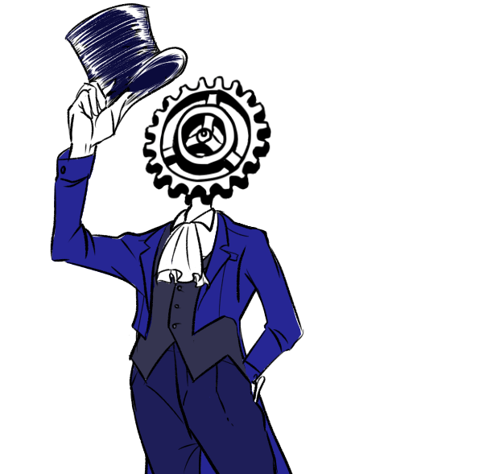
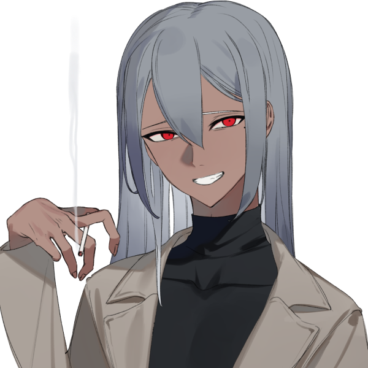
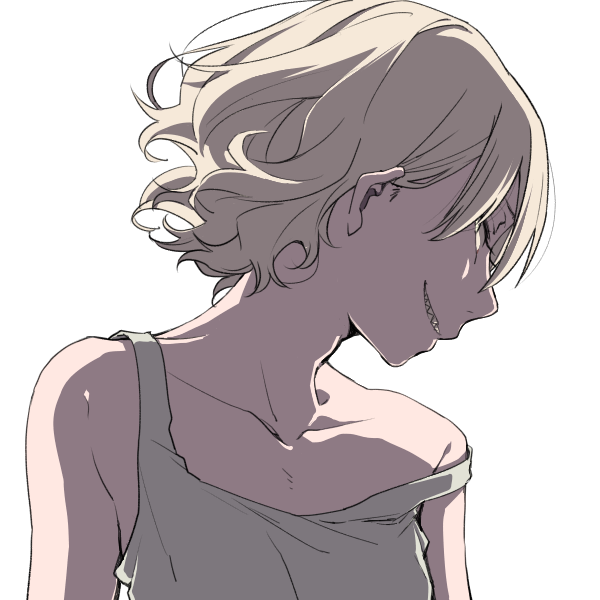
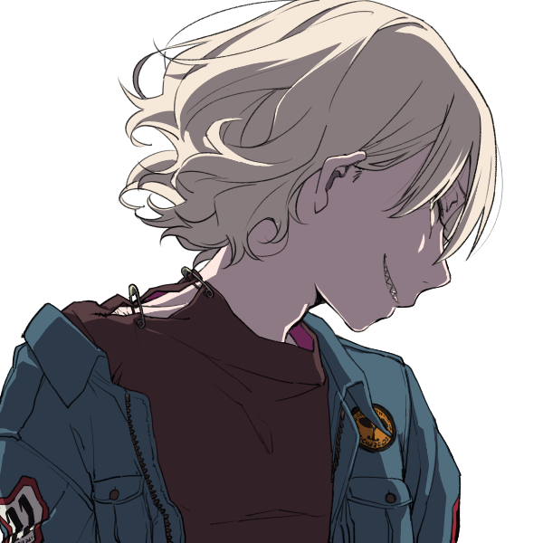
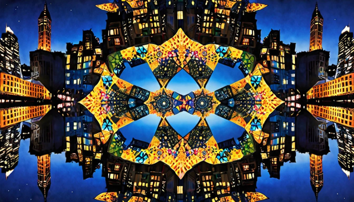
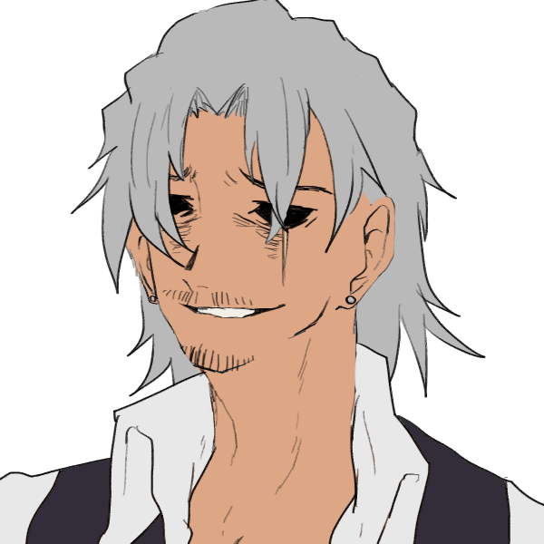
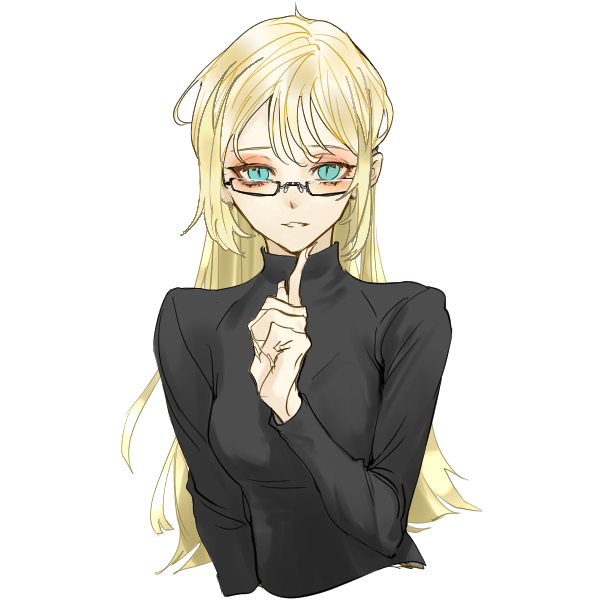
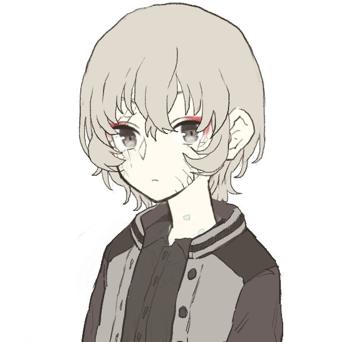
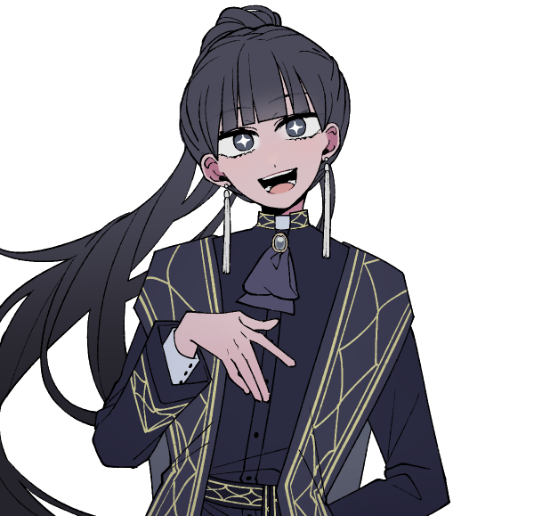

GM:雅
メインログ /
雑談ログ
Character Sheet
PC1：マヤ (キャラシート) PL：灸
PC2：ヴァニタス (キャラシート) PL：がぶらす
PC3：日向雛 (キャラシート) PL：めい
PC4：メアリー＝ブラッドルード (キャラシート) PL：ふろずん
PC5：イクサ・スミェールチ (キャラシート) PL：タンゴ
Index
ステージ：砂上都市サラーブ
◆Preplay◆
HO&PC紹介
◆Opening Phase◆
00 奪われた可能性
01 迷い子の仮宿
02 歌が響くは鏡面の隣人
03 匹夫と救恤者
04 舞い込んだチャンスは血と黄金の香り
05 推薦者は死の行進と共に
◆Middle Phase◆
06 共同戦線
07 情報収集
08 向き合う意思
09 情報共有
10 望まぬ再会
第13回目開始ポイント
ステージ：砂上都市サラーブ
西アジアに位置する非常に広大な砂漠に突如として現れた"砂上都市サラーブ"。
"五本指"と呼ばれる統制者達と数多くのヴィラン達が蔓延る都市ではごく当然のようにオーヴァードが力を振るい、秩序と混沌が危ういバランスで続いている。
都市の人間のほとんどは裏社会の人間であり、RWステージの定番であるヒーローのような善性を持つ人間はほんの一握りいるかいないか。他人の助けを待っていては食いつぶされる弱肉強食の世界だ。
このステージは己の欲望に忠実である者達が跋扈する舞台である。
■簡易用語集
・砂上都市サラーブ
第一次レネゲイドウォー終結から数か月で大きく発展した大都市。
中心には摩天楼が聳え、狭いながらも一つの国として成り立つ程の人口と活気がある。
しかしそこに住む人間達は大なり小なりの悪事に手を染めているヴィランであり、五本指と呼ばれる者達と数々の組織に依って統括されている。
・五本指
人差し指。中指。薬指。親指。小指を指した統一組織の名称。
サラーブを大きく発展させた5人のヴィランで構成されているが、その顔を知る者は少なく、また自らその立場を（一部を除いて）明かそうとしない。
親指は傘下の裏切りに遭い死亡し、現在は二代目である。
そして小指は空席の状態となっており、都市の中では有名な話となっている。
・B.T.Cスーツ＆ウェポン
血涙結晶の工房が製造する武具。B.T.CとはBlood and Tears Crystalsの略語。
中指の傘下組織であり、オーヴァードの死体から高品質な防具や武器を仕立て上げること技術を保有している。
工房の主を名乗る女ヴィラン"クレーン"は「彼らが全うした人生を如何に表現できるか」と彼女なりの敬意と芸術性を持ち合わせているが、その感性に共感する者はサラーブでも限りなく少ない。
■砂上都市サラーブ
第一次レネゲイドウォー終結時期に突如としてアラビア砂漠に現れた砂上都市。
都市の中心には摩天楼が聳え立ち、狭い都市なれど一つの国として成り立つ程の活気が取り巻いている。
サラーブはアラビア砂漠北東部に位置し、都市内の人口は数万人。その8割以上が犯罪に手を染めているオーヴァードである為、有数の犯罪都市として各国から警戒対象としてマークされている。
住人の人種も多様であり、あらゆる国の言語が話されている。その背景としては国を追われた犯罪者などがサラーブへ安住を求めて身を寄せた結果だとも言う。
■五本指
サラーブを統治する統一組織。五本指と呼ばれる所以は5人のヴィランが設立時に関わっていたことが由来とされている。
ただし、在籍するメンバーは『自身が五本指である』ことを明かそうとせず、サラーブが成り立つ以前からいたヴィランにしか正体が知られていない。身分を明かせば次席を狙った裏切りや暗殺が起きることを危惧しているから、とも噂されている。
その為、新参の木端なヴィランには『五本指とかいう偉いやつが都市を仕切っている』程度の認識しかなく、自身を五本指の一人と騙る者が後を絶たない。

"人差し指" グリムギア
・DATA
性別：無
年齢：不明
ブリード：ピュアブリード
シンドローム：バロール
ワークス/カヴァー：レネゲイドビーイング/人差し指
【肉体】12 〈白兵〉5
【感覚】15 〈射撃〉8 〈知覚〉10
【精神】25 〈RC〉20 〈知識：レネゲイド〉25
【社会】30 〈交渉〉20 〈情報：ヴィラン〉10 他
・解説
都市の指導者。五本指のまとめ役。歯車のRBと自称している。
頭部が歯車という奇怪な容姿ではあるが、性格は物腰柔らかく、敵を作りにくい。
"中指"のスコーピオに人差し指の座を狙って反旗を翻されたこともあったが、瞬く間に彼一人が制圧したという。それ以来、スコーピオの野心は鳴りを潜めた。
表の顔は「都市管理局局長」を名乗っている。管理局はグリムギアと、彼の部下である数名のオーヴァードで構成されており、都市の現状を常に把握する為に働いている。
サラーブが危機的状況にあれば、彼はPC達に官局局長の名で依頼を出すだろう。

"中指" スコーピオ
・DATA
性別：男
年齢：32
ブリード：クロスブリード
シンドローム：バロール/ハヌマーン
ワークス/カヴァー：ヴィラン/中指
【肉体】11 〈白兵〉8 〈回避〉5
【感覚】14 〈射撃〉9
【精神】17 〈RC〉10 〈意思〉8 〈知識：ヴィラン〉12
【社会】15 〈交渉〉18 〈調達〉20 〈情報：FH〉12 他
・解説
都市の市場を取り仕切る闇商人。
粗暴で野蛮、口が悪くグリムギアと対照的に敵を作りやすい男。
彼の行う事は倫理に欠けることが多々あるが、その全ては都市を想ってのことである。決して狂っている訳ではない。
表の顔は「闇市場のボス」を名乗っている。サラーブで仕入れるアイテムの半分以上は彼からもたらされることは間違いない。
 "薬指" ネオン・ファルシオン
・DATA
"薬指" ネオン・ファルシオン
・DATA
性別：女
年齢：約700歳
ブリード：クロスブリード
シンドローム：オルクス/モルフェウス
ワークス/カヴァー：ヴィラン/薬指
【肉体】14 〈白兵〉10 〈回避〉8
【感覚】12 〈射撃〉5
【精神】18 〈意思〉10 〈知識：ヴィラン〉10
【社会】13 〈交渉〉8 〈調達〉10 〈情報：噂話〉14 他
・解説
都市の要。
おちゃらけた性格で誰にでも平等に接する。が、刹那主義。快楽主義の傾向がある女。いつも明るく楽しくがモットーであるようだ。
都市内の建物の殆どが彼女の組織によって建てられ、インフラの一部も運営している。都市に住む全ての住人が彼女の恩恵を受けていると言っても過言ではない。
表の顔は「カジノの支配人」を名乗っている。小指が空座となる前は「不動産王」の肩書だったが、華々しい方がええとの事で現在はカジノの支配人を名乗ることとなった。
自身が薬指であることを隠そうとしないので、割とよくポロっと正体を零す。
"小指" 不在
現在の"小指"は空席であることは都市では周知の事実。
しかし理由は明らかになっておらず、自らその地位を捨てたとも、何かの責任をとって退いたとも噂されている。

 "親指" エトワール・ウェイストルム
・DATA
"親指" エトワール・ウェイストルム
・DATA
性別：女
年齢：12
ブリード：クロスブリード
シンドローム：ノイマン/エグザイル
ワークス/カヴァー：ヴィラン/親指
【肉体】 8 〈白兵〉5 〈回避〉6
【感覚】15 〈射撃〉10
【精神】10 〈意思〉8 〈知識：ヴィラン〉5
【社会】14 〈交渉〉10 〈調達〉9 〈情報：ヴィラン〉20 他
・解説
都市の番犬。懲罰者。
指の中で最年少で新参の少女。前任者の父は部下の裏切りに遭い死亡。自身の手で裏切り者を討ったことで親指の座に就いた。
ヴィランで組織した傭兵団"デザート・ハウンド"を率いており、彼女は彼らを家族と呼び、使役する。
指達の前では甘く見られぬ様に大人の姿に転じ、親指らしく頼りある頭目を演じている。
表の顔は「エトワールファミリーのボス」を名乗っている。傘下の組織を束ね、サラーブ内で組織間の無用な軋轢を生まない為に日々尽力している。
五本指の中で最年少であるが、組織を束ねる責任感は誰よりも持ち合わせている。
■歴史
第一次レネゲイドウォー終結時、敗走した一部のヴィラン達は身を隠す為にアラビア砂漠へと集った。期が熟すまで身を潜め、牙を研ぐための場所を設けたのだ。
ヴィランズネットを介して同胞を募った結果、砂漠には数百人規模のヴィランが集結。小さな集落を築くも過酷な環境に耐え切れず多くの離反者が出たが、それでも残ったヴィランがいたのは指導者である"グリムギア"の存在があったからだろう。
その後、ふらりと現れたファルシオンの手によりまともな建造物が建ち始め、町と呼べるまで発展を遂げた。
レネゲイド解放から9年。各国のヒーロー達が共存を図ろうとした様に、砂漠のヴィラン達も共存を図ろうとしていた。最低限の秩序と統率を望んだ者は多かったが、秩序を望まないヴィランに依って暴動が起きる。
この暴動はしばらくして鎮圧されたものの町への被害は大きく、癖の強いヴィラン達を纏め上げ、力ない者を統べる指導者達が必要と判断した"グリムギア"が『五本指』を結束。図らずしも強者が弱者を統べるヴィランらしい組織となった。
それから僅か数年。始めは烏合の衆にも満たなかった集落は"砂上都市サラーブ"と名乗る大都市へと発展を遂げる。
しかし周辺各国がサラーブを見過ごすはずもなく、膨れ上がった悪の居城に幾度となくヒーロー達を送り込み都市を陥落させようと試みた。だが統率されたヴィランはヒーロー達の想像以上に強力であり、未だ都市は健在である。
それでも立て続けに襲来するヒーロー、果てには都市外から面白半分で襲撃するヴィランなどから防戦する為に都市は保守的にならざるを得ず、当初の目的とは外れた体制となってしまった。
■施設
・オルタ・スクレイパー
サラーブの中心にそびえる高層ビル。月に1回、指達の会議が開かれるが緊急で召集されること方が多い。
普段は行政機関として機能しており、"人差し指"たるグリムギアの城となっている。
・ブラックマーケット
サラーブの繁華街を指す。食料品からオーヴァード専用の装備まで揃う巨大闇市場。
店の多くを"中指"のスコーピオが仕切り、市場の賑わいは昼夜問わず治まることはない。
・賭場
古今東西の非合法ギャンブルが集う区画。その華やかさはラスベガスのカジノに劣らない。
以前までは"小指"の管轄であったが、不在の今は施設を建築した"薬指"ファルシオンに権利が譲渡された。
・デザート・ハウンド
オーヴァードで構成された私設傭兵団。治安維持の為に都市内にいくつかの支部を設けている。
管理者である"親指"のエトワールは"中指"、"薬指"と契約を結んでおり、彼らの施設にガードを派遣することも多い。
指以外の悪漢達からは都市内で正義面をするデザート・ハウンドを目の敵にしており、存在自体が煙たがられている。
・ジャンクヤード
言わずもがなゴミの山であるが、怪しい人影を見たと噂が絶えない。大方は密売か密談に訪れたヴィランである。
・宿泊施設
カジノリゾートに並び立つ高級ホテル群。都市外から訪れる金持ち向けである。
どれかの最上階が"薬指"の拠点らしい。その全てが拠点とも。
・スリムハウス
多くの住民が住むアパートメント。都市の中心から離れるほど住居は貧層となるが、"薬指"の管理するアパートメントは最低限の設備が整えられている。
・診療所
ノーマルからオーヴァードまで利用可能。治療費が高く貧民は利用しづらい。
■ユニークアイテム
【ヴィランズスカー】
種別：その他
必要経験点：0
都市の住人であることを証明する物。獣の爪に裂かれたような斜めの三本線が印象的。
ヒーローズクロスと同様にレネゲイドウィルスの鎮静作用がある。多種多様な言語が飛び交う都市では自動翻訳機の機能も果たす。
このアイテムを所持している場合、バックトラックのダイスを振る前にあなたの侵蝕率を10点減少させることができる。この効果は1シナリオに1回まで使用できる。
【B.T.Cスーツ】
種別：防具
ドッヂ：-2 行動:-3
装甲値：7
必要経験点：25
血涙結晶の工房が製作したオーダーメイドスーツ。
極めて高性能だが非倫理的な製法で仕立てられ、レネゲイドの異常活性を促すため着用には注意が必要。
この防具を取得すると、あなたは【肉体】【精神】【社会】の内で1つのみを選択して3上昇させる。基本侵蝕率を+10させる。
【B.T.Cウェポン】
種別：効果参照 技能:効果参照
命中：-1 攻撃力：10
ガード値：3 射程：効果参照
必要経験点：25
血涙結晶の工房が製作したオーダーメイドウェポン。
使用者のレネゲイドと深く結びつき、エフェクトの威力を底上げさせる。ごく稀に脈動を感じられるのは気のせいだろう。
この武器を取得すると、種別を"白兵""射撃""RC"の中から一つ選択する。選んだ種別は技能に適応される。
"白兵"選択時、射程は至近となる。この武器を使用した白兵攻撃ではダイスを+2個する。効果が適用されるたびに侵蝕率を+1する。
"射撃"選択時、射程は視界となる。この武器を使用した射撃攻撃では攻撃力を+5する。効果が適用されるたびに侵蝕率を+3する。
"RC"選択時、射程は視界となる。この武器を使用したRC攻撃では攻撃力を+5する。効果が適用されるたびに侵蝕率を+4する。
Preplay
GM :
ではでは、PCの自己紹介から。
HO1のマヤくん！お願いします！
マヤ :
はいはい！

マヤ :
名前は『マヤ』
苗字等はなし、本名じゃないですが本人も誰も本名を知らないのでこれが本名ってことでオッケーです！
マヤ :
記憶喪失の全身機械人間。特に悪い事をしている自覚はないですが楽しいことを追い求めた結果悪い事"も"平気で出来るタイプの精神年齢幼め25歳。
マヤ :
戦闘スタイルは体内から生成した長銃での狙撃&射撃、ミサイルも撃てます！
システムはつよつよですがパーツが古いので喋ってるときにバグったりノイズがはしります、聞き取りづらいときは叩いて治してあげてください！
マヤ :
グリムギアに少し恩があるので基本的には大人しいです、DVDとかあげると再生できるのでDVDプレーヤーにもなります。以上！
GM :
ありがとう！グリムギアからDVDに焼いた映像資料とか渡してそうな感じもしますわね！
GM :
そんなマヤくんのHOはこちら
◆PC1用ハンドアウト◆
シナリオロイス:ストレイ
あなたはグリムギアから硝子化事件の調査依頼を受けていた。
調査報告を対面で行うとのことで、あなたはオルタ・スクレイパーへ向かっていた。
その途中であなたは路地裏に倒れる少女を発見する。
少女の皮膚は硝子のようにひび割れており、硝子化事件の重要参考人として少女をグリムギアの元へ連れていくのであったが……少女は記憶が曖昧のようだ。
マヤ :
記憶喪失お友達ですわね…
GM :
記憶喪失のタッグで仲良くやりましょうね……
ではマヤくん自己紹介ありがとう！
GM :
続いてHO2のヴァニタスちゃん！自己紹介をお願いします
ヴァニタス :
行くぜ

ヴァニタス :
ヴィランネーム【SAndAmAIdeN】、ヴァニタスちゃんです！
ヴァニタス :
HO1に続き全身機械マーメイドですが、人間はとっくのとうにやめておりますレネゲイドビーイングです！
ヴァニタス :
砂上都市サラーブ至上主義者で、この街にはびこる悪徳を是とする感じのヴィランです！本人はあんまり悪行を働かないよ
ヴァニタス :
今日も今日とて指に許可もとらずサラーブをパトロールしているぜ！見かける頻度は結構高いかもだし、オルタ・スクレイパーあたりを見上げれば普通にいるかも。クッソ眩しいけど
ヴァニタス :
戦闘スタイルはねぇ、遠距離RC型。めちゃ高行動値からエンゲージ離脱をしないと接近されてポンコツと化す。あと気づいたらダイス数がめっちゃ少なかった。どうにかなるなる
ヴァニタス :
サラーブ内の関係性で言うと薬指のファルシオンちゃんとちょっと仲が良いです
ヴァニタス :
以上だ！
GM :
ありがとう！毎日クソ治安のサラーブをパトロール（悪事は取り締まらない）してくれてるのはありがたがっているヴィランも多いでしょう…
GM :
そんなヴァニタスちゃんのHOはこちら！
◆PC2用ハンドアウト◆
シナリオロイス:“異なる隣人（アウトサイド・ネイバー）”
独自に事件を調査していたキミ（理由付けは自由）は“異なる隣人”と名乗る硝子化事件の首謀者らしき人物と対峙する。
しかし“異なる隣人”は手にしていた鏡から放たれた光に紛れて姿を眩ませてしまう。
光を浴びたキミは不可解な感覚を覚えるのであった。
GM :
なんかフラッシュされます。なんて悪質なんだ。
ヴァニタス :
反射光を反射されていく
GM :
ビカビカですよもう（適当言うGM）
では次に参ろう！
GM :
HO3！日向雛ちゃん！
日向雛 :
はーい！

日向雛 :
日向雛、17歳の日本人女子高生です！
日向雛 :
真面目で丁寧な口調で話すけど大体ゆるゆるほわほわにこにこしてる奴です。
日向雛 :
元々はUGNチルドレンで、ジャーム化したヒーローを処分するジャーム処理班“ハンターズ”に所属するUGNエージェントでした。
日向雛 :
ですが一年前に今のジャーム化したヒーローを殺さないといけない世界に疑問を持って、ジャーム処理班を脱退。
日向雛 :
UGNが保管していた賢者の石を盗んで、最近サラーブまで逃げてきました。多分数ヶ月も経ってないと思うのでかなり新参者です。
日向雛 :
ヴィランとしての欲望は、プライメイトオーヴァードに進化し、この世全てのレネゲイドをウロボロスの力で吸収することです。
日向雛 :
そのために賢者の石を探していて、サラーブに来たのも賢者の石の存在や情報がありそうだと思ったからでした。
日向雛 :
普段はサラーブの郊外の廃ビルに住み着いて、そこで能力を使った診療所を開いています。
日向雛 :
ただ医師免許を持っていないしちゃんとした設備もなくて、なんか申し訳ないので料金はかなり安いです。
日向雛 :
そのせいで全然稼げてなくて、大体いつもお腹を空かせています。
日向雛 :
すみません一週間位何も食べてなくて……とか言う。コピーした《麗しの容貌》の効果で健康状態維持してるからギリ生きてます。
日向雛 :
ブリードはピュアブリード。シンドロームはウロボロス。原初エフェクトで取得した振動球を使って戦うRC型です。
日向雛 :
クライマックスでは一回だけ賢者の石とクリ値を下げるエフェクトとタイタスを使って、クリ値2にしてクソデカ達成値を出しにいきます。
日向雛 :
でも使うまでにロイスが全然なかったり、侵蝕がやばかった場合はクリ値3で我慢するかもしれません。
日向雛 :
以上です！
GM :
ありがとう！お金はないが野望はある。クリ2でどんな出目が出るかGMもいまから戦々恐々としています
日向雛 :
達成値500目指します！
GM :
この出目ハンパねぇ！そんな流石PC3ァのHOはこちら
◆PC3用ハンドアウト◆
シナリオロイス:ジャス＆ティティ
ジャス＆ティティはキミが都市の新参者だった頃から親交のある姉弟だ。
彼らは時にキミの助けとなったり、逆に救われもした持ちつ持たれつの関係を築いていた。
そんな姉弟が突如として姿を消した。都市では珍しくもないことだが、硝子化事件のことが脳裏を過ったキミは不安に駆られて調査に乗り出すのであった。
GM :
仲良し姉弟の2人が最近姿を見ていないらしいです
日向雛 :
ジャスティティちゃん！！心配！！
日向雛 :
がんばって探します
GM :
頑張って彼らを探しましょう！ということで次の方へ！
GM :
お次はメアちゃんことメアリー=ブラッドルードちゃん！
メアリー :
はいなな！

メアリー :
メアリー=ブラッドルード。ヴィランネームは"黄金の心臓"。
メアリー :
「報酬さえ弾めば、どういう依頼でも達成する」との評判で名を馳せている"何でも屋"です。
メアリー :
メアリーはサラーブで育ったため、おそらくサラーブの典型のような精神構造をしています。
欲が深く、疑り深く。私利私欲のために表裏を使いわける。
メアリー :
座右の銘は「弱肉強食」「タダより高い物は無い」。大嫌いな言葉は「自己犠牲」「清貧」。
メアリー :
特に"金銭への執着"が強く、オーヴァードとしての能力は全て金儲けのために使っています。
メアリー :
シンドロームは、ブラム=ストーカー/ウロボロス。
メアリー :
自身の血液から"処刑器具"を作り出す能力を持っています。武器作成自体はブラム=ストーカーにありがちな能力です。
メアリー :
特筆するべき点としては、その血液が『黄金』であること。
厳密には(人体錬成みたいな感じで)複数の人間を材料に精製した"液状のRB"が黄金の血液となって体内を循環しており、
その能力を引き出すことで、非常に威力の高い武器を作成できることが挙げられるでしょう。
メアリー :
メアリーはこれまで、この特殊体質を利用する事でサラーブの最貧困層で生きてきましたが、そのあたりの経緯は割愛。だいたい第1次レネゲイドウォーの所為です。
メアリー :
実際のエフェクトの性能としては、単体火力特化。
他のPC達が持っている自己防衛のエフェクトも範囲攻撃のエフェクトを持っていない代わり、
クライマックス戦闘では、前人未踏の武器5倍アタックが出来ます。脅威の攻撃力固定値275。
メアリー :
エネミーとしての強さで考えた場合、メアリーはPC最弱ですけど、強大なヴィランとの決戦なら活躍できると思います。ヒーロー向きの人材。
メアリー :
以上かな！(ヴィランの都市における)善良な？一般人枠？として頑張っていこうと思います！よろしくおねがいします！！
GM :
ありがとう！金への執着とダメージがエグいメアちゃん……これからどうなっていくのでしょうか
GM :
そんなメアちゃんのHOがこちら！
◆PC4用ハンドアウト◆
シナリオロイス：“アベル”
ある日、キミは“アベル”を名乗る人物から依頼が申し込まれる。
内容は「“異なる隣人”が持つアイテムを回収し引き渡すこと」
“アベル”は多額の前金に加え、成功した暁には言い値の報酬まで約束するのだった。
GM :
至極単純でメアちゃんにぴったりのHOだね
メアリー :
依頼自体が単純でも、こいつには絶対にウラがあると、そう言ってるわ。私のゴーストが。
GM :
そうとも言えるしそうでも無いと言える。捉えかた次第だ。
GM :
ではでは、最後のPCに参りましょう。ママことイクサ・スミェールチさん！

イクサ :
「お願い、私の"子供達"。 お母さんを──守って。」
兵器開発・PMC企業コングロマリットの筆頭会社、IXAコーポレーションの若き社長です！
その正体はFHセルリーダーにしてヴィラン。
第二次レネゲイドウォーを真に引き起こすべく、あらゆる勢力に武器と武力をばらまく、死の商人そのもの。
無抵抗状態のオーヴァードを加工可能な"素材"に変換する能力を持ち、自身の子供を"素材"にして作った特殊兵器を用います。
イクサ当人はオーヴァードとして優れた戦闘力を持つ訳ではありませんが、
対話型総合支援システム「エス」(S.age)
特殊四脚大型戦車「アール」(R.ampart)
を筆頭に、多様で優れた"子供達"がイクサを支援し守ります。
データとしてはモルフェウスピュアによる《黄金錬成》全振りによる圧倒的常備化点126点で構築されたアイテム至上ビルドです！
もはや人とは呼べない状態に子を加工しながらも、子供達を愛していると口にするのはおかしな話ですが、
エゴイズムに歪んだイクサの認識では嘘ではない様子。
子供達以外の他者にも人当たりは良く穏和ですが、自分のやりたいことの為に必要とあらば、他者を平然と笑顔で踏みにじる事ができます。
契約上の信用はできますが、個人的な信頼を決して置いてはいけない危険人物と言えるでしょう！
GM :
一片に来た！ちょっと読む！
GM :
読んだ！戦争屋＆人間加工＆ママのクソヤバPC、いつ見てもインパクト抜群でございます
GM :
そんなイクサママのHOはこちら！
◆PC5用ハンドアウト◆
シナリオロイス:エトワール・ウェイストルム
キミは関係はどうあれ、エトワールに頼りにされる存在だ。
最近の硝子化事件が彼女の傘下組織、延いてはシマにまで影響が出始めている。
その影響はキミの活動にも支障が出始めているため、事態を重く見た彼女は共同で事件の解決を申し出る。
GM :
"関係はどうあれ"、親指のエトワールと仲がよろしいロイスでございます
イクサ :
うふふ♡
GM :
怖いよぉ…
GM :
ではでは、全員の紹介終わり！本編に入っていきますよ！
GM :
まずはマスターシーンから、ゆっくり腰を落ち着けてご覧になっていてください。
Main play
Scene00 奪われた可能性
GM :
都市の路地裏。
表の通りから聞こえる喧騒とネオンの輝きから離れたこの場所は、静寂と暗闇が毛細血管のように巡っている。
GM :
シン、と静まった路地は恐ろしく不気味で、暗闇からは名も知れぬ怪物が今にも飛び出してきそうだ。
GM :
だが、そんな静寂も長くは続かない。現にたった今、静寂を破る騒音が土煙と共に路地を駆け巡ったからだ。

ジャス :
「ぐっ、クソが……無暗に手を出すんじゃなかった……っ！」
GM :
腕を異形化させた少女の前に、ジャスとティティが膝をつく。
ジャスは得物の槍で身体を支えて悪態をつくが、深手の傷を負った身体では睨みつけることが精一杯だ。

ティティ :
「調子に、乗りやがって……」
GM :
ティティは顔を上げて、負け惜しみとばかりに少女を睨みつける……。

異なる隣人 :
「ケチな悪党如きがしゃしゃんな……よっ」
GM :
ティティの顔面に蹴りが飛ぶ。
GM :
彼の頭蓋は骨肉がひしゃげた気味の悪い音を立て、ぐらりと揺れた身体はあっけなく血の海に沈んだ。
ジャス :
「……ッこの、テメェ！！」
GM :
ジャスは短慮にも怒りのまま槍を振るうが、虚しく空を切る。
GM :
……その結果、ジャスが得たものは深々と自身の胸を貫く異形の爪だ。
異なる隣人 :
「手間ァ取らせんなって、ったく……」
GM :
少女は倒れた姉弟を踏み越えて、彼女達が守っていたものに近づく。
路地裏の角で惨めに身体を縮こませている、もう一人の少女の元へ。

少女 :
「フェイル、どうしてこんな……！」
異なる隣人 :
「愛想が尽きた。あとは────」
異なる隣人 :
「……いや、なんでもねぇ」
GM :
フェイルと呼ばれた少女は乱暴に襟首を掴み壁へ押しやると、怯える少女の手から何かを取り上げる。
GM :
それは手鏡のようだ。
GM :
手鏡は妖しい光を発すると同時に少女から『何か』を吸い上げていく。成す術なく呻くことしかできない少女の身体にはヒビが広がり、今にも砕けてしまいそうだ。
少女 :
「う、ぁぁ……」
異なる隣人 :
「恨むなよ。これも私の、いや、お前の……ッ！」
GM :
その時、闇から銀色の軌跡が伸びて異形化した腕を拘束する。
GM :
フェイルはそのまま地面に引き倒されるが、すぐさまそれを引き千切って軌跡の先を目で追った。
???? :
「────ここで何をしている、のかな？」
GM :
フェイルの視線の先には暗闇から男が姿を覗かせていた。
和装らしい袖から鎖を伸ばした男は傷ついた者達を一瞥すると、フェイルを見つめながら、少女に向けて声をかけた。

アベル :
「さあ、ここを離れてくれ。この暴れん坊には僕が灸を据えておくとしようじゃないか」
異なる隣人 :
「テメェ、なんだってここに……！ けど、ヘヘッ……運が悪かったな。この力はもう私のもんだっ！」
少女 :
「……！！」
GM :
鎖と爪が衝突する。瞬きの間に火花と正体不明の光が交差し、両者は激しい攻防を繰り広げる……。
GM :
少女は朦朧とした意識とヒビ割れた身体を引き摺り、戦場を背に路地を離れる。名も知らない、男の言われるがままに。
GM :
……どのくらい離れただろうか。
戦闘の渦中から離れ、意識も記憶も曖昧なままひたすら歩き続けた身体は糸が切れたようにコンクリートの上に倒れこんだ。
少女 :
「ぅ、うっ……」
少女 :
少女の意識が徐々に閉じていく中、ふと自分を助けてくれた姉弟と男の姿が脳裏をよぎる。
少女 :
確か、あの人達は……
少女 :
────あの人達は、誰だったのだろうか？
GM :
シーンエンド
Scene01 迷い子の仮宿
マヤ :
1d10+50(1D10+50) ＞ 6[6]+50 ＞ 56
GM :
ククク、うまく働いているようだな…

GM :
砂漠の夜はよく冷える。悪党が集いし砂上都市サラーブであっても、それは例外ではない。
GM :
繁華街を道行く輩達は下卑た笑いで溢れる酒場へと、もしくは人肌を求めて扇情的なネオンが漏れる店へと足を踏み入れる。これはサラーブの夜での日常風景だ。
GM :
だが、あなたの目的は繁華街で夜を過ごすことでは無い。
あなたは"都市管理局局長"ことグリムギアから、あなた宛てに召集のメッセージが届いたのだ。謂わばこれは道すがら、繁華街からサラーブ中央に位置する「オルター・スクレイパー」に向かっている道中だ。
マヤ :
アイモニターに映るマップを確認する傭兵のような風貌の男。
首に触れるとカチッと軽い音を立てて画面は切れる…筈だったが、なかなか消えないマップに小さな溜息をつく
マヤ :
「 ……あ～、召集かけるなら迎えぐらい呼んで欲しーよな。」緩めのフードの中へ片腕を突っ込むと気温の感覚スイッチを切りながら怠そうに繁華街を歩く、アイモニターを軽く叩くとやや不安な電子音を立てて やっとマップは消えたようだ。
GM :
どうにも行かない自身の身体に試行錯誤していると、男が向かい側からあなたに手を振って近づいてくる。どうやらあなたとは顔見知りのようだ。
GM :
覚えているかは別として
男 :
「よ、マヤじゃねぇか。相変わらず調子悪そうだな。 え？ 回路に砂でも詰まってるんじゃねぇか？」
マヤ :
「よ！こんな街じゃ不調のひとつふたつ日常だろ？ …オーバーヒートしたら街ごと吹き飛ばしちまうかもな！」ケラケラと笑いながら
男 :
「ハハハ！笑えねぇジョークだ……ジョークだよな？」
男 :
「まあ、それはそれとして……どうだ、最近は？ 俺ぁ"例の事件"のせいで傭兵需要が上がってな……」
GM :
例の事件、というのは巷を騒がせている硝子化事件のようだ
マヤ :
「あー…なんだっけ、…”ガラスがなんたら”ってヤツか？」実際はあまり記憶にないのだが丁度データに新しいワードだったようだ
男 :
「話が上がったのも最近だからうろ覚えなのもしょうがねぇか……」
男 :
「ま、最近物騒だからよ。いつも以上に気は張っておけよ？」
男 :
「おまえが硝子化しちまったら売れる部品も無くなっちまうからな！」
GM :
男はガハハ！と笑いながらマヤの肩を叩く
マヤ :
「繧ｸ繝｣繝ｳ繧… おっと、売る前に分解する知識もねぇだろっ。」なにやら機械音のような呟きが混じるが意に介せず笑うと軽く肩を叩き返す
男 :
「ちげぇねぇや。ま、精々スクラップにならねぇよにしろってこった」
男 :
「んじゃ、俺ぁ行くぜ。贔屓の可愛い子ちゃんが他のに取られちまうからな」 そうやって男はあなたから離れていく
マヤ :
「お前も気を付けろよ～…スクラップに…、あー 人間はスクラップって言わねぇのか…… ま！元気でやってくれや！」去っていく背中に軽口を叩きながら手をあげて
マヤ :
――暫く歩きながら マヤちゃん一晩いかが？と猫なで声で誘う美女を「ゴメンね～今日はオシゴト♪」と両手を合わせて断わりつつ繁華街を抜ける、
マヤ :
「…で、さっきのアイツ 誰だっけ？」
GM :
記憶にない見知らぬ男との会話を終え、あなたは歩みを進めていく。

GM :
……あなたの視界の端に、ふと気掛かりなものが映り込んだ。
それは煌びやかな繁華街とは似つかわしくない、襤褸切れと見間違えられそうな少女だ。
GM :
そんな少女が、弱弱しく倒れ込んでいる。
サラーブにおいては裏路地や路上で生き倒れる者は珍しくない。それらは酔っ払いか、もしくは死体などがほとんどだが……。
GM :
そんなことを知りつつも、あなたは意識は力なく倒れる少女に割かれた。少女の周りに僅かに散らばった硝子の破片があったのも気を引く原因だったのかもしれない。
マヤ :
目的地しか見えていなかったマヤの視界に、一瞬キラリと光る硝子の破片が映りこむ。普段だったら気にも留めない光景なのだがちょうど例の事件の話題が出たあとだ 踵を返して少女へ歩み寄って
マヤ :
「…死体？じゃねぇか、生きてそうだし…」事件の被害者の死体かと考えるが少し違った様子に悩んで
マヤ :
「ガキの扱い方は～…記録してねぇんだよなー…」若干めんどくさそうに呟くと、少女の服の襟を猫のように掴み、持ち上げて揺すってみる
少女 :
「うっ、うぅ……」
少女 :
「はっ……！？」
GM :
少女は動揺したように辺りを見回した後、ぎょっとした顔であなたを見つめる。
少女 :
「あ、ぁな、あなたはだれ……！？ ここ、どこ……！？」 目を白黒させている
マヤ :
「おっと、お決まりのヤツ～…」掴み上げたまま独り言
マヤ :
「さぁ、どこだろうなココ…俺もすぐ道忘れちまうから。」うーんと首を傾げて謎の同調をする
少女 :
「ぇ、ま、迷子……？」 思わずジタバタさせていた手足を止める
マヤ :
「そ、俺ちゃん迷子！…んで、お嬢ちゃんも迷子。」でしょ？と空いている片手で指をさす
少女 :
「う、うん……そう、たぶん……」 自身がないのか、目を伏せて呟く
マヤ :
「オッケ～♪ じゃあ”迷子センター”にいきましょう～！」少女を地面に降ろすと明るい声で矢継ぎ早にそう告げる
マヤ :
「…それとも此処のこる？」寂しい路地裏から明るい大通りへ数歩下がりながら有無を言わさぬ様子で
少女 :
「まい…セン…？」
少女 :
「……ううん。一人はいや、かも……」 小さく首を横に振って
マヤ :
「…よし、いい子だ んじゃ…まず自己紹介。」力業で落ち着かせることに成功したのを見るとそのまま戻ってくる
マヤ :
「俺は”マヤ” マヤちゃんって呼んでいーよ。嬢ちゃん名前は？」
少女 :
「マヤ、ちゃん……えーっと、私は……」
少女 :
名を口出そうとするが数秒ほど口を噤んでしまい、目を左右に泳がせた。
少女 :
「あれ、名前……私に、あったっけ……？」 空虚になった頭から、その言葉を一つ絞り出す
マヤ :
「ははーん…… 俺とオソロイってことね。」頷いてあっけらかんと返す
少女 :
「わかんない……」 過去のことも思い出せないようで、少女はすっかり意気消沈してしまった
マヤ :
子供の扱いはどうも苦手なようで、一緒に若干しょんぼりしてしまう
マヤ :
「…ま、これのなんかの縁だし 俺と違って思い出せるかもしれないから。まずはエラい人に頼るしかねぇな。」俺も本名じゃないし、と言いながら元の用事を思い出したように
マヤ :
「…てか、寒くねぇの？」目線を合わせるように隣へしゃがむとタンクトップ姿の彼女を指差して
少女 :
「えっと、ちょっと……ぶるぶるする……」
マヤ :
「じゃ、説明長いし着ていーよ これ着てりゃ絡まれないし。」自分の羽織っていた上着をぽいっと渡すと映写機のスイッチを入れる
マヤ :
「上映会とか久々～♪ ちゃんと映れよな…」等とぼやくと、若干映像は劣化しているが壁に先ほどの様子が映し出される
少女 :
「わっ……」 上からぶかぶかの上着を羽織って、そそっと映像に近づき覗く
マヤ :
「これ俺の視界 さっきお嬢ちゃんを此処で見つけて～、で…これが起こしてるとこな。」まず起こしてる状況を説明する
マヤ :
「…あ、これは要らないや」風俗街の映像はスキップする
少女 :
「？」 不思議そうな顔で映像を見つめるが……特に思い出せることはないようだ
マヤ :
「んで…今からこの建物の、このヒトの所に一緒にいきます。」 ｼﾞｼﾞｼﾞ…と映像に目的地とグリムギアが映し出される、この映像は先ほどより劣化しているがこれはマヤの記憶の薄さによるものだ ある程度の特徴は分かるだろう
少女 :
「う、うん……？」 要領を得ているのか得ていないのか、微妙な声で返事をする
マヤ :
「……嬢ちゃんの倒れてたとこ、硝子がいっぱい散らばってるだろ？」ちょいちょい、と先ほどまで少女が倒れていた場所を指差す
マヤ :
「最近ここらでは人間が硝子になる事件が起こってる、嬢ちゃんの記憶喪失と関係あるかもしれない。」調べたらさらっと思い出せるかもしれないしな、と付け足しながら
少女 :
「……そう、なんだ」 硝子化する事件について興味を持ったのか、はたまた記憶を取り戻す手がかりになるからか、少し声に張りが出る。
少女 :
「……うん。一緒に、いく。私が助けになるのなら……。」
少女 :
少女はそれが役割なら、と言った風に頷いてみせた。
マヤ :
マヤにとっても硝子化は一応、他人事ではない…とはいえ普通の人間たちとは違って『人類全てが一撃で砕けてしまうのなら射撃など面白くない』というのが専らの彼の懸念だ
マヤ :
…そんなことを思いながらぼんやりと映像を眺めていると少女の言葉に若干ポカンとした反応をしてしまう
マヤ :
「……マジでこの街の人間じゃないらしいな。」
少女 :
「……？」 あなたの考えなどいざ知らず。少女はことん、と首を傾けている。
マヤ :
「…ま、じゃあ～ 大体の理由は分かっただろ？」カチッと小気味の良い音を立てて映写機をオフにするとその場に立ち上がって彼女を見下ろす
マヤ :
「ここからじゃ10分ぐらいか…それ着てりゃ誘拐されねぇから暑くなっても脱ぐなよ？」マヤがフードにスプレーで描いたギア(歯車)のマークは一応機能しているらしい、そう言いながら指を指す
少女 :
「ん、わかった……」 ぶかぶかの袖を振って応える
マヤ :
先行して大通りへ戻るが、その途中ﾎﾞｼｭﾝ！と軽い爆発音と共にアイカメラ(先ほど素直にスイッチが切れた映写機)から小さな煙があがる
マヤ :
「…あ～、クソッ！珍しくお利口ちゃんだなと思ったら…ッ！」軽く悪態をつきながらも足はとめず目的地へ
少女 :
突然、顔から煙の上がった様にびっくりするが、何が面白かったのか少女はクスクスと笑ってみせた。
GM :
あなた達……1人と1体はサラーブ中央へと向かう。
歩みを進めれば背の低い建物は徐々に背を伸ばし、あっという間にビル群が聳える摩天楼へと切り替わっていく。少女は興味津々といった様子で忙しなく頭を動かしながら、その光景を網膜に焼き付けていた。
GM :
その中でも、やはり少女の気を大きく引いたのはあなた達の正面に聳え、サラーブの天を衝く『オルタ・スクレイパー』だった。
GM :
それを見上げる少女の後頭部は身体ごと後ろに倒れてしまいそうなほど傾いていた。
少女 :
「うわぁ……」 目を丸くしてオルタ・スクレイパーを見上げている。
マヤ :
「相変わらずデケェなぁ～…」少女の後ろで一緒に見上げながら、こちらへズイズイと傾いてくる彼女を自然と支える形に
少女 :
「すごい、ね……。お空に届いちゃいそう……」 塔のてっぺんまで見ようと目を細くしている
少女 :
「よく、ここに来るの？」
マヤ :
「んー、どうだっけな…？時々？」もっと来てるかもしれないがきっと忘れている記憶も多い、そこそこに答える
少女 :
「そう、なんだ……。忘れちゃうくらい、たくさん来てるのかも、ね……」 空を見上げながら、そうポツリと呟く
???? :
「いやですねぇ、よく来てるじゃないですか」
GM :
突然、無人だったハズのあなた達の背後から透き通った声が響く。
GM :
振り向けばそこには紺碧のスーツを纏い、頭部を歯車に置き換えた存在────グリムギアが立っていた。
グリムギア :
「こんばんは、マヤ。まだ私を忘れてはいないだろう？」
GM :
コツコツと革靴の足音を響かせて、グリムギアはあなた達の傍に立つ。
マヤ :
「…… そ～～～ぉなんだよっ！アンタの顔見た数とココに来た数が合ってない！」特段驚いた様子もなく振り返ると、グリムギアをビシッと指差しながら
グリムギア :
「ハッハッハッ……ひとまず、今日は来てくれて感謝しますよ」
グリムギア :
「……それで、この子は？ あなたに養子など居た覚えはありませんけども」 グリムギアは頭の歯車を傾けて、少女を（恐らく）覗き込んでいる
少女 :
「……？」 少女はマヤの背中に隠れて、覗き込むグリムギアの頭を白黒した目で見つめ返している
マヤ :
「あーそうだった。来る途中に拾ったんだよ、ちょっと俺とオトモダチみたいでさ…」自分の頭を軽く指差し、暗に”記憶喪失”ということを示す
マヤ :
「あと、アンタの興味ありそうなものが、……そうだ壊れてるんだった…」映写機をつかおうとするがﾋﾞｰ！とエラー音が鳴ってしまう。
…ちょっとめんどくさそうに倒れていた場所の硝子について自分で話します！
グリムギア :
「────ふむ、重要参考人と言ったところでしょう。よくやってくれました」 少女を見つめながら頷く
グリムギア :
「ところで……この子の名前は？」
マヤ :
「…さぁ、本人も忘れてるし。」当たり前のように
少女 :
「……うん」 不安そうな表情を浮かべて、少女は顔を俯かせた。
グリムギア :
「ふーーむ。記憶喪失で、名も無いと……私があなたを拾った時と少し似ていますね？」
マヤ :
「そうだっけ？…まぁ、そうだろうな。」うっすら残る記憶を思い出しながら頷く
マヤ :
「…、同じ名前にでもする？」
グリムギア :
「どっちかわからなくなるじゃないですか……」
マヤ :
「それもそっか、んー…名前…、名前……」ほとんどない子供の頃からの記憶を無理やり手繰り寄せる
マヤ :
すると記録の隅っこで、靄が掛かったような優しい女性に話し掛けられる光景が浮かぶ
マヤ :
データの女性の声… ≪――また迷子になっちゃったの？研究所広いもんね…一緒に帰ろうね。≫
マヤ :
「迷子、…… Stray…？」
グリムギア :
「ストレイですか。呼び名としても良い響きですね」
少女 :
「スト、レイ……？ それ、私の……？」
マヤ :
「そ、ストレイ！ 俺が子供の頃よく呼ばれてた…って記録あったし…、この名前どうよ？」
少女 :
「……ストレイ、ストレイ……」 何度もその名を繰り返し呟く
少女 :
「……うん、ストレイ。良いと、思う……！」
ストレイ :
ストレイはうんうんと頷いて、その後も何回か自身の新たな名を呟いた。
グリムギア :
「名前は重要ですからね。個のアイデンティティそのものですから」
グリムギア :
「……さて、立ち話も何ですから続きは中で話しましょう」
GM :
グリムギアの頭が『ガコンッ』と重い音を響かせると、背後に《ディメンジョンゲート》が現れる
グリムギア :
「お先にどうぞ？」
マヤ :
「相変わらず便利だなソレ。んじゃまずはレディーファースト～…… って、流石に怖ぇか。」後ろに隠れているストレイを見て
ストレイ :
ストレイは相変わらずマヤの背に隠れて、裾を握っている。急に開いた《ディメンジョンゲート》に驚いているようだ
マヤ :
「…怖いってさ。」グリムギアを見て肩を竦める
マヤ :
「一緒に行けば怖くない、ってな」
目的地の前でこうしているわけにもいかないので、自分の後ろに隠れる少女を片腕でひょいと担ぎ上げるとゲートへ
グリムギア :
「こういうのは慣れですよ、慣れ。ささ、2名様ご案内～」
ストレイ :
「わ、わ……！？」 担ぎ上げられたストレイは抵抗できるわけもなく、ゲートへと運ばれていく……

GM :
ゲートをくぐるとオルタ・スクレイパーの高階層フロアに繋がっていた。フロアを照らす照明はグリムギアを象徴するように蒼く、落ち着いた雰囲気の中で幾人かの部下がゆったりとした手付きで事務仕事に準じていた。
グリムギア :
「やっぱり青は落ち着きますね」同じくゲートを抜けたグリムギアがコツコツと歩みを進める
ストレイ :
「さ、さっきまで外にいたのに……」 キョロキョロと頭を振り回して
マヤ :
「こんな青かったっけな…」見るたび記憶へ上書きされる鮮やかさに独り言
マヤ :
「な、便利だろ？ ……待てよ、これで迎えに来てくれりゃよかったんじゃねぇの？」先程繁華街で呟いた言葉を改めて
グリムギア :
「私も忙しいもので、中々離れられないのですよ。さっきは偶然にも窓を見下ろしたらあなた達が見えたまでです」 肩を竦めてみせる
グリムギア :
「さてさて、ここからが本題ですが……」
グリムギア :
「マヤ、あなたには今まで単独で硝子化事件を調査して頂いておりましたが……これからチームを組んで調査に当たってもらいます」
グリムギア :
「メンバーも既にリストアップしておりますが……」 グリムギアが遠くにあるデスクの一つに手を伸ばすと、積み上がった紙片の束から1枚の紙が抜き出され、彼の手元に引き寄せられる。
グリムギア :
「どうぞ、今回はあなたを含めて5人を想定しております」 そういってあなたに紙を手渡す。
マヤ :
「へぇ…チームか、そりゃ初めてだな…」過去にチームを組んだ記憶はすっかり抜け落ちているようだ 紙を受け取って内容を確認しながら
GM :
手渡された紙には、以下のメンバーがリストアップされていた。
GM :
・マヤ
・ファルシオン
・日向雛
・メアリー＝ブラッドルード
・推薦待ち
グリムギア :
「一番下はとある人に推薦を任せていましてね、時期に連絡も届くでしょう」
マヤ :
「ふーん…、まぁ…極力忘れないようにするわ。」名前の一覧を見て、恐らく数時間後には忘れているだろう
グリムギア :
「その言葉も少し間を置いたら忘れていそうですがね」 ハハハ、と冗談めかして
グリムギア :
「ああ、そうだ。私、ちょっとした会議にお呼ばれして数日ほどサラーブを離れるので、そのつもりでお願いします」 さらっとそう告げる
マヤ :
「げ、マジかよ～…じゃあこの紙の内容データに焼いて欲しいんだけど。」内容をスキャンする用に、フードからメモリをいくつか取り出す
マヤ :
「チッ、忘れたら聞こうと思ってたんだけどな…」アテが外れたようだ
グリムギア :
「そういうと思って用意してますよ。この媒体でよろしかったですか？」 事前に用意したメモリを取り出して、マヤへと渡す
マヤ :
「サンキュ～、コレ最近なかなか見つからねぇんだ。」
メモリを渡されるとご機嫌に、そして渡されたひとつのメモリは《電子使い》のエフェクトにより手のひらで分解され消えてしまった。
マヤ :
「これで１日ぐらいもつだろ…」メモリの残りをフードの中へ仕舞いながら
グリムギア :
「あとはもう一つ、言うまでも無いかもしれませんが……」 ストレイを見つめて
ストレイ :
「？」
グリムギア :
「……その子の子守りもお願いしますよ。あなたに取っても、ストレイに取っても都市での生活は刺激になるはずです」
グリムギア :
「重要参考人であるから守れ、というのもありますけどね」
マヤ :
「…つまり作戦も６人ってコトじゃねぇか……」
マヤ :
「ま、いっか… 俺が顔忘れちまったら可哀想だしな。」そう言いながらストレイを見下ろして
グリムギア :
「いっそ新しい家族だと思って接してあげてください。境遇も似ていますし、妹みたいなものですよ」
マヤ :
「妹ね…」俺って昔妹いたのかな…等と考えながら呟く
マヤ :
「…あ、俺の代わりにこのヒトの話覚えててくれる？」良いことを思いついたように話しかける
ストレイ :
「えっ！？ ぁ、う……うん……？」 作戦と、家族？と……と指を折って記憶しようとしている
マヤ :
「…嘘嘘。適当でいーよ、適当で」頑張ってる様子に笑って
マヤ :
「…んじゃ、ヨロシクな ”ストレイ”？」片手をグーにしてそっと差し出して見せる
ストレイ :
「……うん！」 差し出されたグーの意味を直感的に理解したようで、小さな握りこぶしをマヤの拳に優しく当てた
マヤ :
ストレイへのロイスを『Ｐ親近感／Ｎ忘却』に変更します！表に出ているのはＰで！
GM :
おｋおｋ！
Scene02 歌が響くは鏡面の隣人
GM :
登場PCはヴァニタスちゃん！登場侵蝕どうぞどうぞ
ヴァニタス :
1d10+55(1D10+55) ＞ 4[4]+55 ＞ 59
GM :
中くらい！（PCはデカイ）
それじゃ導入文から！
GM :
サラーブ上空。あなたは夜の砂漠を横断する一陣の風にのって空中を揺蕩っていた。
GM :
目を開けばサラーブの夜景が眼前に輝き、空の彼方には星一つとない闇が広がる。空を制し、上も下も関係のないあなたにとってはこの夜景こそが星なのかもしれない。
GM :
尤も、いつ砂塵と消えるかわからない蜃気楼とも言える星々であるのだが────。
ヴァニタス :
「――、―――♪」
上空を揺蕩う。好きな歌と共に、荷物を浮かせてサラーブを眺めている。
ヴァニタス :
今日もサラーブは悪都であることを確認し、満足げに象徴たるオルタ・スクレイパーを見やる。きっと偉い人達が、今日もこの街のやりくりをしているのだろうと思いを馳せている。
GM :
いつものサラーブ、いつもの喧騒。いつもと何一つ変わらないサラーブ……ある事件が起きていることを除いて、だが。
GM :
……その時、路地の一画から眩い光が上がる。それは銃のマズルフラッシュでも、あなたが知るエンジェルハィロウのオーヴァード達が発する光でもなかった。
ヴァニタス :
「――……？あら、何かしら…誰かが変なものでも作ったのかしら」
ゆるりと尾ひれをくゆらし、身を翻してのんびりとそちらへ向かう

GM :
あなたはほの暗く、陰気な路地へ降り立つ。この地点が光が上がったポイントだ。
GM :
そしてこの場に降り立って、あなたは初めて気づく。
GM :
身体を動かす度にジャリジャリと地面で何かが擦れる音。
僅かな光源に照らされて、地面には何かの破片が煌めいている。
GM :
更によく目を凝らせば、地面には細かな硝子の破片が散らばり……路地の先には精巧な胸像が転がっているのがわかるだろう。
GM :
……だが、それは硝子化の影響で砕け散った人間のなれ果てであることなど、あなたにとっては明白なことだ。
ヴァニタス :
「あぁ、最近の、ねぇ。何が起こってるのかしら…グリムギアなら知っているかも？」
浮いているパーツで散らばった破片をちゃりちゃりと触っている
GM :
破片を手慰みのように弄っていると、あなたは背後から声がかけられた。

???? :
「はぁ、はぁ……んだぁ？ お前、どっから現れやがった？」
GM :
粗暴な態度を取る少女が夜闇から姿を現わす。手入れされずに毛羽だった頭髪と、誰かから奪ったせいかオーバーサイズのブカっとしたジャケット……そして怪我をしているのかぎこちない動きを見せる右腕。それだけなら、サラーブのどこにでもいるチンピラだろう。
GM :
────だが、その右手に妖しい輝きを放つ手鏡を手にしているのなら、話は別だ。
GM :
そして少女の背後に闇に紛れた何者かがいるのも、警戒すべき点だろう
ヴァニタス :
「どこから……空から来たの。いつも浮いてるのだけど…ご存じない？もしかしてサラーブには最近来たの？」
"異なる隣人"フェイル :
「空ぁ？ 空なんて見上げる意味なんて無いから存じ上げねぇな」
ヴァニタス :
「意味だったら、オルタ・スクレイパーなんて綺麗よ？たまに見てみると良いかも」
他意は無さそうだ
"異なる隣人"フェイル :
「……あ？ んだそれ、あのデッケェ塔のこと言ってんのか？」 彼女も他意はなく、首を傾げてみせる。この都市に馴染みがないようだ。
ヴァニタス :
「やっぱり新人さんなのねっ。ようこそ砂上都市サラーブへ、私が歓迎するわ？」
にこにこと、新しい来訪者を心より歓迎する。
"異なる隣人"フェイル :
「……見た事ねぇタイプだな。絡みづれぇ」 頭をボリボリと掻いて、渋い表情を浮かべる
??? :
「……おい、コイツは殺さないのか？」
あなた達の会話を遮るように、背後にいた一人が声を発する。
"異なる隣人"フェイル :
「私が狙ってるやつらじゃあねぇが……おい、お前」
めんどくさそうにヴァニタスを見つめて
"異なる隣人"フェイル :
「私達がこれ以上の殺し……あー、硝子化事件とか言ったか？ そいつを続けるなら、あんたはどうする？」
ヴァニタス :
「人を殺す分には別に構わないけど…あまり大規模になったら困るわ～？私はこの街を愛しているから」
頬に手を当て、困ったように首をかしげる
"異なる隣人"フェイル :
「へっ、そりゃあ好都合だ。愛だか何だか知らねぇが、好き勝手にやらせて……」
GM :
その時、会話を遮るようにヴァニタスの通信端末に着信が入る。
ヴァニタス :
誰だか確認してみよう
GM :
確認してみれば「ファルシオン」からの着信だとわかる。
ヴァニタス :
『はーい、もしもしっ』
特に渋る理由も無いのですぐ出よう
ファルシオン :
「おっ、もしもしヴァニちゃ～ん？ うちうち、ファルシオンやけど」 飄々とした声があなたの耳に届く
"異なる隣人"フェイル :
「…………」 なにしてんだこいつら、と呆れと警戒を交えて様子見している
ヴァニタス :
『ファルシオン！なぁに？こんな夜に何かあったの？』
随分なついている様だ。楽し気に通話をしている
ファルシオン :
「いやなぁ、聞いてくれや！ 最近騒ぎになっとるやん、アレ、なんて言うたかな～……あの、硝子になるやつ？」
ファルシオン :
「アレをな、解決するためにチームが組まれるぅ～って達しが来たんよ」
ファルシオン :
「それだけならええねん、勝手にやっとけば。けどな～……」
ファルシオン :
「うちがメンバーとして勝手にリストアップされとってな！？ いやうちも参加するんかーい！ ってなっとんねん、今！」
ファルシオン :
「も～そんなオモロない事したないし……酷いと思わん？」
ヴァニタス :
「都市の発展とはなんにも関係ないのにねーっ」
ファルシオン :
「なー！ ほんまメンドーなんやけど～……」
ファルシオン :
「……けどまあ、歯車頭の考えっぽいし何や考えはあるっぽいねん」
ファルシオン :
「うちが出たくない～言うた手前アレやけどぉ、ヴァニちゃん……代わりに受けてくれたりせん？」
ヴァニタス :
「え～、どうしよっかな～。私もパトロールで忙しいしな～～」
くすくすと、悪戯っぽく笑って
ファルシオン :
「ヴァニちゃんのいけず～！ なんか好きなもの買うたるから、な？ 今頼れんのヴァニちゃんぐらいしかおらんねん～！」 通信越しでも手を合わせている光景が目に浮かびそうな声だ
ヴァニタス :
「本当！？じゃぁ受けるわっ。約束ね？そしたら改めて何をするか、教えてちょうだい？」
小さくガッツポーズをしてから、質問を飛ばす。
最終目標を含んだ具体的な指令が欲しいようだ。
ファルシオン :
「さっすが話がわかる～！」
ファルシオン :
「書類にな～、色々書いてあった気がすんねんけど～……（ｶﾞｻｶﾞｻ）」
ファルシオン :
「まあ、犯人っぽいやつ殺せばええんとちゃう？ 書類見つけたらあとでデータで送るわ～」 通話中の書類探しを諦め、適当なことを伝える
ヴァニタス :
「わかった、件の事件の犯人を殺せば良いのね？」
簡単ッ！
ファルシオン :
「そ！ なんや手強いかもしれんけど気を付けてな？ 知らない人に声かけられても着いていったらあかんで？」
ヴァニタス :
「はーい、街から出ないから大丈夫！それじゃあそれくらい？」
ファルシオン :
「ま～そんなもんやな！ 頼りにしとるで、"SAndAmAIdeN"ッ！」
ヴァニタス :
「それじゃぁね～、と」
通信を切り、まだ目の前に件の人物がいることを確認する。
"異なる隣人"フェイル :
「……もう行ってもいいか？」 少女の目は警戒の色に染まり、いつでも行動を起こせる体勢にある
ヴァニタス :
「ん～ん、そういうわけにもいかなくってね」
にこやかな笑顔は変わらない。ただ、纏う雰囲気が変わったことは容易にわかる。
ヴァニタス :
「何がどうなるかはわからないけど、きっとサラーブの為になると思うから…」
弦を弾く音がする。何処からともなく、異様な形状をした弦楽器のようなものが浮遊して現れる。
"異なる隣人"フェイル :
「ケッ、だろうと思ったぜ……」 戦闘の体制を取ろうとするが、疲弊しているせいで覇気が感じられない。
"異なる隣人"フェイル :
「……相手をしてやりてぇところだが、生憎と体力を消耗する訳にはいかねぇんだ。だから……」
"異なる隣人"フェイル :
「こいつで────勘弁してやる！」
GM :
……少女が素早くあなたへ鏡を向ける。すると鏡面からカメラのフラッシュを思わせる閃光が迸り、あなたの身体は奇妙な感覚を覚え、何かに引きずり込まれる。
"異なる隣人"フェイル :
「一つ教えといてやる！ 私はフェイル、"異なる隣人"フェイルだ！」
GM :
完全に引き込まれる直前、そんな少女の声が聞こえた気がした……。
GM :
足のある者ならこう例えるだろう。
地が足から離れ、天と地がぐるりと反転するような感覚。地に足着かぬあなたには、いきなり空へ放り投げられた感覚……と言った方が正しいだろう。

GM :
そしてあなたの視界に飛び込んでくるのは、まるで都市のすべてが鏡面で、見渡す限りの空間が歪曲と屈折を繰り返す極めて異様な光景が広がっていた。
万華鏡に馴染みがあるのなら、その中に飛び込んだのかと錯覚してしまうはずだ。
ヴァニタス :
「こ、こは…何…？」
見たことのない情景に困惑を隠しえない
GM :
……一瞬にして広がった光景が、急速に収束を開始する。
地平線に吸い込まれる様な感覚があなたを包み、再び目を開けば先程の薄暗い闇の広がる路地へ戻っていた。
GM :
そこにはフェイルと名乗った少女の姿も、背後にいた2人もいない。静寂と硝子が広がる路地がただあるのみだ。
ヴァニタス :
「な、何ぃ…？何だったのぉ…？」
不思議そうにきょろきょろと周囲を見渡すが、何も見つかるはずもなく。
ヴァニタス :
「ターゲットもいなくなっちゃったし……どうしようかなぁ……」
もう夜も遅いしなぁ、と通信機器を呆然と見つめる。
GM :
────通信機器も沈黙を貫く。ついさっき話していたファルシオンの声が名残惜しく感じるかもしれない。
GM :
ひとまず、あなたは硝子化事件についての詳細が送られてくるまでの間……再びサラーブの空へと泳ぎ戻っていくのであった。
GM :
では"異なる隣人"ことフェイルへの感情を教えてくだされ！
ヴァニタス :
執着/✓脅威で！
GM :
ありがと！ なんとかしてぶっ飛ばしてやりましょう
Scene03 匹夫と救恤者
GM :
PC3のひなちゃん！登場侵蝕どうぞ！
日向雛 :
1d10+39(1D10+39) ＞ 2[2]+39 ＞ 41
GM :
低燃費だねぇ、例に漏れず導入から！まずはジャスティティと出会う回想です
日向雛 :
はーい

GM :
現在からおよそ数ヵ月前。
普段は霧が立ち込めるはずのない路地にて、戦闘が行われていた。
ジャス :
「ぜぇ、はあ……くそ、おいっ！いい加減にしろよクソ爺が！」
ティティ :
「クッ、大きな声を出すなバカ姉貴……！ ゲホッ、霧を吸い込んじまうだろうが！」
GM :
ぜえぜえと呼吸を繰り返す姉弟ことジャスとティティ。その2人を下卑た笑みを浮かべて見下す男がいた。

襲撃者 :
「ふぅむ、最初はここまでかと思ったけんどよ……」
GM :
彼が煙管を吹かすと霧が一層と濃くなる。どうやらソラリスのエフェクトで作られた霧が姉弟の身体を蝕んでいるようだ。
GM :
十全な実力を発揮しきれない2人の攻撃はのらりくらりと躱され、ただ体力だけを消費してしまっている。
襲撃者 :
「こんのフィリップ・モリス様の敵ではにゃーてこった！ カハハハ！」
翻訳機を通しても訛りのキツイ男はケタケタと嗤う。
ジャス :
「なーにがフィリップ・モリスだ！ 英国かぶれの田舎野郎！」
ティティ :
「色んなところから借金してる癖にエラそうに……！ テメェの借金のカタは命で払ってもらう、ぜ……ッ」
GM :
せめての虚勢を張るティティだがついに膝をつく。毒のせいで意識は朦朧として真っ直ぐ立つことすらままならない……。
GM :
霧を払うように槍を振るうジャスも動きが鈍く、ついにはすれ違い様に煙管を頭に叩き込まれて姿勢を崩した。
ジャス :
「いってぇ……！」
襲撃者 :
「ハ！ハ！ハ！ なぁんとも情けにゃー姿だ、もうまともに動けんだろ？ ん？」
襲撃者 :
「まあ心配せんでもええ、俺は紳士だで。命まで取るヒデェことはしねぇ、ほんとだぞ？」
GM :
男はジロリと2人を品定めするような視線を向ける。
そしておもむろに懐へ手を伸ばすと、鈍い光を放つナイフが握られていた。
襲撃者 :
「……たーだちょっこし内臓をもらってくだけだで。借金の足しにさせてもらうでよ、安心せぇ痛みはにゃーて、バッチリした麻痺毒が効いとるでな」
ジャス :
「ざ、けんな……！」
ティティ :
「ぁ、姉貴……っ」
GM :
男はジャスを地面に押し倒し、刃先を胸部へ突き立てようと試みた……。
GM :
────その時である。
日向雛 :
低く、大気が震える音が響く。
日向雛 :
同時に男の手に軽い衝撃が走り、ナイフが宙に弾かれゆく。
日向雛 :
反射的に、男はナイフを目で追う。そして、目撃するだろう。
日向雛 :
鋭いナイフが、バラバラに細かく切断される瞬間を。
襲撃者 :
「うおっ！？ な、なんだあっ！？」 分解されゆくナイフから咄嗟に手を離し、周囲を索敵する
ジャス :
「ナ、ナイフが……！？」
日向雛 :
男が周囲を見回すと、霧の向こうに立つ人影に気付く。
日向雛 :
人影は霧をかき分け、ゆっくりとそちらへと近づいていき、やがてその姿を現した。

日向雛 :
「……あ」
日向雛 :
「こ、こんにちは……！」
日向雛 :
どこかの学園の制服を着た、金髪緑目の少女は……
日向雛 :
その場に似つかわしくない、気の抜けそうな笑顔と声で三人に挨拶した。
襲撃者 :
「お、女ぁ？ 今ぁ良いとこだで、邪魔せんといてくれんか？」
ティティ :
「お、おまえ……こんなとこで何を、して……っ」
ジャス :
「お、おいデカ女っ！ 呑気に挨拶してる場合か……！？」 ゲホゲホと深く咳き込む
日向雛 :
「でも、挨拶は大事ですし……」 ジャスとティティに困ったように笑いかけつつ
日向雛 :
「あの、初めまして、わたしは日向雛といいます」
日向雛 :
「ごめんなさい、お邪魔なのは分かっているんですけれど、少しだけあなたとお話がしたいんです。あまり時間はおかけしないので……」 男に近づく
襲撃者 :
「……おう、それ以上おれにゃ近づくんでねぇぞ」 あなたを警戒してか、煙管を咥える
襲撃者 :
「この都市でなぁ、礼儀正しいやつにゃ出くわしたら気を付けることにしてんだ。だいたい変人か、気が狂ってるやつばかりだで」
日向雛 :
「……えっ、そうなんですか？」 立ち止まる
襲撃者 :
「へっ、俺の経験則じゃ。お前らも経験あんじゃろ？」 ジャスとティティに視線を落として
ティティ :
「否定は、できねぇ……」 だがこの状況から救い出してくるのではないか？ と心のどこかで思っているのも確かのようだ
日向雛 :
「はぁ……そうなんですね……」 噂通り大変な街だな、と
日向雛 :
「まあ、わたしのことはともかく」
日向雛 :
「実はさっきの皆さんの会話が、偶然聞こえてしまって……」
日向雛 :
「いくらお金が必要でも、流石に勝手に他人の臓器を取っちゃうのは可哀想かな、って……。オーヴァードでも、修復が効くかわからない部位ですし」
日向雛 :
「その方達、どうか見逃してあげてはもらえませんか？」 困ったように小さく笑いながらお願いする
襲撃者 :
「……ほーん、確かにオメェさんの言葉に一理ある。それに俺ぁ紳士だで」 煙管は咥えたまま、そう言う
襲撃者 :
「そん代わりよ、女。オメェがその分の金を立て替えてくれるっつーんならよ、コイツラは見逃してやってもええ」
襲撃者 :
「どうじゃ、払えるんか？」下卑た笑みを浮かべて、煙を吹かす
日向雛 :
「分かりました。えっと……ちょっと待ってくださいね」 スカートのポケットからがま口の財布を取り出して
日向雛 :
「……あ！お金ならありますよ！」 ぱぁっと顔を明るくする
襲撃者 :
「ほう、いくらじゃ？」
日向雛 :
「なんと、150円もあります！！」 日本円の硬貨を出して、手のひらに置いて見せる
襲撃者 :
「…………」
ジャス :
「……ティティ、見た事ねぇコインだけどこれ足りそうか？」
ティティ :
「明らかに足りねぇだろバカ姉貴……」半ば諦めたような表情を浮かべる
ジャス :
「足りねぇらしいぞォー！！ おーい！！」
日向雛 :
「ですよね……！」 えへ、と笑って
日向雛 :
「いやでも、今日はこれで勘弁してもらえるかな～……なんて……」
襲撃者 :
「……おめぇさん、もしかしなくても舐めとるな？」 男は青筋を浮かべて、殺意を滲ませる
日向雛 :
「あっ、いえ、その……そういうわけじゃ……ごめんなさい……」 殺意を感じ、一歩後退りして
襲撃者 :
「……ええこと思いついたぞ。こいつと、そいつ……そんでオメェ」 煙管でジャスとティティ、最後にあなたを指す
襲撃者 :
「3人分の臓器を売っ払えばええ！ 最初っからこうすりゃ良かったん……じゃ！」 大きく息を吹くと、路地の霧は一層と濃くなる
ジャス :
「っ、ケホッケホッ……！？」 霧の毒性が強まり、オーヴァードの肉体を蝕む…
日向雛 :
「っ！！」
日向雛 :
雛の体が霧に覆われる。
日向雛 :
だが、その瞬間……まるで“落ちる”ようにして、彼女の姿が消えた。
日向雛 :
「先に手を出したのは、そっちですからね」 直後、男の足下から声が聞こえる
襲撃者 :
「な、なんじゃ────！？」
日向雛 :
《闇夜の烏》。日向雛は建物の影を伝って、男の影の中に入り込んでいた。
日向雛 :
男が声に驚く間に、影から這い出てその背後に回り込む。
日向雛 :
雛が男を睨むと、彼のその背中に黒い影が走った。
日向雛 :
影はまるでマーカーを引くようにして、真っ黒な線を浮かばせる。
日向雛 :
「そんなに臓器がほしいなら……」
日向雛 :
位置は男の背中側、脇腹付近……。
日向雛 :
「ご自分のものを売ってください！！」
日向雛 :
雛が影の線を指で素早くなぞる。
日向雛 :
指先から発する真空の刃が切り取り線を走り、男の肉を一瞬で切り裂いた。
日向雛 :
男は激痛を感じながら、傷口から血飛沫を上げて飛び出すものを目にするだろう。
日向雛 :
それは握り拳程の大きさで、ソラマメに似た形をした臓器……腎臓だった。
襲撃者 :
「な、ガァァ……ッ！？」 傷口を抑え、零れる腎臓を戻そうとするが容易に戻るワケはない
襲撃者 :
「ぐ、ぐそ……っ。ツイとらん……わ……」 男の顔は徐々に青ざめ、そのまま吸い込まれるようにしてコンクリートの地面に倒れ込んだ
ジャス :
「うおぉ……今の、どうやって……」 目をパチクリさせてあなたを見つめている
ティティ :
「……助かった、のか？ さっきの金の下りはともかく……」
日向雛 :
「えっと……」 心配そうに倒れた男を見下ろすが、いや先にそっちかと姉弟の方に向き直って
日向雛 :
「あの……大丈夫ですか？今、治しますね」 二人に駆け寄る
ティティ :
「あ、ああ。助かる……」
ジャス :
「……いや、待て！」
日向雛 :
「え！？」 ストップ
ジャス :
「……タダで助けるなんてムシの良いことがあるワケがねぇ。デカ女、何が望みだ？」 この都市で培われた疑心暗鬼が、あなたへと向けられる
日向雛 :
「何が望み……と、言われると……」
日向雛 :
「別に……特には……？」 首を傾げる
ジャス :
「何も、だぁ？ はん、そんなワケないね！ 大方、このあと私達をどっかに連れて行って碌でもねぇことしようって腹だろ！」 警戒心を露わにして立ち上がる
ティティ :
「ま、まぁ落ち着けよ姉貴……。警戒する気持ちもわかるが……」 姉を宥めようとする彼だが、あなたへ向ける視線は警戒心が宿っている
日向雛 :
「うーん、そうですね……。確かに、そう思われてもおかしくなかったのかも……」 と、警戒されながら
日向雛 :
勝手にジャスとティティの前で祈るように指を組み、目を閉じる。
日向雛 :
《アスクレピオスの杖》を使用。体内のレネゲイドに呼びかけて、治癒能力を向上させる。
日向雛 :
二人は警戒した体勢のまま、毒で麻痺した体が一気に楽になっていくのを感じるだろう。
日向雛 :
ジャスはさっき頭部を殴打された痛みも引いていくことが分かる。
ジャス :
「……！」
ティティ :
「こいつは……すごいな、あんたの力か？」 怪我をしていた箇所を眺めて
日向雛 :
「はいっ。そんな大したものでもないですけどね」
日向雛 :
「あの……さっきの答えなんですけれど」
日向雛 :
「別にどこに連れて行くつもりもありません。そもそもわたし、この街に来たばっかりですし、右も左もわからないし……」
日向雛 :
「助けたのは、ただ見過ごせなかったってだけで……。わたしはヒーローでもなんでもないし、要するにただの自己満足なんです」 死なないように襲撃者の男にも一応祈り、エフェクトを使って回復しておく
日向雛 :
「それじゃ、行きますね。警戒させてしまってごめんなさいっ」
ティティ :
「あ、ああ……。自己満足、か……」 今時そんな人間がいるものなのか？と雛を見送る
ジャス :
「……」
ジャス :
「……いいか、恩なんて感じてねぇ！ 私は騙されねぇからな！」
日向雛 :
「え？あ、はい！」 驚きながら振り向いて
日向雛 :
「……あ？」
日向雛 :
振り向き際、突然雛の体がぐらつく。そして、どてん！と大きな体が石畳の上に倒れた。
ティティ :
「うおっ、おいおい……」
ジャス :
「……あの女、アホなんじゃないか？」 手を貸すことなく、腕を組んで
ティティ :
「姉貴に言われたくはねぇだろうよ……」
日向雛 :
「……………」 倒れた状態のまま、お腹からグゴゴゴゴゴゴ～……と地響きのような音が鳴リ出す
日向雛 :
「お、おなか……すいた……」
ティティ :
「……姉貴、俺どうにもアイツが怪しいヤツには思えねぇんだけど」
ジャス :
「…………ったく！ おい、デカ女！」
日向雛 :
「は、はい……」 二人にお尻向けながら小声で返事
ジャス :
「どっかでメシを奢ってやる！ それでさっきの貸しはチャラだ！」 ふんっ、と鼻を鳴らして
日向雛 :
「え……」 メシと聞いてハッと目を見開き
日向雛 :
「ほ、ほんとですか……？やった～……！ありがとうございます……！」 わぁいと倒れたまま喜ぶ
ジャス :
「助けられっぱなしってのも性に合わないからな……」
ジャス :
「てかいつまで寝てんだ！ さっきの強さの面影もねぇ！」
ティティ :
「まあまあ、おい。肩でも貸すか？」
日向雛 :
「ご、ごめんなさぁい……おねがいします……」
ジャス :
「まったく、あんだけ実力があんのに行き倒れるとかどうなってんだ……」
GM :

GM :
それからしばらくして……
GM :
サラーブ郊外を夕日が照らす。日中の刺すような日差しも落ち着き、幾分か過ごしやすい時間帯だ。
GM :
あなたが診療所として構えた廃ビルの一室にも、橙色の光が差して落ち着いた雰囲気を演出させている。
日向雛 :
「はぁ……」 窓際のベッドに腰掛けて、差し込む夕日の光に目を細める
日向雛 :
「今日も手がかりなし、か……。やっぱり全然見つからないなぁ……」
日向雛 :
「これ以上動き回るのは、ちょっと（空腹的に）しんどいし……。今日はもう休もうかしら……」
日向雛 :
そんな独り言を呟きながら、目を閉じる。そのまま、うとうとと眠気に身を任せ始めた……。
GM :
そうしていると、ドアの外から聞き慣れた2人分の足音が響く。どうやら今日も"あの2人"がやってきたようだ。
ジャス :
「ひーなーっ！遊びにきったぞー！」
ティティ :
「よっす、相変わらずうるさくてすまねぇな」
日向雛 :
「わぁっ！？」 膨らみそうだった鼻提灯がぱちんと割れるような勢いで覚醒し、ビクッと肩を震わせる
日向雛 :
「あ……ジャスさん、ティティさん……いらっしゃい……」
GM :
ジャスが元気よく扉を開け放ち、ティティがその後に続いてやってくる。この姉弟とはあの後も何度か出会う機会があり、なんやかんやで良好な関係を築けていた。
GM :
そしてその腕には日用品や食料品が大量に入った紙袋が抱えられていた。
ジャス :
「おう、ここに置いとくぞ！」 紙袋を台の上において、診療室を我が物顔で寛ぎ始める
ティティ :
「まったく……最近の調子はどうだ、ひな？ 色々とやってるみてぇだけど」
日向雛 :
「わあ～！いつもありがとうございます！」 笑顔でお礼を言いながら立ち上がり、紙袋を確認して
日向雛 :
「うーん……特に変わらず、ですね……。もうただの時々診察してお散歩してる人になっちゃってます」 ティティに困ったように笑いかける
ジャス :
「変わらずって感じか。ま、ひならしくて良いんじゃねぇか？」
ジャス :
「私達も"いつもの仕事"の帰りだしな～」
GM :
……彼女の言う仕事とは、初対面の頃に行っていた荒々しい取り立てなどのことだろう。その証拠にジャスとティティの身体の至る所に掠り傷や打撲痕が確認できる。
日向雛 :
「それは……。うん、それもそうですね……」 変わらずの日常。UGNにいた頃、最も大切にするように教えられていたことだ
日向雛 :
「お二人もいつも、お疲れ様です。あの、その傷よければ治しましょうか？」
日向雛 :
「差し入れのお礼にってことでっ」
ティティ :
「ん、ありがとよ。いつも助かってるぜ」
ジャス :
「おう！ いつもの頼む！」
日向雛 :
「はーいっ」
日向雛 :
いつも通りに指を組んで祈りを捧げ、回復エフェクトを使用する。大した傷ではないので簡単に怪我は治った。
日向雛 :
「おしまいです。痛みませんか？」
ティティ :
「……（肩を回して）。問題なさそうだ」
ジャス :
「スッキリだ！ いやぁ、普通のとこじゃ治療にめっちゃ金取られるからな～……」
ジャス :
「あ、ひなのこと都合の良いヤツって思ってるわけじゃねぇぞ！」
日向雛 :
「ふふっ、そんなの分かってますよ～。でも確かにこの街、治療費が高いところが多いですもんね」
日向雛 :
「うちで良ければ、いつでも来てください」
ティティ :
「今後とも贔屓にさせてもらうぜ。 俺達もよく助けてもらってるからな」
ジャス :
「治療費なぁ……あーあ、私もひなくらい強かったらもう少し稼ぎが良いんだろうけどなぁ」
ティティ :
「……ああ、装備を整えるにも金が必要だ。この街じゃそこそこのヤツが強くなるには金がいるんだよな……」
GM :
二人は切実そうに溜息をつく。
日向雛 :
「まあまあ……。自分じゃあまり分からないだけで、実は少しずつ強くなっているかもしれませんよ？」
ジャス :
「そうかな……そうかも……」
ティティ :
「そんな変わってねぇよ、俺達は。 いつも同じ様なクズ共とどんぐりの背比べしてるんだ」
日向雛 :
「そうですかね……？場数を踏んでいってるんですから、進歩はあるものだと思うんですけど……」
日向雛 :
「わたしにも、何かお手伝いできればいいんですけどね……」
ティティ :
「ひなの手を煩わせるワケにはいかねぇよ。そっちはそっちで何かやってんだろ？」
日向雛 :
「はい……探しものを……」
ジャス :
「ふぅん。なぁなぁ、それって何だ？ 覚えてたらついでに探すからさ」
日向雛 :
「え、えーっと……」 そういえばちゃんと言ったことはなかったな、と思い出して
日向雛 :
「あの……こういう石、なんですけれど……」
日向雛 :
そう言って袖を捲り、右手の甲に埋め込まれた十字型の石を見せる。
ジャス :
「おお？ なんだそれ、流行りのオシャレなのか？」 マジマジと見つめて
ティティ :
「────────」ティティは目を丸くしてその石を見つめている
日向雛 :
「ふふっ、違いますよ～。これは賢者の石っていうものなんです。ご存知ありませんか？」
ジャス :
「あ～～～、アレか。聞いた事あるぜ、うん……ティティがなんか言ってた気がする」
ティティ :
「相変わらずのバカ姉貴が……はぁ、まさかひなが適合者とはな……」
日向雛 :
「ごめんなさい、隠していたつもりじゃないんですけれど……あまり言う機会がなくて……」
ティティ :
「いや、謝ることじゃねぇ。別に大っぴらに言う必要もねぇからな」
ティティ :
「それより納得がいった。そりゃひなが強い訳だ……」
ジャス :
「お～、つまり……この石が強くしてくれる、って事か？」
日向雛 :
「か、簡単に言うと……そうですね」 簡単に言い過ぎ
ティティ :
「わりぃな、姉貴のアホに合わせてくれて」
ジャス :
「アホってなんだ！ それにそんなバカじゃねぇって！」
日向雛 :
「ふふっ……いえいえ」 微笑ましそうにしてる。ジャスちゃんがアホなことは否定してない
ジャス :
「うぐぐ……あ、ひな！ そういやティティのこと、もっかい診てやってくれよ！」
ティティ :
「あ？ どこも悪くはねぇぞ」 姉を訝しんで
ジャス :
「いやいや、お前さ……」 弟の肩をぽんぽんと叩いて
ジャス :
「ひなに"お熱"じゃねぇーか！ ハッハッハッ！！」
ティティ :
「は、は～～～～っ！！？」
ティティ :
「このクソバカ！ じゃあ姉貴も頭の方を診てもらったらどうだ！？」
ティティ :
「てか姉貴も姉貴でここに来る前日は『ひなは～、ひなが～』っつってんじゃねぇか！ 耳にタコができるんだよ！ バ～～～～カ！！！」
ジャス :
「あぁっ！？ バカバカうるせぇよこのアホ弟！！」
GM :
姉弟はお互いの胸倉や髪の毛を引っ張り合って口汚く罵り合っている……
日向雛 :
「…………」 熱があると聞いて少し心配になったが、二人の様子をぽかーんと眺めて
日向雛 :
「ふふっ……！二人とも、ほんとに仲良しですね……！」 心配無用だったことに気づき、口元を両手で隠しながら楽しそうに笑う
GM :
「「仲良くねぇよ！！」」 二人を息を揃えて、あなたに返すのだった
GM :
GM :
そして現在。
GM :
診療所の窓から眺める砂漠の空は珍しくどんよりと暗い雲が太陽が覆っていた。風も吹いているようで、窓の揺れる音と砂の擦れる音が絶え間なく耳につく。
GM :
……なんとも憂鬱な気分を誘う天気だ。
こんな日でも、あの姉弟がいればこの気分も晴れるのだろうが……彼らはここ数日ほど姿を見せていない。
日向雛 :
「…………」 窓の外を眺めて
日向雛 :
「二人とも、今日も……来ないな……」
日向雛 :
「待っていれば、来るんじゃないかと思ったんだけど……」 大きな背をしょんぼりと丸めて
日向雛 :
「……風、強いけど……やっぱり捜しに行こうかしら……」
日向雛 :
うん、そうしよう。と、外に出る身支度を始めていく。
GM :
……扉の外から足音が響く。しかし、それは1人分の足音だ。
GM :
扉の前で足音が止まると"コンコン"と丁寧なノックが響いた。
日向雛 :
「……！は、はい！どうぞ！」 玄関の方に向かう
GM :
玄関には身形の整えたスーツ姿の男が立っていた。
GM :
数多の患者を診ているあなたは一目で気づくだろう。
この人物はこの辺りの貧民でも、治療を必要とする人物ではないことを。
日向雛 :
「え、えっと……いらっしゃいませ……？」 この辺では初めて見るタイプの人だわ、と目を丸くする
男 :
「……あなたがヒナタヒヨコで間違いありませんか？」
男 :
口を開いた男はあなたを値踏みするように頭からつま先から眺める。
日向雛 :
「は、はい……！そうです、日向雛です……！」 身支度途中だったので、服は着てるもののスリッパが片方脱げてたりなんかだらしない格好
男 :
「……なるほど」 男は懐に手を伸ばす。
男 :
……引き出したその手には封筒が握られ、男はあなたにそれ差し出した。
日向雛 :
「……これは？」 とりあえず受け取る
男 :
「私は管理局の者です。最近サラーブを騒がせている硝子化事件はご存知で？」
日向雛 :
「管理局の……！」 その格好にも納得し
日向雛 :
「はい……それは知っています。奇妙な現象ですよね……」
男 :
「はい、その何とも奇妙な事件の解決にチームが編成されました。あなたはその一員となって頂きたい。メンバーや報酬に関しては封筒内の書類に目を通して頂ければ……」
日向雛 :
「わたしが……！？それは、まあ……」 封筒から書類を出して目を通す
GM :
書類には現時点でのメンバーと活動拠点となるオルタ・スクレイパーのオフィス。そして報酬に関しての詳細な文章が数枚に渡って綴られていた。
日向雛 :
「なるほど……」
日向雛 :
「あの……少し質問をいいでしょうか？」
男 :
「私に答えられる範囲であれば」
日向雛 :
「ありがとうございます。あの……」
日向雛 :
「最近、わたしの友人がいなくなってしまって……。もしかして、この硝子化事件に巻き込まれてる可能性って……」
男 :
「突然の失踪や行方不明はサラーブでは常ですが……比較的最近、というなら巻き込まれている可能性は十分考えられるかと」
日向雛 :
「最近です、比較的！そうですよね、かも……しれませんよね……」 不安そうに考えて
日向雛 :
「……分かりました。わたしでよければ、お手伝いさせてもらいます」
日向雛 :
「事件のことは前から気になっていましたし、友人のことも……心配なので……」 書類を纏めて、男の目を見る
男 :
「快い返事に感謝を。事件に関することなら調査の範疇でしょうし、メンバーの顔合わせ後に個人的に調べてもらっても構わない……」
男 :
「と、局長なら言うでしょうね」
日向雛 :
「ありがとうございます！確か、あの……頭が歯車の……？」
男 :
「ええ、歯車の。個性的な見た目ですが……悪い人ではありませんよ」
男 :
「尤も、私達から見ればという評価ですが」
日向雛 :
「あはは……ヴィランですもんね……」 どう言えばいいものかと笑って誤魔化す
日向雛 :
「とりあえず、さっそく向かいます！ちょうど出ようとしていたところだったので……！」
男 :
「ええ、よろしくお願いします。私はこれから行くところがあるので、お先に失礼しますよ」
日向雛 :
「はい、お疲れ様です。お気をつけてっ」 笑顔で手を小さく振って送り出す
日向雛 :
「……よーし」 改めて、身支度を整えて
日向雛 :
「待ってて！ジャスさん、ティティさん……！」
日向雛 :
「わたしが絶対、見つけてみせるから……！！」
日向雛 :
強く意気込んで、玄関の扉を開けて外へと踏み出す。
日向雛 :
「ぶわぁ～！！？？風つよい！！！！」
日向雛 :
砂嵐の対策なんて全くしてないため、吹きつける砂粒に悲鳴を上げながら走り出した……。
日向雛 :
ジャス＆ティティのロイス感情を友情/◯不安に変更します！すごく心配です、友達なので
Scene04 舞い込んだチャンスは血と黄金の香り
メアリー :
1d10+35(1D10+35) ＞ 2[2]+35 ＞ 37
GM :
ていねんぴっぴ、では導入から！

GM :
こちらも同じくサラーブ郊外。小さなオフィスに視点は映る。
GM :
ここは『如何なる依頼も確実に達成する』と評判される萬屋GOLD DUST。
その名は郊外に留まらず、中心部に住むヴィランの耳にも届いているようで日々さまざまな顔がこのオフィスを訪れている。
GM :
つい先日にも管理局から硝子化事件の解決チーム結成のオファーも届いた。あなたの実力が知れ渡っている証拠だろう。
メアリー :
「ついに管理局から依頼が来るまでに……フフ、順調そのものね……」
メアリー :
「このまま流れに乗れば、いずれは“小指”の座に就くコトも夢じゃない……勝負どころよメア……」
メアリー :
そう笑うメアの右手には、純白のショートケーキ。
メアリー :
サラーブにはどこか似つかわしくないソレは、富裕層御用達の都心の店から取り寄せた高級品。
メアリー :
高級なプレートと高級なスプーンを用意して、上品にチマチマと少しずつ口に運ぶべき逸品だ。
メアリー :
だが、メアは最貧困層の出身。
メアリー :
テーブルマナーなんてクソ喰らえとばかりに、ケーキを包むアルミの下敷きを手に持つと……、
メアリー :
そのまま手掴みで豪快に齧りついた。
メアリー :
事業が軌道に乗って、メアは金を手に入れた。ケーキだって買える。が、品性は買えないのだ。
メアリー :
「ん～……請けていた他の依頼は片付けられたし、コレを堪能して一息ついたらグリムギアのオファーに返事を～……」
GM :
"コン、コン…"と弱弱しいノックが扉から聞こえる。どうやら萬屋の手を借りたがっている者が訪れたようだ。
メアリー :
「……この大事な時期に、また依頼？人気がありすぎるのも少し考えものね？」手元のショートケーキを急いで口に押しこんで片付け
メアリー :
「────コホン、はいどうぞ？」ハンカチで口元を拭ってから入室を促す
GM :
許しを得た訪問者は、ゆっくりと扉を開く。
アベル :
そこには凛とした立ち姿で和装に身を包んだ男性が佇んでいた。
アベル :
「やあ、ここがGOLD DUSTで合っているかな？」
メアリー :
「ええ、ようこそ"萬屋 GOLD DUST"へ」
メアリー :
「私はここの主、メアリー=ブラッドルードよ」
メアリー :
「(ふむ、和服……ニッポンの伝統衣装だったかしら……)」
メアリー :
「(少なくとも、郊外に住む貧民の身なりではない)」入ってきた瞬間、客人の値踏みをはじめる。
メアリー :
「わざわざ治安の悪い郊外まで、御足労痛み入るわ」
メアリー :
「どういった依頼でも確実に解決してくれる何でも屋があるらしい────そうした噂を聞きつけて、ここまで？」
アベル :
「メアリーくん、噂の方は兼ねて聞いているよ。随分な実力者だってね」
アベル :
「キミの手が借りられるなら、ここまで足を運んだ甲斐があるというものだ」鈴の音が鳴るような声で、男はそうあなたへ語り掛けた。
メアリー :
「フフ、その期待に応えてあげたいのは山々だけれど」高級“感”の漂うハイブランド“風”の応接用ソファに腰掛け
メアリー :
「実際に私の手を貸せる問題かどうか、まず詳しい話を伺うわ？」依頼人には向かいの席に座るよう促す
アベル :
「無条件に受けていては身が持たないだろうね、いいよ。依頼を……あ～……」
アベル :
「自己紹介、していなかったね？」
アベル :
「僕はアベル。大層な名前をしているけどただの日系人さ」 よろしく、と微笑む
メアリー :
「アベル、アベルね、よろしく」
メアリー :
「(名前に興味はなかったけど……アベル、少し引っかかる名前ね……)」
アベル :
「？」 その場に佇んで首を傾げている
メアリー :
「……いえ、改めて依頼の話に戻りましょ」
メアリー :
「あなたは一体、この私に何をしてほしいのかしら？」
アベル :
「ああ、依頼というのは奪われたものを取り返して欲しい……と、いうものなんだ」
アベル :
「硝子化事件。キミも聞いた事が……いや、知っているだろう？」
メアリー :
「……ええ、あらましくらいは」
アベル :
「うん、その硝子化事件の犯人に……僕が研究していたものを盗まれてしまったんだ」
アベル :
「こう、これ位の手鏡でね……」 目の前に幅を作ってみせる。表情的な大きさだ。
メアリー :
「研究していた手鏡……」
メアリー :
「その話の流れからすると、普通の手鏡じゃないみたいね？盗まれたことが硝子化事件にも直接関係しているのかしら？」
アベル :
「そうだね。直接的……アレを増々力強くさせてしまったみたいでね……」
アベル :
……彼は自身の胸元を指すと固く巻かれた包帯を覗かせており、黒く変色した血を滲ませていた。
メアリー :
「(なるほど……直接、犯人と対峙して、敵わなかったからウチに依頼しに来た感じね……)」
メアリー :
「その怪我は大丈夫？痛むようなら腕の良い医者を紹介するけれど？」親切なポーズをしておく
アベル :
「キミは親切だね。でも心配には及ばないよ、少し歩きづらいだけさ」ニコリと微笑んで
メアリー :
「それなら良いのだけれど……」どうでも
メアリー :
「まあ、ひとまず依頼内容に話を戻しましょう。さっき言っていた"アレ"というのは犯人のことかしら？犯行グループについて、何か知っている情報があれば教えてちょうだい？」
アベル :
「ああ、そういうことさ。でもアレは……彼女は、僕が相対した時は単独犯だったと思うんだ」
アベル :
「容姿については知っているかい？」
メアリー :
「ええ、いかにも育ちが悪そうで凶悪な面構えをした女よね？」
アベル :
「うん、女……女の子かな？ そこはどうでも良いかな」
アベル :
「その子はキュマイラのオーヴァードでね、並のヴィランが1対1で戦うには厳しいぐらいには強敵さ。調子に乗って挑めば……この通り、ね？」
メアリー :
「なるほど、でも敵わないと分かってすぐウチを頼ったのは良い判断よ」
メアリー :
「ドンパチが専門、とまでは言わないけれど、このサラーブで便利屋稼業をやっている以上、ウチも"揉め事"の解決実績は豊富だし」
アベル :
「なんとも頼りがいがある！ 流石、この都市で生き残っていることだけあるね」
メアリー :
「(……ん～、ウチに来てくれたのは良いんだけど、なんだか胡散くさいのよねえ、この男)」
メアリー :
「(それでも、まがりなりにも硝子化事件と繋がりのある人物)」
メアリー :
「(ココで有力な情報を得られたら、管理局が用意した他のメンバーを出し抜いて、私ひとりで硝子化事件を解決する糸口にも……)」
メアリー :
「(もしそうなれば、この私の名声は管理局まで轟き！ 他のヴィラン共に渡されるハズだった報酬も、この私の手に！)」
メアリー :
「(……ふふ、ツイてるわね、私)」そんなことを考えながら表情には出さず
メアリー :
「人相と実力以外に、犯人の情報はないの？どういう組織の人間とかくらいは？」質問を続ける
アベル :
「うーん、そうだね……。組織の人間、というか……」 言って良いものか迷っている
メアリー :
「……というか、何？」首を傾げる
アベル :
「情けない話。僕の下にいた子なんだよね、アレ」
メアリー :
「は……？ なんですって……？」
アベル :
「うん、簡単にいうと裏切られちゃってね……研究物まで持ち逃げされて……」 トホホ、という文字が顔に浮かんでいる
メアリー :
「裏切りね……サラーブにおいて珍しい話ではないけれど……」
メアリー :
「(この男も犯人も、研究者ってガラには見えないわよね……)」
メアリー :
「そうねえ、裏切られた理由に心当たりは？」
アベル :
「心当たりか……う～ん……」
アベル :
「……構えている拠点の環境が、あまり良くないせいかな？」 なんとか一つひねり出した考えを口にする
メアリー :
「……労働環境？ そのくらいのコトで研究成果を横取りするもの？」
アベル :
「どうだろうね……。もしくは……あの子は粗暴だったから、力を求めて横取りしたのかも」
メアリー :
「力、ね」
メアリー :
「そういえばさっきも『犯人が"鏡"で力を得たせいで返り討ちにあった』みたいなコト言ってたわね」
メアリー :
「その"鏡"って、一体どういう代物なの？」
アベル :
「あの鏡について一言で説明するのは難しいな。それでも強いていうのなら……」
アベル :
「あれはEXレネゲイドに感染したアイテムでね、ウロボロスの力を用いて色々とできるんだ」 少しぼかしたような言い方で、そう話す
メアリー :
「なるほど？ウロボロスの力で色々ね？」
メアリー :
「(……何も教えてないようなモンじゃない)」
アベル :
「……あーごめんね。キミに誠実ではなかったかもしれない。どうも人付き合いが苦手で……」
アベル :
「とりあえず、付け加えるなら"対象のレネゲイドを吸収したり、逆に付与する"ことができるんだ。もちろん、これも一部機能に過ぎないけどね」
メアリー :
「吸収と付与ね、犯人が使ってきた時の参考になりそうだわ、教えてくれてありがとう」
メアリー :
「(この話が本当だとすれば『エフェクトの貸与』が出来る、ってことかしら……ビジネスの予感がするわね……)」
メアリー :
「(依然、この男が探している"鏡"とやらの価値が本当はどれほどなのか、ボカされてはいるけど……そうねえ、少し試しましょうか……)」
メアリー :
「ええ、依頼内容は分かったわ、次に報酬の話に移りましょうか」
アベル :
「ああ、そうだね。それも肝心だ」 改めて姿勢を正す
メアリー :
「依頼の達成難易度がハッキリしないから、報酬は多めに見積もって……」テーブルの隅にあった電卓を手に取り
メアリー :
「────このくらいになるけど？」金額を弾き出す
メアリー :
そうしてメアが提示した額は、都市での遺失物捜索依頼の相場の40倍を軽く超えていた。
メアリー :
並のＥＸレネゲイドであれば、ブラックマーケットで新しく買った方が安くなるだろう。
メアリー :
……だが決して、都市を訪れる富んだ人々なら払えない額ではない。
メアリー :
「(コレは値踏み。この男は、この大金を払えるのか)」
メアリー :
「(そして、この大金を払うほどの価値が"鏡"にあるのか、見極める)」
アベル :
「…………」アベルは目を丸くして提示された額を見つめる
アベル :
「えっ、こんなもので良いのかい？」 あっけらかんとした顔をあなたへ向けて
メアリー :
「…………！？」
アベル :
「腕利きだから結構な額になるかな～って不安だったけど、案外お手頃価格なんだね。ちょっと安心したよ」 何の含みもない、ただ純粋な感想が彼の口から飛び出す。少し金銭感覚がズレているのかもしれない
メアリー :
「そう……、へえ……、ふ～～ん……」
メアリー :
「ええ、良かったわ……この額を支払えるなら、手を貸してあげられそう……」
メアリー :
「(な、何なのコイツ……！？ ニッポン人は財布が緩くて平和ボケしている、とは聞いていたけど、想像以上なんだけど……！？)」
アベル :
「ここってキャッシュのみかい？ それとも電子対応？」 あなたの心中を察することなく、淡々と続ける
メアリー :
「完全成功報酬制で現金一括払いよ」
メアリー :
「……電子はブラックドッグ能力に弱いし」
アベル :
「そうか、アナログな受け渡しの方が盗まれるリスクを減らせるね」 なるほどと頷いて
アベル :
「……あっ、そうだ。これは出来たらで良いんだけど」
アベル :
「事件の犯人を捕まえられたら、僕に引き渡してくれないかい？」
メアリー :
「身柄の引き渡し？ それはいいけれどどうして？」
アベル :
「確かに彼女には裏切られたけど……これでも思い入れはあってね、ちゃんと話もしておきたいし」
アベル :
「あ、追加の依頼なら報酬も上乗せしないとかな？ どれくらい必要かい？」
メアリー :
「(吹っ掛けたいけど……！ 吹っ掛けたいけど……！！ あんまり吹っ掛けると不自然すぎて評判が……！！！！)」
メアリー :
「え～……、そうねえ……、生きたままでの受け渡しだったら……、さっきの約1.5倍の値段になるかしら……」
アベル :
「1.8倍くらいは行ってもいいんじゃない？」
メアリー :
「(そっちから吹っかけるコトある！？！？)」
メアリー :
「……いえ、別にお金がほしくて、この仕事をしている訳じゃないから」大嘘
メアリー :
「1.5倍で、良いわ」万が一にも評判を崩さないための苦渋の決断
アベル :
「懐に優しい事務所だね、ありがとう」 屈託のない笑顔を浮かべて、あなたの提案を受け入れる
メアリー :
「……どういたしまして」
メアリー :
「それなら話もまとまったところで、契約に移りましょうか」
アベル :
「もちろんだとも、是非ともよろしく頼むよ」
メアリー :
「では契約内容を整理するわよ」
メアリー :
「依頼内容は"鏡の回収"と"犯人の身柄の引き渡し"」
メアリー :
「成功報酬はさっき提示した通りの額を一括で、と」
メアリー :
「この契約でよければ、この書類に署名と"血判"を」契約書を取り出し、青いボールペンと共に差し出す。
メアリー :
……血判を求めたのは、メアが慎重だからだ。
犯罪都市サラーブでは、偽名が横行している。また≪文書偽造≫を扱うニンベン師も存在する。
署名だけでは、本人確認が取れないことが珍しくないのだ。
メアリー :
故に、指紋鑑定とDNA鑑定によって『何処の誰から受けた依頼か』がハッキリする血判での契約は重要。そうメアは考えている。
メアリー :
…………また、相手が成功報酬の支払をすっぽかした場合。
《鋭敏感覚》や《かぐわしき鮮血》といったエフェクトを使えば、
相手をどこまでも追いかける事ができる"魔法の道標"に様変わり。取り立てに大いに役立つ。イイコトづくめだ。
アベル :
「血判か、僕も初めてだよ。どれどれ……」
アベル :
契約書の隅から隅まで目を走らせ、裏面まで確認した数十秒後にアベルはペンを取り署名し、血判を押した。
アベル :
「……よし、と。これでいいかな？」
メアリー :
「────ええ、契約成立」契約書を手に取り、頷く
メアリー :
「後は報酬を用意して、大船に乗ったつもりで待っているだけでいいわ」
メアリー :
「ウチは依頼達成率100％、失敗は絶対にありえないから」
アベル :
「期待しているよ。何かわかったら連絡してもらっても構わないからね」 ついでに、と連絡先の書かれた紙を渡す
メアリー :
「分かったわ」必要がなければ連絡はしないだろう。面倒だし。
アベル :
「……よし、話もまとまったし、僕はそろそろお暇させてもらうよ」 ゆっくりと立ち上がって、出口まで歩みを進める。怪我をしているせいかややぎこちない。
アベル :
「……あ、もう一ついいかな。これは個人的なお願いなんだけど」
アベル :
「僕とフェイル……犯人と相対した時、近くに倒れていた二人組と女の子がいたんだ」
アベル :
「女の子はその場から逃げ出したし、大丈夫だと思うんだけど……2人組がかなりの重症でね……」
アベル :
「僕が視認した時は僅かに息があった……と思う。もし無事であったなら保護なりしてあげて欲しい」
アベル :
「……僕が守れたなら良かったんだけどね、このザマを見れば出来なかったのがわかるだろう？」
メアリー :
「守れたなら、ねえ？ その状況は理解するけど、随分とヴィランらしくないことを言うのねあなた？」
アベル :
「うん？ ああ、別に正しいことをしたいから。ってワケじゃないよ？」
アベル :
「彼らには生き残って欲しいんだ。生き残れば明日がある、明日がある者は強くなれるからね」
アベル :
「生き残った者が強い。キミもそうは思わないかい？」
メアリー :
「……そうかもね」
メアリー :
「けど、依頼でもないのにタダで結構なお願いをしていくのね？それなら交換条件があるわ？」
アベル :
「ん、どうぞ？」
メアリー :
「今度から、このあたりをブラつく時は護衛を雇って」
メアリー :
「これ以上、余計なケガを増やしたくはないでしょう？」男の胸元に巻かれた包帯を見ながら言う
アベル :
「あ～、それは言えてるね。こんな格好で高説を垂れても説得力はないよね、ははは……」
アベル :
「死んだら死んだで仕方ないけどね。ちゃんと身は守っておくことにするよ」
メアリー :
「…………」
メアリー :
「(別に心配して言っている訳じゃないわよ……！ 勝手に死なれたら、この依頼までパーになりかねないじゃない……！！)」
メアリー :
「(やるだけやった後に、死んでるから報酬を払えないなんてコトになったら最悪よ……！！)」
メアリー :
「(死ぬんならキッチリ金を払った後に死んで頂戴)」
メアリー :
「────今日のところは、サービスで送ってあげる」
アベル :
「え、良いのかい？ 本当にサービス精神旺盛だな、次があったらまた頼もうかな？」
メアリー :
「その時はご贔屓に」金払いは良いし上客ではあるかと思いながら
メアリー :
「さあ新人くん、大事な大事な任務よ？ 私の代理で送ってきてもらえる？」奥の方で資料整理をしていた新人調査員に声をかける
メアリー :
「(念のために住所の確認もしておきたかったし、まあ丁度いいわね)」
新人くん :
「ちっ、余計な親切ッスね、ボス」
従順さはなく、ボスという言葉の響きには嫌味を感じる
メアリー :
「……余計な親切なんてないわ、いつも言っているでしょう？」
メアリー :
「悪行も親切も、全ては巡って自分に帰ってくるものだって」
新人くん :
「ぷっ、この街には似つかわしくないセリフッスね」
苦いものを食べたような顔をする
新人くん :
「まあ、そんなボスのとこにいるオレも人の事は言えないッスかね。」
メアリー :
「分かったなら、親切に依頼人を家まで送り届けてきなさい」
新人くん :
「あ、のんびり帰ってくるんで。残業代はちゃんと付けてくださいよボス〜。」
そう言いながら、傘立てに乱雑に刺されたブロードソードを一本引き抜く。
メアリー :
「……悪行には報いがあるって話したばかりよね？ 具体的にはあなたの財布に報いがあるわよ？」
新人くん :
「えっ！？ 善行するからオレの財布には残業代が入るって話じゃないんスか！？」
メアリー :
「依頼人の送迎は別に残業でもなんでもないし、わざわざ仕事をサボるためにのんびり帰ってくるのは悪行でしかないでしょうが……！！」
メアリー :
「(このガキ、いっぺんシメて身の程を分からせてやった方がいいかしら……！！ 社員教育ってやつ……！！)」
新人くん :
「お〜こわっ！ ボスがカンカンになる前に退散しますかねっと！」
器用に尻でドアを開けると、アベルへ手を差し伸べる
新人くん :
「あ！ 夕食代は経費にしとくんで！ ヨロ！！」
メアリー :
「(クソガキ……！！)」
メアリー :
「えー、コホン……」にっこりとアベルに向き直る
メアリー :
「見苦しいところを見せたわね、こんなだけど実力は確かよ」
メアリー :
「そこらのゴロツキヴィランに遅れは取らないはず。少なくともあなたが逃げる時間くらいは問題なく稼げるでしょう」
新人くん :
「うーわ、捨てゴマ〜。死ぬ前に拾いにきてくださいよ〜？」
メアリー :
「…………」返事は無い。助けに行かないだろう。
アベル :
「ハハハ、元気な子だね。大丈夫さ、近くの民泊までだからね」 新人くんの手を取って
アベル :
「よし、じゃあ行こうか。新人くん、コーヒーは好きかい？」
新人くん :
「お、マジ？ コーヒー好きッス！ ドーナツも好きだなぁ、ショートケーキも好きだし！」
新人くん :
「ケーキ、オレの分無かったんスよねえ〜」
だからいいよね？という目線をメアリーに送る
アベル :
「いいね、前に行きつけだったコーヒーショップがあるんだ。そこで軽食でも取って行こうか」
アベル :
「潰れていなければ良いけどね」 店主の突然死や巻き込まれで店舗が破壊されることはままあるサラーブ事情
新人くん :
「そんときゃケーキ屋があるッスよ！」
新人くん :
「いやー、これが返ってくる善行かあ〜ナハハ！」
調子付いたまま、剣を担いで事務所の扉を抜ける
メアリー :
「…………はあ」溜息をつきながらソファに腰を落とす
メアリー :
「部下に裏切られたってアベルの話、いよいよ他人事じゃないわね」
メアリー :
「もう先にこっちから切ってやろうかしら、あんなやつ」
メアリー :
「…………はああああ」もう一度、深い溜息をつくと、本棚の隅で砂埃を被っていた聖書を取り出す。
メアリー :
「アベル、アベルね」手慣れた様子で開きながら呟く
メアリー :
「アダムとイヴが生んだ兄弟の片割れ」
メアリー :
「仔羊を捧げたことで、兄を差しおいて"神サマの寵愛"を受けた羊飼い」
メアリー :
「(羊飼いか……)」
メアリー :
「(あの高額の報酬をポンと出せるようには見えなかったけど、まさかその金額に相当する羊が報酬とか言いだしたり……)」事務所中がモコモコの羊に埋め尽くされる様子をイメージしている
メアリー :
「(いやいや、んなバカな……)」頭を振って、脳内から羊達を追い出す
メアリー :
「そもそも"羊飼い"ってガラにも見えなかったわよね」
メアリー :
「エデンの東、つまりは極東のニッポンに追放されたのなら、むしろ兄のカインの方が相応しいと思うんだけど……まあ、偽名だろうし、そこまで深く考えていないか……」
メアリー :
「鏡……硝子化事件……聖書の人物を騙る依頼人……」
メアリー :
「まあ、なんにせよ、胡散臭い話ね」
メアリー :
「アベルの名が出る聖書自体、世界で一番の詐欺」
メアリー :
「この世界には、天使どころかペテンシばかりで」
メアリー :
「あの依頼人も、どこまで信用できるものかしら」
メアリー :
分厚い聖書を閉じ、その表紙に吐き捨てるようにメアは言った。
GM :
ロイスの感情変更のみ可能！
メアリー :
"アベル"に尽力/猜疑心で！猜疑心が表です！！
GM :
怪しまれてる…なんでだろ…お金いっぱい払うのに…
GM :
それではシーンを閉じます！
Scene05 推薦者は死の行進と共に
イクサ :
1d10+48(1D10+48) ＞ 1[1]+48 ＞ 49

GM :
ある夜のこと。
あなたの拠点こと、フロアを丸ごと貸し切った高級ホテルの一室で羽を休めていた。
GM :
兵器開発、民間軍事会社、IXAコーポレーションの若き女社長……そしてセルリーダーでもあるあなたの仕事は多忙であるためか。もしくはプライベートの時間を過ごすためか……。
GM :
とにかく、オアシスとも呼べるこの場所は穏やかな雰囲気を漂わせていた。
イクサ :
普段着というには豪奢すぎる服をまとったまま、部屋の外に備え付けの屋外プールへ出る。
イクサ :
サラーブでバルコニーにプールがある、というのは他の場所とはワケが違う。
イクサ :
常に吹き付ける砂塵から、砂漠の容赦のない暑さと寒さから、阻まれることのない太陽と照り返しによる紫外線から、あらゆるレネゲイド能力からのプライバシー侵害から、直接侵入を試みる不届き者から。
障害全てに何かしらの対策を行い、滞在者を保護する無理難題をクリアしているということなのだから。
イクサ :
おまけに、潤沢に使われている水にすらレネゲイドが含まれていないとなれば……
維持するだけでも、滞在するだけでも恐ろしい金額を費やしているだろう。
イクサ :
イクサはそれを気にする素振りも見せず、プールサイドのチェアベッドへ腰掛ける。
イクサ :
ルームサービスから受け取ったカクテルを優雅に傾け……
絢爛なるサラーブの夜景を背景に押し込んで、中空に投影させた映像を観る。
イクサ :
──遥か遠く、日本のテレビの番組。
少年ヒーローが相棒の機械巨人と共にヴィランへ立ち向かっていく時のクリップだった。
イクサ :
しばらく映像を眺めていると、イクサは昂った声を上げる。
イクサ :
「ああ……。ユウ、ユウ！ ティー！ 本当に素晴らしい私の"子供達"！」
イクサ :
「待っていて！ お母さんが迎えに行ける、その日まで………。」
イクサ :
なんと身勝手な言葉だろうか。
彼らに過酷な運命を背負わせたのも、一度は満足いかないとして日本に置き去りにしたのも、すぐに迎えに行けないのも。
全てはイクサ……"子供達"を支配する魔女王自身が原因だというのに。
彼女の罪を咎める者はここには居ない。
イクサ :
けれど、運命の神すら魔女王の所業に眉を顰めたのか。
イクサの"お愉しみ"を邪魔する通知音がひとつ。
GM :
そんな熱狂的なあなたの通信端末から着信音が鳴る。
その内容を確認すれば、馴染みのある人物からのメッセージであることに気づくだろう。
エトワール :
「近況について話し合いたいことがある。頼み事もあるからこの場所で落ち合おう」
GM :
エトワール・ウェイストルム。彼女は"親指"と呼ばれる都市の一角を担う存在であり、あなたの良きお得意様だ。
GM :
そんな彼女のメッセージがこのホテル近辺にあるバーを指している。恐らくあなたと話したいこととは硝子化事件のあれこれだろう。
エス :
「 ママ ウェイストルムさんから メールだよ 」
無機質で透き通った音声が告げる。
イクサ :
「あら……。エトワールちゃんから？ それならお出かけにしようかしら。……エス、場所を教えてくれる？」
エス :
「 うん 」
イクサ :
ろくに口もつけていないカクテルを惜しむ素振りも見せず、外出着に袖を通して、ホテルのロビーでホテルマンたちから見送られる。
アール(四脚戦車) :
「……………」
ホテルの脇で蹲っていた鉄の怪物が、こごぎっ、と起き上がってイクサの後ろに付き従っていく。

GM :
あなたは指定されたバーへ到着する。クラシックな外見であるものの、サラーブでは珍しく隅々まで清掃が行き届いている。
GM :
店内はほぼ満席ではあるが、サラーブの酒場では日常的な罵詈雑言などの類いは一切聞こえてこない事からも治安の良さが伺える。棚に並ぶボトルも大衆向けから高級志向の酒類までしっかり備えられているのも酒を好むヴィランにとってはオアシス足りえるのだろう。
GM :
……もしくは、この店に"相応しくない"ヴィランは相応の末路を辿ることを知る者が多いのかもしれない。
GM :
この酒場は、"親指"の庇護下にあるから。
GM :
そんな店の奥で、バーカウンターに近い角の席から一人の女性が手を振っていた。作り物を疑う美貌と金糸で編まれたような髪を揺らして、あなたを待ちわびている。

エトワール :
「イクサ、こっちだ」
イクサ :
こつ、こつ。
ヒールを品よく鳴らしてエトワールへ歩み寄る。
イクサ :
「こんばんは、ご機嫌よう。ウェイストルムさん。」
エトワール :
「道中で危険はなかったかな。遣いを出したかったんだが、手の空いている部下がいなくてね」
イクサ :
「そうねぇ……夜は寒くて、物騒な方も多くて……少し怖かったけれど。」
「"子供達"が着いてきてくれているから。大丈夫だったわ。」
アール、すなわち戦車は店の近くの空き地で待機している。
だが、彼女を守る"子供達"は彼だけではない。
エトワール :
「……ああ、キミには頼りになる"子供達"がいたね。なんとも親孝行者だ」
エトワール :
「さて、何か飲むかい？ 喉を潤してからの方が喋りやすいだろう？」
イクサ :
「あら。嬉しいお言葉。それなら……マンハッタンをお願いしようかしら。」
エトワール :
「遠慮せずに飲むといい、今夜は私の奢りだからね」 エトワールはウェイターを捕まえて注文を伝え、ほどなくしてあなたの注文した飲み物が届けられた。
エトワール :
「……まあ、私はジュースだけど。アルコールには弱いんだ」 微笑を浮かべて、オレンジジュースを一口
イクサ :
「まあ。かわいらしい所もあるのね。」
ふふ、と手を口に添えて笑う
エトワール :
「アルコール臭さがどうにも、ね。飲んだくれに良い思い入れがないのも理由の一つかな？」
エトワール :
「……さて、そろそろ本題に入ろうか。イクサを呼んだ理由についてね」
エトワール :
「硝子化事件……。キミの耳にはもちろん届いているね？」
イクサ :
「ええ、もちろん。不思議よねぇ、モルフェウスの結晶化とは違うみたいだし……。」
サラーブの大抵の住人はそうだが、殺人そのものにさして特別は覚えない。
エトワール :
「モルフェウスの性質とはまた違うようだ。その辺りも目下調査中なんだけどね……」
エトワール :
「それに、不思議なことに被害者には特定のパターンがあるんだ」
エトワール :
「昔、別の組織に属してた者が狙われているようでね。私の方で引き入れた何人かも被害を受けたよ」 どこの組織に属していたのかまだわからないけど、と付け足す
イクサ :
「そうなの……。ウェイストルムさんの部下も被害に受けられたと……心中お察しします。」
エトワール :
「末端も末端なのだけれどね、それはそれとして私達に喧嘩を売っているのは間違いない……」
イクサ :
「それで、私を呼んだのかしら？ 猟犬に新しい武器を買ってあげるのね？」
エトワール :
「ああ、武器は十分なんだ。今回の注文は……」
エトワール :
「イクサ、キミだ。キミの手を直接借りたい」
イクサ :
「あら……あらあら。それは、まあ……。」
イクサ :
「嬉しいわ、エトワールさん。そんな風に頼って貰えるだなんて。」
イクサ :
「あなたは、私に何をさせたいのかしら？」
エトワール :
「話が早いね。実は管理局で事件解決の為に独自のチームを編成したんだ」
エトワール :
「凡そのメンバーは揃っているみたいだけど、もう1人枠があってね……所謂、推薦枠というヤツさ」
エトワール :
「だから私から管理局へ、イクサを推薦したいと思っているんだ」
エトワール :
「どうだい？ 報酬も私と管理局の両方から出る。悪い話ではないはずだよ」
イクサ :
「目標は、硝子化の犯人の始末？ それとも引き渡し？」
エトワール :
「管理局は生死を問うていない。事件が収束すれば良いと考えているみたいだ」
エトワール :
「ただ……」
エトワール :
「"私からは"生け捕りを願いたい。確保した後の身柄をこちらに引き渡してくれれば良いよ」
イクサ :
「(ざーんねん)」
謎の力を持つ犯人は欲しかったが、エトワールに踏み込めるチャンスと天秤にかける。
もちろん、逡巡を気取らせることはない。
イクサ :
「えぇ。分かったわ。引き受けましょう。」
エトワール :
「本当かい？ ああ、よかった。私の人脈でキミほど強烈な人は中々いないからね、管理局も頼もしいはずさ」
イクサ :
「うふふ。ではお勘定しましょうか。」
バーの料金ではない。
イクサ :
イクサは0が1つだけ表示されたタブレットを差し出す。
イクサ :
「エス、依頼料の計算をお願いしていい？」
姿のない誰かへ、声をかける。
エス :
「 はい ママ 」
抑揚のない、少女の音声が応答する。
イクサの"子供達"の1体、S.age/対話型総合支援システム。
万能の電脳化秘書が母の意を汲み取り、計算を始める。
イクサ :
イクサが料金について1つ挙げる事に、計算がなされ、エトワールの眼前にあるタブレットの数字が膨れ上がる。
イクサ :
「こんなところかしら？」
エトワールの前にあるタブレットには、数多の0が並ぶ。
払えない額でなく、払う必要のない額でもない。
だが、決済のサインを平常心で行うにはほんの少しばかり、気力が必要な額であった。
エトワール :
「……絶妙なラインだね。でも依頼したのは私だ、ちゃんと払わせてもらうよ」 少しだけ眉を顰めさせ、軽く息を吐いてからその決心を口にする
イクサ :
イクサが、そっとエトワールの肩と利き手に自らのそれぞれの手を重ねて、己が強いたはずの決意を阻む。
イクサ :
「ねえ、エトワールちゃん。」
イクサ :
「ビジネスとして、本当は良くないことなのだけれど……」
イクサ :
そう言って、タブレットの上で指を動かす。
0が1つずつ弾き出され、画面から消えていく。
イクサ :
「私は、あなたの力になってあげたいの。」
イクサ :
「あなたがお父上の立場を継いで、サラーブの混沌と砂嵐に阻まれながらも、役目を果たさんと日々を過ごしているのを知っているから。」
イクサ :
「あなたを時々、家族のように応援したいと思ってしまうの。」
イクサ :
「憐れみじゃないわ。上に立つ者としての共感。」
0以外の数字にも手をかける。
イクサ :
「私にはこんなことでしかあなたに貢献できないけれど……」
イクサ :
「だからこそ……ね？」
イクサ :
最後の1を消し、ひとつだけの0が残る。
最初の画面と同じになったタブレット。
イクサ :
「エトワールちゃん、これはあなたと私の間での"個人的な協力"にしちゃわない？」
エトワール :
「私は……」 0が映し出されるだけの画面を見つめて、ほんと少し、気づかれない程度に声を震わせる。あなたの提案がそうさせたのか、態度がそうさせたのかは定かではない。
エトワール :
「……困ったな。キミとの仲がこんなにも深まっていただなんて、気づかなかったよ」
エトワール :
少しだけ目を閉じて、息を吐きだす。
次に目を開いた時には、仕事相手にみせる冷徹な瞳をあなたへ覗かせていた。
エトワール :
「それでもね、仕事には対価が必要だ。仕事は仕事、プライベートはプライベート。この都市で生きていくにはその線引きをしっかりしておかなければならない」
イクサ :
「しっかりしてるのね、偉いわ。 だからこそ、あなたのこと、好きよ。」
タブレットの金額を戻してから、少し自分で叩く。
イクサ :
「それなら、この金額にしましょう。」
最初に見せた金額の半額。
イクサ :
「実はね、私にとっても利のある依頼なの。 だから、エトワールさんがそう望むなら……お互いwin-winになる取引に変えましょう。」
エトワール :
「ふふ、そう来なくてはね。今度こそ契約は成立で良いかな？」 イクサに握手を求めて手を差し出す
イクサ :
「えぇ。引き受けた以上は、全力であたらせて貰うわね。」
白く細い指が、エトワールの手に纏わりつく
エトワール :
あなたの答えにエトワールは快く微笑む。
GM :
そしておもむろに席を立ちあがると、彼女は店内に響くように2回手を打った。
エトワール :
「みんな、ありがとう。彼女とは無事に話がついたよ。おかげで今夜は争いごとは無しだ、今日は好きに飲んでもらって構わないよ」
GM :
まるで客全員と顔馴染みのように話す彼女……。いや、そうではない。
GM :
あなた以外の客はすべて……エトワールの部下だ。
GM :
彼らはエトワールの言葉を聞くと懐に忍ばせていた武器から手を離し、張っていた気を解いた。
GM :
何人かはあなたのことを知ってか、必要以上に張りつめていたようでどっと脱力している。
イクサ :
「うふふ。みんな猟犬だったの？」
包囲されていたのにも関わらず、愉しげに笑う。
エトワール :
「交渉の席は常に戦場だからね、キミとは言え油断はできないのさ」 くすっと悪戯な笑みを浮かべると、もう一度ジュースを一口含んだ。
イクサ :
「たまには、肩ひじ張らずに飲み物を愉しむ機会があってもいいんじゃないかしら。」
「ずっと気を張っているのはお肌に悪いわよ？」
冗談めかして
エトワール :
「立場上そうはいかなくてね、私もキミみたいな余裕が欲しいよ」
イクサ :
「楽しみなさいな。悪酒も飲み干してこそ、じゃない？」
イクサ :
「マンハッタン、美味しかったわ。また来ようかしら。」
そう言って、席を立ち出口へ向かう。
エトワール :
「ぜひとも。私の名を出せばツケにするように伝えておくよ」
イクサ :
イクサが出口に手をかける直前。
ドガンッ、という音とともに店が振動する。
パラパラと天井の欠片が落ちる音も気にすることなく、ドアを開けると……
アール(四脚戦車) :
鋼の巨体が、店内を覗き込まんとしていた。
イクサ :
「アール、待たせちゃったわね。行きましょうか。」
イクサ :
ある意味では宣告だった。
あの場面から優位に立てるのはエトワールとは限らないという。
エトワール :
「（……頼りになる子供、か。その子供本人からはイクサはどう見えているんだろうね）」 テーブルの下で握っていたリボルバーをしまい、イクサの背中を見送る。
GM :
ロイスの感情変更のみが可能！宣言どうぞ！
イクサ :
好意/支配欲のN！
GM :
おそろしおそろしね…了解！
GM :
ではシーンを……締めます！
イクサ :
はい！
Scene06 共同戦線
GM :
登場PCは全員！侵蝕どうぞ！
マヤ :
1d10+56(1D10+56) ＞ 7[7]+56 ＞ 63
ヴァニタス :
1d10+59(1D10+59) ＞ 7[7]+59 ＞ 66
日向雛 :
1d10+41(1D10+41) ＞ 2[2]+41 ＞ 43
メアリー :
1d10+37(1D10+37) ＞ 3[3]+37 ＞ 40
イクサ :
1d10+49(1D10+49) ＞ 1[1]+49 ＞ 50
GM :
ありがと！では導入からなんだけど、いつものPCが重いのでちょっと別のPCから手打ちします
日向雛 :
了解よ！
GM :
オルタ・スクレイパー内にある都市管理局。
そのフロアの一角に硝子化事件を解決するチームが集う一室が用意された。
GM :
フロアの全体を彩る青い照明のせいか、平穏な雰囲気が演出されているが……これから集うメンバーによっては、その平穏は砂塵のように儚く散ってしまうかもしれない。
イクサ :
「あら、あなた……メアリー=ブラッドルードさんじゃないかしら？」
ソファに腰掛けた少女に声をかける。
メアリー :
「……？」顔を上げて、声の方を見る
メアリー :
「あら、そういうあなたはイクサ・スミェールチ？ はじめまして、のハズだけれど、どうして私の顔と名を？」
メアリー :
「(……え！？ は！？ それよりどうしてこんなところに！？ 管理局のメンバーリストに名前なかったわよねえ！？)」舐められない為に平静を装うが、内心は混乱している。
イクサ :
「萬屋 GOLD DUST………依頼成功率は屈指の総合代行。………有名よ？」
社名を知っていたのは元からだ。
しかし、個人名と価値観はメンバーリストからあらかじめ下調べしておいたもの。
最後の言葉はきっと、それを喜ぶ人間かどうかの最終判断のため。
メアリー :
「そう……有名、ね……」
メアリー :
「(やっぱり、有名になってきているのねウチ……！！)」メアはイクサの目論見通り、喜んでいた。
メアリー :
「(けど、あんまり浮かれていてはダメよ、メア……！！ この女は、イクサ・スミェールチ……！ IXAコーポレーションの社長……！！)」
メアリー :
「(つまりは金持ち……！ だけれど、この女はサラーブでも関わってはいけない人物ランキング1位……！！)」メア調べ
メアリー :
「(この女のまつわる悪い噂には"底"が無い……限界まで警戒してコトに当たるのよ……)」
メアリー :
「あなたほど有名じゃないわ、イクサ」
メアリー :
「……それより、大企業を束ねるあなたが、こんなところに何の用？ ここでは硝子化事件を解決する為の会合が行なわれるハズだけれど？」
イクサ :
「ええ。同じ調査チームとして仲良くしましょう？」
「あなたとは社長同士。今後の業務提携もあり得るわけだから……特に、ね？」
いたずらっぽい笑みを見せる
メアリー :
「同じ、調査チーム……ええ、そうね……」
メアリー :
「(な、仲良くする！？ 悪い冗談でしょう！？ 鳥肌たったわ！！ けどビジネスチャンスなのはたしかで……うう……)」水を飲む
日向雛 :
メアリーの緊張感を壊すように、バーン！と勢いよく扉が開く。
日向雛 :
「や、やっとついたぁ～……！」 風で髪が荒れ、砂まみれになりながら転がり込んでくる
メアリー :
「…………！！」少し驚いて首元の鎖に手を掛ける
イクサ :
「あら、大丈夫？ ずいぶんと砂嵐にやられたようだけれど……」
雛の側に寄り、砂を払ってあげる
日向雛 :
「わ、ごめんなさい！ありがとうございます……！」 へたりこんだまま、普通に砂を払ってもらってる
イクサ :
「気にしないでいいのよ。 砂ブラシを用意させるわね。」
日向雛 :
「そんなそんな、すみません……」 ちょっと申し訳無さそうにするがイクサの厚意に甘える
メアリー :
「あなたは……しらない顔だけれど……ニッポン人……？」砂を払っている様子を見て、少し警戒を緩める
日向雛 :
「あ、はい！日本人です！」
イクサ :
「あなた、日本人なの？ 会えて嬉しいわ、私も昔住んでたの。」
日向雛 :
「わぁ……！そうなんですね、偶然……！わたしも嬉しいです！」 自然と笑みが零れる
メアリー :
「ということは……"アベル"の知り合い……？」
日向雛 :
「え？あべる……？」 知らないの顔
メアリー :
「え、知らないの……？」
メアリー :
「(じゃあ何なのよ、この女……？ あのイクサ相手にニコニコと……実は相当の大物……？)」
メアリー :
「(硝子化事件解決のメンバーには、相当の手練れが選ばれてるだろうし、このバカみたいに呆けた態度は"フリ"……？ いえ、そうじゃないとおかしいわね……要警戒対象、と……)」
日向雛 :
「ごめんなさい、全然知らなくて……お友達ですか？」 いつまでも床にへたりこんでると悪いと思い、立ち上がって
メアリー :
「お友達……いえ、単なる"知り合い"よ」依頼人も知り合いの内だ。真偽感知対策のために嘘は言っていない。
メアリー :
「(あの胡散臭い男が友達なんてありえない……けど硝子化事件に関係しているコトはできるだけ伏せておいた方がいいか……)」
メアリー :
「あなたと同じニッポン人なの、サラーブでは少し珍しいから、同郷の知り合いかもと思って」
日向雛 :
「ああ、そういうことでしたか～」
日向雛 :
「アベル……。うーん、日本人の名前じゃないし、ヴィランネームかしら。実際に会ってみたら、実は知ってる人だったりするかも……！」
イクサ :
「そうね〜。私も興味あるわ。………メアリー社長はその"アベル"さんとどんな関係なのかしら？」
メアリー :
「……どういう関係、と言われても」名前を出したのは失敗だったか、と少し悔やみながら
メアリー :
「最近になって知りあった以上のコトは何も、そんなに人付き合いが得意じゃないみたいお互い」
日向雛 :
「そうなんですか～」 のほほんとした相槌
イクサ :
「あら、そうだったの。私も日本が恋しいから、よかったらまた紹介してもらいたいわ。」
メアリー :
「……ええ、もし機会があれば二人にも紹介するわね」気さくでいい人よ、と付け加え
メアリー :
「(とは言ったけど、やっぱりアベルに興味を持たれるのは避けたいわ……話を変えましょう……)」
メアリー :
「(そうねえ、少し出方を伺ってみるか)」
メアリー :
「……それよりあなた、この暑さで砂嵐を突っ切るなんて、喉が渇いたでしょう」
日向雛 :
「え？はい……！もう喉がからからで…」 ブーツを片方脱ぎ、ドザーっとゴミ箱に砂を捨てながら
メアリー :
「ふふ、そうよね？よかったらどうぞ？」
メアリー :
先ほどまで自らが口をつけていた、ペットボトルの水を差し出す。
ラベルにはオアシスのイラストが描いてある。
が、その中身は、オアシスで汲んだ高品質な天然水などではない。
水道水をソラリス能力で適当に濾過したもの。品質の低い安物だ。
『あくまでイラストはイメージだ』というのがメーカーの弁だが、ともかくイクサが宿泊している高級ホテルの水とは、根本から異なる。
メアリー :
「(他人から貰ったモノを警戒せず口にするなんて、このサラーブでは厳禁……さあ、どう出る……)」
日向雛 :
「わぁ……！いいんですか！？」 すぐにブーツを履き直して
日向雛 :
「ありがとうございます！いただきます！」
日向雛 :
全く警戒せずにお礼を言って受取り、水を流し込んで喉を潤す。
メアリー :
「(の、呑んだ……！！ 迷いもなく……！ ぐびっと一気に……！！)」
イクサ :
「あら、親切なのね？………ふふふ。」
日向雛 :
「ぷは……。おいしい……！生き返りました……！！」 全部一気飲みした
メアリー :
「え、あ……そう……それはなによりね……」
日向雛 :
「本当にありがとうございますっ。お二人共、とっても親切で……！」
イクサ :
「いえいえ。こんな街ですけれど、親切心は無くさずにいたいわね。」
「あなた、サラーブは初めてなんでしょう？」
日向雛 :
「初めて……いえ、初めてではないですよ？もう何ヶ月かは住んでますし」
日向雛 :
「サラーブ初心者からちょい上くらいですね、きっと！」 グッと握り拳を作る
イクサ :
「まあ……たくましいのね？ 困った時はお互い様。助け合いましょうね。」
数ヶ月サラーブに住んでいて、雛のような言動が出来る者は限られる。
すなわち、とんでもないアホか、とんでもない善人か、とんでもない強者のいずれか。
答えがいずれにせよ、イクサの興味を引いた。
日向雛 :
「はい！」 元気よくお返事
メアリー :
「(サラーブで数ヵ月間も過ごしててコレ……？ この女、正気か……？ 薬でもキメてるんじゃあないの……？ それともとんでもないバカなのかしら……？)」
メアリー :
「(いえ、この態度の"裏"を考えなさいメア……！ 此処はサラーブの中心、天下のオルタ・スクレイパー……！！ "こんなとこで水に毒なんかいれたり出来るハズない"って計算した上での演技かもしれない……！！)」
メアリー :
「(ふ～～ん、なかなかやるじゃない……？ けど私はカンタンに騙されたりしないわ……！！)」一方、メアは警戒を強めていた。
日向雛 :
「？」 二人の考えてることなど何も知らず、イクサからもらったブラシで砂を取っている
マヤ :
廊下の遠くからパタパタとした急くような小さな足音と、同時にあまり急ぐ様子のない鉄交じりの軍靴の足音が近づいてくる。…暫くすると部屋の扉が開き、小さな少女に引っ張られるようにフル装備の男が現れる
マヤ :
「…おっとぉ、もしかして遅刻しちまった？」既に揃った３人を見ながら

ストレイ :
「ふう、本当に忘れやすいんだね……」 マヤと見繕ったのか、新品の服に着替えてフロアに現れる
日向雛 :
「え？そうなんですか？」 壁にかけてある時計を見る
イクサ :
「安心してくださいな。お時間ピッタリですわ。」
つまり、遅刻ギリギリということだ
日向雛 :
「じゃあセーフですね～」 自分も遅刻ではなかったし安心安心
マヤ :
「オッケー じゃ、セーフだな。」うんうんと頷いて扉を閉めながら
ストレイ :
「だ、大丈夫、なのかな……？」 どことなく不安な表情
マヤ :
「ダイジョーブ、サラーブではよくあること。」全てをこれで誤魔化してきたのか不安そうなストレイにそう答える
イクサ :
「(…………ウチの古い義体かしら？ 市場には出回らなかったはずだけれど。)」
相手の装備を鑑定するのは武器商人の性といっていい。
マヤの装備は観察しがいのあるものだった。
日向雛 :
「えっと……五人いるので、これで全員揃った感じです？」 人数を確認して
メアリー :
「(人、とカウントしていいのかしら)」機械の身体を見て
マヤ :
「あ…っと、もう一人だな コイツは俺の護衛対象だ。…言ってなかったのかあのパーツ頭…」ストレイを指してそう訂正するとボソッと呟く
ストレイ :
「こ、こんにち、は……？ じゅーよー参考人、らしい……です……？」
日向雛 :
「あっ、そうだったんですね……！こんにちは！」 屈んで目線を合わせて挨拶
イクサ :
「こんにちは。あなた、お名前は？」
ストレイの前にかがみ、目線を合わせて問う
ストレイ :
「えっと、私は……」 どことなく不安そうに、彼女は服の裾を握りながら口を開く
ストレイ :
「ス、ストレイ……。 ストレイって、言います」
イクサ :
「ふうん……？ 迷子だなんて、変わったお名前ね？……ふふ。」
メアリー :
「迷子、ヒビ割れた肌、重要参考人……なるほど、事件現場から逃げだした女の子っていうのはあなたね？」出た言葉からストレイの正体を推理する
マヤ :
「…そうなの？ いや、おぼえてるワケないか。」メアリーちゃんの反応にそう聞きながらストレイを見下ろすが、彼女の頭をわしゃわしゃ撫でて記憶喪失であることを説明します
ストレイ :
「んっ……えっと、たぶんそう……？」 撫でられてくすぐったく思いながら、メアリーの言葉に首を傾げる
日向雛 :
「……本当です、ひび割れて……。そのお肌、大丈夫なんですか？治しましょうか……？」
ストレイ :
「……これ、治るのかな……？」 ヒビ割れた肌を指でなぞって
日向雛 :
「記憶喪失で、その上そんな怪我までしてるなんて……」
日向雛 :
「踏んだり蹴ったりじゃないですか。せめて、お怪我の方だけでも治しておきましょう……」
日向雛 :
胸の前で手を組み、ストレイのレネゲイドに修復を呼びかける。演出で《アスクレピオスの杖》を使います。
GM :
ストレイに使用された《アスクレピオスの杖》は確かに効果を発揮する。
彼女が負っていた僅かな擦り傷などは癒えていくが……皮膚に広がったヒビだけは、変わらず刻み込まれたままだった。
ストレイ :
「…………」 自分の頬をぺたぺた触って
日向雛 :
「あら……？ちゃんと治らない……」
イクサ :
「あら……これは……」
「怪我ではなくて、"変質"かしら。」
日向雛 :
「変質？」
ストレイ :
「……？」
メアリー :
「回復の力が弱過ぎて、小さな擦り傷しか治らなかった訳じゃないの？」ナチュラル失礼
日向雛 :
「えっ、そ、そんなはずは……本気でやったはず……」
イクサ :
「きちんと調べないと何とも言えないけれど……」
「たぶん、ストレイちゃんの今の身体における"基本状態"はこのヒビ割れも含まれるみたいね。」
イクサ :
「エフェクトは機能していたはずよ。ね、エス？」
エス :
「 はい ママ わずかな 治癒が 見られたよ」
日向雛 :
「なるほど……。ごめんなさい、お役に立てなくて……」
ストレイ :
「……ううん。ありがとう、お姉さん」 ぎこちない笑みを浮かべて、雛に礼を述べる
メアリー :
「(回復エフェクトの行使……普通は後から高額の金銭を要求するものだけど……どこまで本気なのかしら……)」
マヤ :
「…ま、それもそのうち治せるかもしれないしな。まだ事件の調査もしてないだろ？」心なしか落ち込んでいるようなストレイを見て、軽い口調で
イクサ :
「ええ。私も変質現象には少し詳しいの。もしかしたらストレイちゃんの力になれるかもしれないわ。」
「これから一緒に調べていきましょうね。」
ストレイ :
「そう、だね……。きっと、大丈夫、だよね……」 少しだけあなたに懐いたようで、コートの裾をそっと握る
マヤ :
表情は分からないが、頷いて反応を返す。
ヴァニタス :
コンコン、コンコン、と、軽やかで控えめなノックの音がする。
日向雛 :
「……？はーい！どうぞ～！」
日向雛 :
「って、わたしが言っていいのか分かりませんけど……」 でも言う
メアリー :
「まあ肝心のホストが不在なのだし、勝手にすればいいわ」ドアの方を見る
イクサ :
「入ってもらって構わないわ。」
ドアの近くにいるはずのスタッフに声をかける
ヴァニタス :
開かれた扉の先には誰もいない。いたずらか？いや、オルタ・スクレイパーにそのようなことをする人間はいないだろう。
日向雛 :
「あら……？」 不思議そうに首を傾げる
ヴァニタス :
そういえば、この部屋はこんなに暗かったろうか。青い照明と陽光が相まり、何不自由ない明るさが保証されていたように思う。
ヴァニタス :
だから、疑問に思って窓を見やれば、それを覆う影があるのは道理なのだ。
ヴァニタス :
「こんにちは～、開けてくださいな？」
窓一面を覆うようにある巨体が、その先に乗った少女の躯体が笑顔で窓をノックしている。
日向雛 :
「え……！？おっき……！？」 目を見開いて
ストレイ :
「…………っ」口をパクパクさせて、窓の外に浮かぶ巨躯を呆然と見つめている
イクサ :
「！」
驚きをまばたきのみに押し込める。
威容に驚いたのではない。
その影に心当たりがあり………"彼女"がここに現れることだけは完全に予想の外だったのだ。
マヤ :
「お、いつも空飛んでるヤツ？」こんなに大きかったのかと見上げながら、あっけらかんとした様子で指をさす
ヴァニタス :
「は～い、いつも飛んでるのだよ～」
マヤの方に手をひらひらさせて
イクサ :
「……"砂謳う乙女"……空舞う鋼鉄人魚……何故ここに？……」
らしくもない独り言をぶつぶつと
日向雛 :
「あ、あの……大きすぎてびっくりしたんですけど、もしかして、ここに呼ばれた方……で合っています……？」 窓の方に近づいて
ヴァニタス :
「本当はファルシオンが来るはずだったんだけどねぇ、面倒くさい！ってお願いされたから私が来たの」
とても簡潔で分かりやすい説明だ！
メアリー :
「……なるほど、リストにあったファルシオンの代理」納得しながら親切に小窓を開ける
ヴァニタス :
「あ、ありがとね」
窓の縁に肘をかけて頬杖をつく
日向雛 :
「は、はぁ、なるほど……。あれ、入らないんですか？いや、入れない……？」
マヤ :
「えー？その辺いけるだろ、なぁなぁちょっとそこの机さ～…」馴れ馴れしい様子で窓付近のスタッフ達に話しかけると彼女が入れるように場所を開けさせる
イクサ :
「搬入ドアがそっちにあるわ。開けてくれるかしら？」
マヤとスタッフに指示を飛ばす
マヤ :
（えっ、俺もやるの……？！）とは思いつつドアを開けるのを手伝います
GM :
ではそこら辺にいたスタッフが怪訝そうな顔をしながらスペース確保を手伝ってくれました
イクサ :
「…………。まさか、あなたが地上に降りてきて、おまけに依頼をこなすなんて。ずいぶんと珍しいことじゃないかしら、ヴァニタスさん？」
一方的に名前は知っている。
ヴァニタス :
「そうねぇ、ファルシオンのお願いだからっていうのと～…やっぱりサラーブの為にって言われたら頑張っちゃうかな～」
ありがと～と室内に入りながら、イクサに答える
イクサ :
「(サラーブの為、ね……相変わらず面倒な守護神ですこと)」
「ファルシオンには私も良くしてもらってるわ。彼女、自由で気前が良くて、素敵な方よね。」
ヴァニタス :
「ね、サラーブがこんな感じになった時から知ってるけど、本当に素敵な人！他の指と違って堅苦しくないのもいいのよね～」
メアリー :
「(近くで見ると、なおデカいわ……でもファルシオンと仕事しないでいいのは少しラッキーか……)」ファルシオンの手がおよばない貧民街で育ったメアは、彼女があまり好きではなかった
日向雛 :
「へぇ～……」 勝手にマヤとスタッフ達のお手伝いをして搬入ドアを閉めたりしながら
メアリー :
「……ところで、私がブームに疎いだけで、巷では義体フィーバーでも起きていたりする？」メンバーのおよそ半分が機械だなんて、とマヤと見比べながら
日向雛 :
「そんなブーム聞いたことありませんよ……？」
メアリー :
「(あなたはブームどころか、ここでの常識も知らないでしょうが……！！いや、演技か……！？)」
ヴァニタス :
「私はずっと”こう”よ？他のみんなは知らないけど」
マヤ :
「ブーム？俺もずっと”こう”だな。」ヴァニタスちゃんの台詞に同調するように
メアリー :
「ああ、そう……」それはそれでどうなの、といった言葉を呑み込む
イクサ :
「技術の進化は日進月歩。より優れたモノが取り入れられるようになるのは自然なことではなくて？」
「改めて自己紹介しましょうか。私はイクサ・スミェールチ。義体はもちろん、いろんな"道具"を扱うIXAコーポレーションの社長をさせてもらってるわ。」
日向雛 :
「え！？！？IXAコーポレーションの社長！？！？」
日向雛 :
「ここのスタッフさんじゃなかったんですか……！？」 砂取ってもらったので職員か何かかと思ってたらしい
メアリー :
「(そっちは知ってるのかと少し期待したのに、やっぱり何も知らないじゃない！！！！)」心の中で突っ込む
イクサ :
「実は社長さんでした〜。そこのメアリーさんと同じくね。」
手をふりふり、おどけてみせる
日向雛 :
「あら～……まあ～……！びっくりしました……」 つられて手を振り返し
日向雛 :
「ダブル社長だったんですね……」
ヴァニタス :
「お洋服も綺麗ねぇ」
一緒に関心している
メアリー :
「(洋服というか……あなたの場合は全裸……？)」ヴァニタスちゃんに突っ込む
イクサ :
「そうなの〜。こう言ってはなんだけど、流通には自信があるの。困った時は気軽に声をかけてくれていいわ。」
日向雛 :
「わかりました、イクサさん……！」
メアリー :
「困ったときに気軽に声を、ね……」
メアリー :
「そういう時は私に声をかけてみるのもオススメよ」
メアリー :
「何故なら私は"萬屋 GOLD DUST"の何でも屋、そういう案件の専門家だから」
日向雛 :
「わあ、何でも屋……！」 かっこいい！的な声色
イクサ :
「評判良いのよ〜？ 遂行率No.1事務所って言われるくらい！」
馴れ馴れしくもメアリーの両肩に手を置いて語る
ヴァニタス :
「萬屋…あんまり聞かない響きねぇ、かっこいいかも」
なんか雛ちゃんと感想が同じになりがち
マヤ :
「ふぅん、そんな会社もあるんだな…」初めて聞いたように
日向雛 :
「No.1！？すごい……！」
メアリー :
「…………ええ、No.1」イクサに肩に手を置かれ、こころなしか笑顔が引きつっている
メアリー :
「私はその事務所の社長、メアリー=ブラッドルード」
メアリー :
「シンドロームは、ブラム=ストーカーとウロボロス」
メアリー :
「≪ブラッドリーディング≫と≪シャドウダイバー≫が使えるから、噓偽りは通用しないわ」
……嘘偽りは通じない。それこそ真っ赤な嘘である。
メアリーは便利なイージーエフェクトが扱えるほど器用ではない。ひたすら一対一の戦闘に特化している。
ただ他のヴィランへの牽制の為に、嘘をついたのだ。
日向雛 :
「へぇ～……器用……！」
イクサ :
「(……その札を見せること自体が嘘は見抜けないと言ってるようなモノじゃないかしら……)」
メアリー :
「まあ、そういう訳だから頼りにして頂戴」
日向雛 :
「はーいっ、頼りにさせてもらいますね。メアリーさん……！」
マヤ :
（記憶喪失でも嘘って分かるのか…？）ふとした疑問が浮かびながら
ヴァニタス :
「はいはい、じゃぁ次私ね」
小さく手を挙げて
ヴァニタス :
「我らがサラｧーブの守護者、ヴァニタスだよー！しばらく住んでる人なら見かけたことはあったかもしれないけど、名前を知らなかった人は今日からよろしくね」
最初少し抑揚に大仰にしてから、すぐに元のテンションに戻る
メアリー :
「ええ、よろしく」
メアリー :
「(サラーブの守護者か何か知らないけど、空を見上げるとよく日光の反射で目を破壊してくるのよね……)」
ストレイ :
「よろ、しく……」 口をあんぐりと開けたままヴァニタスを見上げている
日向雛 :
「見かけたことがある……？でもこんな大きなお方、街を歩いていたかしら……」
イクサ :
「普段はこのオルタ・スクレイパーの近くを飛んでいるのよ。滅多に降りてこないと思っていたのだけれど……今回の案件は大物の代理を立てるほど重大のようね。」
ヴァニタスはいろんな意味で大物である。
日向雛 :
「この塔の近くを飛んでる……。って、あ……あれ、飛行機とかじゃなかったんですか……！？」
ヴァニタス :
「ふっふっふ、意外と降りてることもあるんだけどね、お買い物とかで。そう、普段はここらへんを飛んでるの。年中無休でパトロール！今日もサラーブが変わりないようにってね」
日向雛 :
「まあ……年中無休で……！？」
ヴァニタス :
「うんうん、私が私になってからずっとやってるの。道具の社長さんとか萬屋さんとかがいるから大丈夫かもだけど、サラーブが危険になったらすぐ私に言ってね～」
日向雛 :
「だから守護者って言ってたんですね……分かりました。って、もしかして今がその時……？」
イクサ :
「うふふ、よろしくお願いしますね？」
こうは言うが、イクサは自分の為にサラーブの危機を招くことも厭わない女である。
マヤ :
「へぇ…守護者ね、そういや教えられたメンバーと名前が違うな…代理か？」若干くしゃくしゃの紙をポケットから取り出すとメンバーを確認しながら
イクサ :
「あら？ さっき代理って本人が言ってたわよ？」
日向雛 :
「そういえば、面倒くさい……でしたっけ？あれ？でもそんな理由で……？」
マヤ :
「…そうだっけ？」ポカンと思い出せない様子でイクサさんを見て
マヤ :
「悪いな、どうにも忘れっぽいんだ。そろそろどっかのパーツメンテ時か…」ヴァニタスちゃんに軽く謝ると少しめんどくさそうに呟く
イクサ :
「……？ ふふ、忘れちゃった？」
「その義体、ずいぶん古い物でしょう。 もしかしたら互換性のあるパーツが残ってるかもしれないから、後でウチの在庫を見てあげる。」
子供に約束するような優しい口調で伝える
マヤ :
「あ～…20年前とかのパーツだしなこの身体、ここじゃなかなか、ただ最新のは回路はどうにも……」合わない、と言いかけた言葉がノイズ交じりにかき消され彼女の口調に一瞬何かを思い出しそうになるがガンガン！と頭を叩いてユニットを直す
マヤ :
「悪い、続けてくれ。」ヴァニタスちゃんに
メアリー :
「ちょっと本当に大丈夫……？ 早めに修理した方がいいわよ……？」
メアリー :
「"護衛対象のコトを忘れて撃ち殺した"なんてコトになったら洒落じゃすまないし……」メアは本気で心配している。何故なら自分の不利益に繋がりかねない問題だからだ。
ヴァニタス :
「まぁまぁ、グリムギアが集めたんだし大丈夫なんじゃないかしら。何考えてるかわかんないし顔見てもなーんにもわかんないけど、頭良いし」
メアリー :
「(そうなのかしら……良い悪い以前に、金属しか詰まってないと思うけれど、あのヘンな頭……)」
ヴァニタス :
「で、続きだったわね。続き続き…と言ってもそこの子が言ってくれたみたいに、ファルシオンが面倒くさいから私が呼ばれただけってことね」
雛ちゃんの方を見ながら
ヴァニタス :
「今日は皆のこともサラーブ民としてちゃーんと覚えていくから、仲良くしてね～」
おわりっ！と自己紹介を終える
日向雛 :
「はいっ。よろしくお願いしますね、ヴァニタスさん」 微笑んで
イクサ :
「改めて、よろしくお願いしますね？」
「(………例の人魚に顔を覚えられてしまったわね……また動き辛くなってしまうわ……)」
日向雛 :
「じゃあ、あと自己紹介してない方は……あっ、わたしか！」
日向雛 :
「えっと、わたしは日向雛っていいます。日本人の17歳です」
日向雛 :
「ブリードはピュアブリードで、シンドロームはウロボロスで、切ったり治したりするのが得意で……」メアリーの紹介を見習うように能力を伝えて
日向雛 :
「……あ、そうだ！賢者の石も持ってます！」 思い出したみたいにつけ加える
メアリー :
「賢者の石……！？」金目のモノ、と目が輝く
日向雛 :
「はい、賢者の石」 メアリーの言葉を反復して、にこっと笑う
イクサ :
「…………。」
本日2度目の、目をパチクリさせる行動。
ウロボロスの"石"持ち適合者。
やはり只者ではなく、とんでもない逸材がこんな風に現れるとは。
マヤ :
「石か…珍しいヤツ？」ふーん、と聞きながらメアリーちゃんの反応を見て、宝石とか…？と考える
メアリー :
「ええ……賢者の石というのは、宝石よりずっと高価でレアなEXレネゲイドのことよ……」
ヴァニタス :
「へぇ～…」
よくわかんない
日向雛 :
「こういうのです、見たことありませんか？」 袖を捲って、右手の甲に埋め込まれた十字型の石を見せる
メアリー :
「(右手の甲……状態も良好、と……なんとか取れないかしら……)」
イクサ :
「ええ、見たことあるわ。……とても貴重で、それ以上に埋め込んでも平気なあなたはもっと珍しい人。」
「おまけにウロボロスだなんて。とっても凄い人だったのね！」
日向雛 :
「えへへ、いやぁ……別にわたし自身がすごいわけじゃ……」 てれてれしながら笑う
ストレイ :
「きれい、だね……」 妖しく輝く宝石を見つめる
マヤ :
「ただの装飾品じゃなさそうだな…エネルギーコアみたいなもんか」ストレイの横で同じく物珍しそうに覗き込む
日向雛 :
「そうですね、高濃度のレネゲイドが鉱物として保存されたものですから……」
日向雛 :
「エネルギーコアっていうのも、間違いじゃないかも。取れたらわたし死んじゃいますしね」 さらっと言う
ヴァニタス :
「ええ、大変じゃない！」
賢者の石なでこ…
日向雛 :
「わっ。ふふ、くすぐったい……」 特に警戒する様子もなく石を撫でられている
イクサ :
「そうなのよねー……。そもそも適合しないと、身体か精神のどちらかが死んでしまうし。」
「あまり安定して扱えるモノではないわ。」
イクサ :
「(だからこそ、適合者そのものを運用する方法があれば簡単に力が得られるようになるのだけど。)」
メアリー :
「取られたら死ぬ、ね……初耳だけれど、それなら誰かに軽率に見せるのは止めておきなさい……」
メアリー :
「命を狙ってくれ、って言っているようなものよソレ」
日向雛 :
「え……？でもわたし達、これから一緒に硝子化事件を解決するために協力するんですよね？」 きょとんとしてる
日向雛 :
「だったら良くないですか？自分の出来ることと、弱点を教えちゃっても……」
ヴァニタス :
「ここはサラーブよ？乞食より乞食のふりをした強盗の方が多いんだから、気を付けなきゃ！」
日向雛 :
「あ、あれ！？でも皆さん強盗ってわけじゃないですよね……！？」
イクサ :
「うふっ、うふふふふ……！ 面白くて、とても純粋な方なのね！」
堪えきれないように笑う
イクサ :
「でも、そうね。大切な石、大切な身体、大切な命。きちんと守る為にも、心がけはした方がいいわ。」
日向雛 :
「わ……わかりました……！心配してくれてありがとうございますっ」
メアリー :
「この依頼を達成するより、その石を奪うメリットの方が高いんだから、裏切りも起きるでしょって話よ」
日向雛 :
「……え！？裏切り！？皆さん裏切るんですか！？！？」
マヤ :
「裏切るらしいぞ。」サラーブだしと適当に頷く
日向雛 :
「ひぇ～……」 小さく震える
ストレイ :
「う、裏切り……」ぷるぷる
ヴァニタス :
「普段だったら裏切るかもだけど、今回はサラーブのためだから私が許さないよ～」
日向雛 :
「あ、そうなんですね！？じゃあヴァニタスさんがいれば安心そう！」 ころっと表情が変わって安心した笑顔になる
イクサ :
「そんなつもりは……。」
おろおろとした素振りを見せる。
そんな予定は今のところない、の意味でしかないが。
メアリー :
「親切に忠告してあげただけで、この私は裏切らないけれどね勿論」白々しい笑顔
マヤ :
（こういう笑顔のやつが一番やばいんだよな…）と考えながらメアリーちゃんを見て
日向雛 :
「ふふっ、なんだ……別に皆さんそんな気は全然ないんじゃないですか。焦っちゃいました……」
日向雛 :
「それじゃあ、まあ、賢者の石のことは置いておいて」 両手で置いといて～のジェスチャーしながら
日向雛 :
「わたし、郊外の方でお医者さんみたいなこともしてるんです。だから、皆さんが怪我したら治せるかも……！」
日向雛 :
「さっきみたいな回復エフェクトで！……ヴァニタスさんはまだいなかったので、お見せ出来ていませんけれど」
メアリー :
「へえ、お医者さんなの？ ウチも郊外に近いし、そのうちお世話になるかも？」医者って特に信用ならないのよね、と思いながら
日向雛 :
「わぁ、ご近所さんだったんですね……！はい、ぜひぜひ！」
マヤ :
「それって機械でもいける？」自分とヴァニタスちゃんを見て首を傾げる
日向雛 :
「多分いけますよ！わたしの力は、レネゲイドを操って修復能力を高めるものですから」
日向雛 :
「全身が機械化した方も治したことがありますっ」
マヤ :
「助かるな、ここじゃ修理費もばかにならねぇし」
イクサ :
「それにしても……お医者さん。少し意外でしたわね。」
「私はサラーブの医療機関を業務の一環で全て把握できていると思ってましたのに。」
イクサ :
「どちらの病院にお勤めかしら？ 雛さんのような凄い方を見落としたとは思えなくて……。」
日向雛 :
「凄い方だなんて、そんな……」
日向雛 :
「えっと、一応日向診療所……って名前にしてはいますけど、大体誰も呼ばないというか……」
日向雛 :
「わたしが勝手に一人でやってるだけなんです。だから、“お医者さんみたいな”ことで……」
日向雛 :
「要するに、闇医者ですね」
イクサ :
「………まあ！ それって、経営はとても大変じゃありませんか？ 特に郊外は環境が厳しいでしょう？」
要は貧乏人しかいない儲からない場所。
物は言いようである。
日向雛 :
「ま、まあ、大変ですね……。でもなんとかやっていけてます」
日向雛 :
「一回で100円くらいもらってますし」 ※ヴィランズスカーの翻訳機能を通して、この国の通貨に直される
メアリー :
「100円……！？」黙って聞いていたが、思わず立ちあがる
ヴァニタス :
「100円！？」
黙って聞いていたが横からデカい声で
マヤ :
「オイオイ、医者ってのはそんなに安いのか？！」流石に通貨の価値は忘れていないので驚く
イクサ :
「…………。……とっても良心的価格ですのね。」
流石のイクサも呆れに言葉が続かない。
この女は全部だ。
とんでもない強者で、とんでもない善人で、とんでもないアホ。
日向雛 :
「皆さんそんなに驚かなくても……。その、良心価格というか……」
日向雛 :
「本当はもっと高くするべきだとは思うんですけど、わたし医師免許とか持ってないし……」
日向雛 :
「普通のお医者さんと同じ価格にするのは申し訳ないなーって思って。だからこの値段にしているだけです」
メアリー :
「サラーブじゃ医師免許を持っているヤツなんてほぼいないわよ！」
ヴァニタス :
「え、え～～……いいんだよぉサラーブではそういうの！皆好きなようにやってるんだから！」
悪都で何を？というアレ
日向雛 :
「え！？！？そうなんですか！？！？！？」 今までで一番びっくりして、目が大きく見開かれる
メアリー :
「仮に医師免許を持っている人がいたとして、治療の結果は同じなんだし、そんなの気にかける必要もないわ……！」
日向雛 :
「で、でも……えぇ～……」 困惑してる
マヤ :
「俺らからすれば、結局治れば関係ないしな。」けろっとした様子
イクサ :
「まあまあ……分かりましたわ。」
「雛さんはサラーブにおいても穢れない心を持った、強くて優しい方なのですね。」
「力ある者が望んでそうしているのですから……他がケチをつけることではありませんよね？」
力ある者が正義でルール。サラーブの不文律だ。
日向雛 :
「えっへへへ……」 褒められるとすぐ照れる
ヴァニタス :
「え～～…」
不服そう
メアリー :
「別にケチを付けてるんじゃないわ！ ただ疑問なの！！」
メアリー :
「力があろうとなかろうと、タダ同然の報酬で平然と生きていけるほど、郊外の暮らしは甘くないハズ！ 何故、お金を取らないの！?」もう良い人のフリも忘れている
日向雛 :
「いやそれは、医師免許がないのが申し訳なくて……」
メアリー :
「本当にそれだけの理由で！？」
イクサ :
イクサは場を取り持つ為、雛を擁護したが……
メアリーの言う事……ほぼ無償の奉仕を孤立無援で続けるのは正気の沙汰ではない……は最もだと思う。
言動が稚拙なことには目を瞑らねばならないが。
日向雛 :
「それにわたし、ソラリスの力をコピーしているので、ある程度健康状態を維持できるんです。それでもお腹が空いちゃうのはどうしようもないですけど……」 タイミングよく、ぐごごごご～っと腹の音が鳴る
日向雛 :
「一週間くらいなら、水だけでも頑張れば全然いけますから！」 両手で握り拳を作る
メアリー :
「……一週間水だけ」
日向雛 :
「はいっ。今日もお水しか飲んでないですね～」
メアリー :
「…………そう、清貧な生き方をしてるのね」
メアリー :
「ええ、そう。わかった。ごめんなさいね、急に問い詰めたりして」更に何か聞いたところでムダなのだろうと、あまりの台詞にクールダウン。会話を切りあげる
メアリー :
「仕事柄、気になるコトは追及したくなるタチで」
日向雛 :
「いえいえ。構いませんよ～」 ほんとに気にしていない笑顔
イクサ :
「お昼時も近いし、一通り要件が済んだら食事を用意させましょう。」
「雛さんはやっぱりオスシが好きかしら？」
日向雛 :
「お寿司！？この街でお寿司が食べれるんですか！？！？」 ガタッと立ち上がって
イクサ :
「馴染みのスシ職人に呼び出しをかけておくわね。」
「スクレイパーだし、すぐ来るんじゃないかしら。その間に依頼の詳しいお話でも。」
日向雛 :
「えっ！？えっ！？そ、そんな……」
日向雛 :
「わぁぁ……！ほんとにいいの！？イクサさん、ありがとう……！！！」 あまりに嬉しすぎて、うっかり敬語が抜けてしまう
イクサ :
「いえいえ。食べたい時に食べたいモノが食べられないのはお辛いでしょう？ 私との会食で良ければいくらでも。」
日向雛 :
「やったぁ……！！」 ぱあっと笑顔になって、神様イクサ様に感謝するように胸の前で手を組む
メアリー :
「(はあ……？ なにこの女、頭に羽毛でも詰まってんの……？)」その様子を見て、そんなことを思う
メアリー :
「(何を考えているの……？ フリにしてもムリがあるし、白々しすぎる……！！)」
メアリー :
「(裏が見えないのが、ある意味でイクサやアベル以上に気持ちが悪い……！！)」
メアリー :
「────けどヒヨコ、ヒヨコね。そこには納得よ。あなたにピッタリの良い名じゃない」呟く
メアリー :
「(……もしこの態度に裏がないならだけど、金持ちだとか猛禽みたいな輩の餌食になりそうで本当にピッタリ)」
マヤ :
「んじゃ、最後は俺か。」話を切り替えるように
マヤ :
「名前はマヤ…ま、呼び方はなんでもいーや。で、こっちがストレイな。」自分の名前は適当に、そして先程いなかったヴァニタスちゃんにストレイの名前を教える
ストレイ :
「よろしく……」 声が徐々に尻すぼみしていく
マヤ :
「シンドロームはブラックドッグだ。…さっき見た通りだが、俺に名前教えても忘れるからストレイに覚えてもらった方がいいぜ。」記憶回路が故障してる、と付け加えながら
日向雛 :
「マヤ？さんですか？なんだか女の子みたいな名前……男性にも使われる名前だったんですね……」 他意はなく不思議そうに
メアリー :
「男とか女とかあるのかしらコレ」
日向雛 :
「え、ないんですか？」
ヴァニタス :
「へ～、私はもうそういうモノだけど、マヤはちゃんと全身義体なんだねぇ」
ストレイ :
「マヤ、どっち……？」
マヤ :
「一応男らしいけどな……」ストレイの質問に自分でも半信半疑の返事
イクサ :
「そもそも、どの言語のお名前なのでしょう？ 自動翻訳は便利ですけれど、文化圏が分かりづらいわね。」
マヤ :
「さぁ？記憶から拾ってきた名前だからな…俺もコイツと同じで記憶喪失だから本名知らねぇんだ。」
メアリー :
「(……まあ、男でも女でもいいわ、この場で大事なのは実力だけなのだし)」サラーブで育ったメアは実力至上主義であった
日向雛 :
「あら、まあ……お二人揃って記憶喪失だったなんて……」
日向雛 :
「お名前をすぐ忘れちゃうなら、わたし名札とか貼っておきましょうか？」 自分の左胸の辺りを指で示して
マヤ :
「マジ？じゃあそうしてもらうかな…」※ここは危険地帯サラーブである
イクサ :
「必要なら名札を用意させましょうか？ 彼のバイザー波長に合わせて読める名札くらいなら作れるはずよ。」
日向雛 :
「え、本当ですか？じゃあお願いします！」 手作りするつもりだった
メアリー :
「(なかよく皆で名札をつけて、犯人捜しごっこぉ…？ 裕福な国の園児かなにかのつもり…？)」
ストレイ :
「わ、私も……出来る限り、覚えておく……ね？」
マヤ :
「ま、毎日顔合わせてりゃ少なくとも敵じゃないことぐらいは覚えてるだろ。」
イクサ :
「それで……そちらのストレイちゃんはマヤくんとどんな関係なのかしら？ 重要参考人、なんて自分で言っていたけれど。」
マヤ :
「おっと、まだ名前しか教えてなかったっけ？」
ヴァニタス :
「ね、メンバーにはいなかったはずだし」
日向雛 :
「そういえば、重要参考人とは言っていましたけれど……」
メアリー :
「あなたの子供ってワケじゃないんでしょう？ その身体だし？」だいたい目星はついているが、マヤの機械の身体を眺めながら軽口を叩く
ストレイ :
「えっと、えっと……」 何から話すべきか選べず口をモゴモゴさせている
マヤ :
「良いねぇみんなお前に興味深々だってさ？…修理しといてよかったわ。」なにやらご機嫌な様子で壁に向き直るとアイモニターのスイッチを入れる
マヤ :
古い映写機を使用したような映像が青色の壁に映し出される、最新の映画ほど見やすくはないがストレイとの情報を共有するには十分のはずだ
日向雛 :
「わ、すごい！」
イクサ :
「(粗悪品ね……市販の映像機器を無理やり義体に収められるように改造したのかしら。)」
ストレイ :
「ぁ、ありがとう、マヤ……。そう、私ここに倒れてて……」
ヴァニタス :
「ふぅ～…ん」
映像を見ながら、何か考えるように口元を動かしている
メアリー :
「なるほど、出会った時の映像」
日向雛 :
「だから迷子って名前だったんですね……」
メアリー :
「……あ、見て。この動画のストレイのまわりに散らばっている硝子の破片。今回の事件の重要参考人って根拠になりそうよ」
日向雛 :
「あら、本当……。ただの硝子ってわけじゃないですよね、多分……」
イクサ :
「そうねえ。色々と普通じゃないとは噂を聞いているけれど……。 サンプルを調べてみないと、映像だけでは判る事は少ないわね。」
マヤ :
「そう、この破片が気になったから連いてきてもらってんだ。」一旦映像を止めるとｶﾘｶﾘとメモリが擦れる音を立て、少しだけ硝子の破片にズームをする
日向雛 :
「うーん、今までは硝子が周りに散らばっていたら、その人も硝子化しているものなのに……どうしてストレイさんは無事だったんでしょう」
ストレイ :
「それが、わからないの……ごめんね……」 申し訳なさそうに俯く
日向雛 :
「いえいえ、そんな謝らなくても……！それもこれから調べていきましょう！」 安心させるように笑う
マヤ :
「ストレイのものだったのか…それとも別の奴か…？」ん～…と首を傾げると映像も少し傾いてしまう
ヴァニタス :
「そうそう、謝らなくても大丈夫だよ～」
室内で巨躯を器用に滑らせ、ストレイの背後に回り緊張をほぐすように肩を揉む。
ストレイ :
なになに…！？とちょっとした動揺を見せる
ヴァニタス :
「私からもちょっとした情報があるから共有するね、録画機能は搭載されてないんだけど」
日向雛 :
「聞かせてくださいっ」
ヴァニタス :
「実は偶然、硝子化事件の実行犯と会っててね～…いろいろ上手くいかなくてとり逃しちゃったんだけど」
てへ、とおどけて見せる
マヤ :
「いーよ、俺が説明キライなだけだし。」頷きながら映写機のスイッチを切るとオーバーヒートを起こしそうなアイモニターを覚ますようにフードを両手で軽くばさばさ
日向雛 :
「実行犯……！？」
メアリー :
「実行犯って、いかにも育ちが悪そうで凶悪な面構えをした女よね？」
日向雛 :
「あれ、メアリーさんはご存知だったんです？」
メアリー :
「ええ、ちょっと事前調査をね」
日向雛 :
「わぁ、流石No.1の何でも屋さん……！」
ヴァニタス :
「あ、そーそー！彼女、自分のことを”異なる隣人”フェイルって名乗ってたのよね。ご丁寧にお名前を教えてくれたから助かるわ～」
メアリー :
「やっぱり……」
日向雛 :
「もう名前まで分かっているだなんて……！」
マヤ :
「お、名前が分かってるなら解決も早いんじゃねぇの？」
イクサ :
「どんな顔立ちをしてらしたの？」
ヴァニタスへ問う。
メアリーの情報は表情に関してだけで、アテにならないと判断したようだ。
ヴァニタス :
「ああ、それでさっきの…ストレイちゃんの周りに硝子が落ちてたけど無事な理由に戻って来るんだけどぉ…」
ストレイの肩を掴む腕の力が、少しだけ強まる。決して痛みがあるわけではない。が…
ヴァニタス :
「態度は違くても、貴方とお顔がそっ……くりなの。貴方が無事なのって、貴方が犯人だからだったりしない？それとも、貴方に近しい人とか？」
ぐるりと、長い体躯を巡らせてストレイを覗き込む。発光するその目は有機的であり、しかし明らかに無生物のそれだ。
ストレイ :
「えっえっ……！？ わ、わたし……えっと……っ」 掠れた記憶の片隅に思い当たるものがあったのか、目を右往左往と泳がせてしまう
イクサ :
「(………。)」
ストレイが犯人とは考えていないが、さりとてヴァニタスから庇うほどの理由もない。
数秒後に落とされるかもしれない火蓋に備え、アールの戦闘準備信号を送る。
メアリー :
「……まあ、言われてみれば、少し似てる？」ヴァニタスの横からストレイの顔をまじまじと覗き込む
ヴァニタス :
「え～、結構似てるわ？」
視線をメアリーへ向ける。少し不満げだ
メアリー :
「う～～ん……こんなに可愛らしいカンジじゃなかったと思うのだけど……」
ヴァニタス :
「まぁ、態度は本当に違うけどぉ…フェイルはもっとオラオラしてたしぃ」
ぶつくさ
マヤ :
「……まぁまぁ、アンタがその犯人に会ったってのは何時の話だ？」さらっと軽い口調で２人の話に割って入る
ヴァニタス :
「え～と……確か夜の〇〇時くらいねぇ、空を飛んでたら夜闇になんだか目立って見えたから降りてみたの」
マヤ :
「なるほどね、俺がコイツを拾ったのは〇日前の〇時でそれより前だ…そこからずっと一緒に行動してる。」フードの中から何本かのメモリスティックを取り出すと、それを見せながら
マヤ :
「これ…拾った当日にグリムギアが俺に作ってくれたこの任務のデータメモリだ。１日に１つ使って記憶保ってるから数を確認すりゃ間違いないはずだぜ？」
日向雛 :
「じゃあ違いますね～……あ、分かった！それなら姉妹とか従姉妹とか親子なんですよ、きっと！」
日向雛 :
「ストレイさんが犯人とは思えませんしね」 いい子そうだし、と朗らかにストレイを見る。データを確認する前から信用してる態度
ヴァニタス :
「まぁ、そういうことなら…本人ではなさそうね。絶対関係はあると思ってるけど…おっけ～♪」
ストレイの肩をはなし、するりとその場を移動する。
ストレイ :
「はわ……」 生まれたての小鹿のような足どりでマヤの背中に隠れる
マヤ :
「重要な情報だが…どっちにしろ記憶がなきゃな…思い出したら話してくれるだろ。」な？と後ろのストレイに
マヤ :
「あんまり怖がらせると夜寝れなくなっちまう。」
イクサ :
「良かった。 ここで喧嘩が始まったらどうしようかと思ったわ。」
搬入ドアの近くまで来た戦車にこっそり手を振って、再度の待機を命じる
ヴァニタス :
「別に実際に犯人だったとしてもここで暴れたりしないわ、そこらへんで暴れてる人たちと一緒にしちゃいや」
おこだよ
イクサ :
「気を悪くしたらごめんなさい。 ほんの冗談のつもりだったの。」
日向雛 :
「まあまあ、誰もそんな人達とヴァニタスさんが同じとは思っていませんから……」
ヴァニタス :
「まぁ、マヤの説明で納得したから私からこれ以上ないわ？あ、一応補足で…いっしょに行動してる仲間的なものがいた、とだけ。詳細はちょっとも分からないからこれだけね」
思い出したように
メアリー :
「……あら、仲間が？」その話は初耳だ
日向雛 :
「単独犯じゃなかったんですね～」
マヤ :
「ストレイだれかお友達いる？」一応聞いてみる
ストレイ :
「ううん……」 首を横に振って
イクサ :
「今はマヤくん以外頼れる人がいないのね？ 大丈夫、私たちがストレイちゃんのお友達になるわ。」
メアリー :
「私たちが、って勝手ね…」小声
日向雛 :
「ふふっ、そうなれたら楽しそうですね……今はちょっと遊んだりしてる余裕はなさそうですけど」
イクサ :
「だとしても、この子に頼れる人が一人だけというのは……寂しいでしょう？」
メアリー :
「そんなの一人でもいたら上等だと思うけれど」いちばん頼っちゃいけない人が言う台詞か、と思っている
日向雛 :
「そうです？わたしは寂しいというのは確かに～って思いましたけど……」
日向雛 :
「いきなりお友達って言われても難しいかもしれませんけど、わたしは頼ってもらって大丈夫ですよ。ストレイさん」 小さく微笑みかける
マヤ :
「良かったなストレイ、友達になってくれるってさ？」
ストレイ :
「とも、だち……ともだち……」
ストレイ :
「ぁ……ありがと……わ、私にはもったいない、かも……」 気恥ずかしいのか、ぎこちない笑みを浮かべる
日向雛 :
「あらあら……」 微笑ましそうに見てる
ヴァニタス :
「ム…」
自業自得ではあるが、なんか自分を除いて楽し気な雰囲気になっており不服
メアリー :
「……友達になるって話はともかくとして」
メアリー :
「ストレイが信用に足る人物かどうか、その判断材料になりそうな情報を共有しておくわ」
メアリー :
「……というのも、硝子化事件の目撃者から、その子と犯人に関する話を聞いているの私」
日向雛 :
「目撃者から？」
メアリー :
「ええ、独自ルートで目撃者と接触できたのは幸運だったわ」
メアリー :
「硝子化事件の犯人は"異なる隣人"フェイル、ここまではみんな知っているわね？」
日向雛 :
「さっき言っていたお名前ですね～」
マヤ :
「ヴァニタスが見たって奴だな。」
メアリー :
「彼女はキュマイラのオーヴァード、ウロボロスのEXレネゲイド"鏡"を所持している」
日向雛 :
「鏡？」
メアリー :
「レネゲイドの吸収と付与ができるEXレネゲイドらしいわ。同じウロボロスのあなたなら、機能をイメージしやすいんじゃないかしら？」
日向雛 :
「あ～……！はい！分かりますね……！」
日向雛 :
「ただ、そんな鏡があったなんて初めて聞きましたけど……」
イクサ :
「"鏡"……そういったモノに心当たりがない訳ではないけれど。でも、サラーブに持ち込まれたことはあったかしら……？」
タブレットを叩き、マーケットデータを漁ってみる
メアリー :
「いえ、ないでしょうね、市場に出回っているものじゃないから」
日向雛 :
「一品物か～……フェイルさんはどうやってその鏡を手に入れたんでしょう……？」
ヴァニタス :
「あ、持ってた持ってた！それが夜にキラッて光ったから、近寄っていったのよね～、EXレネゲイドだったんだぁ」
ヴァニタス :
「あれ、私それに何かされたけど、大丈夫かな」
そういえば、とふと
メアリー :
「何かされた……？ レネゲイドを吸収されたってこと……？」
日向雛 :
「全然平気そうに見えますけれど……どこか傷んだりしますか？」
ヴァニタス :
「それが本当に分からないの。不思議な空間に飛ばされた？と思ったら、元に戻ってて…不調もないし、何かを抜かれたりとか、付与された感覚もないし。要調査ねっ」
日向雛 :
「初めて聞くことでよく分かりませんけど……それなら、あとでわたしが診てみましょうか。今は症状が表れていないだけかもしれませんし」 少し心配そうに
メアリー :
「調べてみるのがオススメね、ともかく」
メアリー :
「……キュマイラだからって"近距離戦しか出来ない"って侮ってると、痛い目を見るかもね」
メアリー :
「もしかしたら"鏡"のウロボロス能力でヴァニタスのエフェクトを使ってくるかもしれない」
日向雛 :
「わかりました……気をつけます」
イクサ :
「私も検査してみましょう。機械部のことでしたら多少はお力になれるかと。」
日向雛 :
「わぁ、助かりますっ。治すことは出来るけど、実は機械には詳しくないので……」 イクサに笑いかける
ヴァニタス :
「私も自分の体は良く知らないから、その時があったらよろしくしちゃうわね～」
メアリー :
「エフェクトやら記憶やら、ヴァニタス達に失くしモノがないかは専門家達に確認してもらうとして、ここから本題」
メアリー :
「────目撃者曰く、事件現場には、犯人の他に三人いたらしいの」
メアリー :
「そのうちの一人が、事件現場から逃げだした少女。あなたよ、ストレイ。目撃者から聞いた情報が一致しているから、恐らく間違いないわ」
日向雛 :
「……覚えています？」 ストレイを見て
ストレイ :
「……たぶん、そうだと思う」 記憶を奪われた後に最初に見た光景を思い出す
ストレイ :
「私と、そのフェイルって子と……男の人、あとは……2人組……？」
メアリー :
「やっぱりね……記憶が戻ってきたなら良い兆候よ……」重要参考人の記憶がハッキリしたなら、事件解決の糸口になるだろう
メアリー :
「更なる記憶喚起のために、少し聞かせてちょうだい」
メアリー :
「その二人組、重傷を負った"姉弟みたいな黒髪の子達"じゃなかった？」ここに来る前に目撃者に確認した"関係者達の外見情報"を交えて尋ねる
ストレイ :
「……！ そ、そうかも……黒髪で、女と、男の……」
ストレイ :
「……二人とも、すごい怪我、してた……」
日向雛 :
「……！！ジャスさんと、ティティさん……！！」 思わず椅子から立ち上がって
日向雛 :
「その二人、わたしの友人です！！絶対にそう！！」
ストレイ :
「そ、そうなの……！？ じ、じゃあ、見つけてあげないと、ね……」
メアリー :
「…………友人？」予想外の人物から予想外の反応に驚いて
日向雛 :
「そうなんです……！そもそもわたし、二人を探すためにこのチームのお手伝いに来たから……！」
ヴァニタス :
「へぇ～、そういう立場からの参加もあるんだね」
イクサ :
「まあ、ご友人の為に……。」
マヤ :
「…怪我してて、そのあと覚えてる？」半歩ずれてストレイの横に並ぶと見降ろしながら
ストレイ :
「生きて会えると……ううん、きっと生きて会える、よ」
日向雛 :
「ど、どうしてそう思うんですか……？」 何か根拠があるのかと思って訊ねる
ストレイ :
「……わ、わからない。けど……」 霧のかかった脳の中を手探るように、言葉を絞り出す
ストレイ :
「……逃げる時に、ちょっとだけ動いてるのは、見た……」
ストレイ :
「それに、私を守る為に、戦ってくれたと思うから……」
ストレイ :
「生きててくれたら、嬉しい」
日向雛 :
「……！そうでしたか、ストレイさんを守るために……」
日向雛 :
「あのお二人なら、確かにそうしますね……きっと……」 なんやかんやお人好しな姉弟であることは分かっている
ヴァニタス :
「(守る…なんか不思議な人と立て続けに会うなぁ)」
ぼんやりと話を聞いている
日向雛 :
「だけど、怪我をしているというのが心配です……。早く見つけて、治療しないと……！」
日向雛 :
「あの、皆さん……。ジャスさんとティティさん……さっきメアリーさんが説明された特徴の二人を見つけたら、助けてあげてもらえませんか……？」
日向雛 :
「硝子化事件の解決に直接関係することではないと思うんですけれど……わたしにとって、大切な友人なんです……」
メアリー :
「……私はもとよりそのつもりよ」
メアリー :
「守ってあげられなかった分、代わりになんとかしてやってほしい、って目撃者に頼まれちゃったから」正規の依頼ではないので、本来はどうでもいいのだが
日向雛 :
「あれ、そうだったんですか！？それは親切な目撃者さん……！！」
イクサ :
「ええ、もちろん。他の病院に運ばれているかもしれませんし、情報を当たりましょう。」
雛との距離を縮めるにせよ、交渉材料に使うにせよ、使えるのは間違いない。
ヴァニタス :
「守る～～……まぁ、人を護るのは得意じゃないけど、私も良いよ～」
不承不承と言った感じ
マヤ :
「コイツ守ってくれたんだろ？じゃあ一緒に助けないとな。」保護者責任
日向雛 :
「わああ……！皆さん、ありがとうございます……！」 各々思惑があったりなかったりすることには全く気付かず、感激して胸の前で手を組んで
日向雛 :
「わたしに出来るお礼なら何でもしますから！よろしくおねがいします……！」 丁寧に頭を下げる
メアリー :
「ふ～～～～ん、何でも？」
ヴァニタス :
「気前が良いわね～」
日向雛 :
「はい、なんでも！」 自分に出来る範囲で
イクサ :
「あらあら……そんなにかしこまらなくても大丈夫よ？」
お礼を受け取らない、とは言わない。
日向雛 :
「あ……そ、そうですか？」 顔上げてエヘっと笑う
メアリー :
「まあ、口での約束にどれほどの意味があるか分からないけど、折角だし覚えておきましょう、その言葉」
メアリー :
「…………さて、思わぬ方向に話が逸れたけど、さきほど話した通り、ストレイには『"異なる隣人"から逃げていた』って目撃証言があるの」
メアリー :
「どうヴァニタス？ 友達になろう、だなんて私は言わないけれど、その情報を踏まえると、この子は被害者側だと考える方が自然じゃないかしら？」
ヴァニタス :
「あ、私！？うん、マヤの話で大体納得してたけど～、そうねぇ、被害者側かぁ。そっくりなのがやっぱり気になるけど、そこは追々調べがつくのかしらね～」
のほほん
日向雛 :
「きっと姉妹なんですよ～」 姉妹説を謎押しする
ストレイ :
「し、しまい……？ そう、なのかな……？」
日向雛 :
「多分！きっと！いや、調べてみないと分かりませんけれどね～」
マヤ :
「姉妹だったら俺、もう一人面倒みなきゃいけないのか…？」そんなわけがない
イクサ :
「もしそうだったなら、お姉さん？と仲直りできるよう協力するわ。………あら？」
イクサ :
「ちょうどいいタイミング。スシ職人さんが来てくれたわ。お昼にしましょう。」
日向雛 :
「お寿司……！？本当に来たんです！？」
イクサ :
イクサが職人2人といくつか言葉を交わすと、彼らは部屋の傍らにスシ・カウンターを設営し始める。
イクサ :
日本から遠く離れた地ではあるが、それなりに寿司屋としての体裁は整っているようだ。
日向雛 :
「わぁぁ……！しかも回らない方！嬉しい……！！」 子どものように駆け寄って、カウンターに座りに行く。
ジャスとティティのことは心配だが、これから戦闘になることも考えると昼食は大事だ。
イクサ :
「用意出来るネタは全部持ってきて、と伝えたから。好きなだけ食べて頂戴？」
日向雛 :
「やった～！イクサさん、本当にありがとうございます！！」
メアリー :
「……気持ちは嬉しいのだけれど、私は遠慮させてもらうわ」席を立つ
ヴァニタス :
「私はちょっと貰おっかな～、お寿司初めてかも」
興味深そうにネタの入った箱を見ている
ストレイ :
「す、し……？」 興味深そうにカウンターをジッと見つめる
マヤ :
「ニッポンの食い物だってさ。」ストレイの疑問に答えるように
イクサ :
「メアリー社長はおスシは苦手だったかしら。スクレイパーの他の料理人を呼びましょうか？」
メアリー :
「いえ、そういうコトではなくて」確かに生魚には抵抗があるが
メアリー :
「こうしている今もどこかで"異なる隣人"は鏡を使ってレネゲイドを蓄えているでしょう」
メアリー :
「相手が加速度的に脅威になっていくのだから、のんびり食事しているヒマはないと思うわ」
メアリー :
「……まあ、重傷の姉弟の安否より、仲良くくっついてる魚と米のほうが大事なら止めないけれど」呑気に寿司の話をしていた二人に釘を刺す
日向雛 :
「もちろんジャスさん達のことは心配ですが……」
イクサ :
「ふふ。戦場だからこそ、ではなくて？」
「食事に睡眠。きちんとコンディションを整えておかなければ、大事な時に最高のパフォーマンスが発揮できないわ。」
日向雛 :
「そうです！これから相当強い相手と戦うんですから、」
日向雛 :
「まずは……もぐもぐ、お腹いっぱいに……んぐ、してエネルギー満タン……あ、おいしっ……もぐ……にしないと……！」 一足先にいただきますして、タイやヒラメなどの白身系のネタを頬張り、口元を隠しながら喋ってる
メアリー :
「…………」
メアリー :
二人の言うコトは一理ある。メアもそれは分かっているが、何よりメアは他人と同じテーブルで食事した経験がなかった。故に初めてのことに抵抗があったし、信用できないヴィラン達と会食したいとも思わなかった。
イクサ :
「大丈夫よ、メアリー社長。何かを盛ったりなんてしないわ。もし私が信用ならないのなら、あなたが信頼できる料理人を呼んでも構わないのよ？」
職人からネタが並んだ桁を受け取り、玉子から手を付ける
日向雛 :
「でも、食事は一人で静かに食べたいって方もいますからね～」 無理強いはしない
日向雛 :
「だけど、食べない方の分はわたしが全部食べちゃいますよ～」 まだ手をつけていない、マヤとストレイの方をにこにこと見ながら
ヴァニタス :
「気持ちはわかるわ～、何せここはここだから」
慣れない手つきであぐあぐとマグロをいただいている
ストレイ :
「…………」 美味しそうに食べている様子を見て思わず生唾を飲み込む……が、一向に手を付ける様子がない
ストレイ :
……彼女はマヤを見上げる。何も言わないが、何かの許可を求めているようにも思える。
マヤ :
「…俺は食えねぇからな、アンタにやるよ。」職人から寿司の乗った桁を受け取るが少し考えた後にヒナちゃんへ差し出した
マヤ :
「あ？…ああ、別に食べたいなら食っていいんだぜ？」ストレイの様子に何かを察するとカウンターの椅子を引いてそこへ座るように促す
日向雛 :
「すっごくおいしいですよ～！食べましょ食べましょ！」 マヤから受け取った寿司を口の中に放り込みながら
イクサ :
「そうよ〜。私に遠慮なんてしなくていいわ。」
ストレイ :
「……！ い、いただきます……」 その言葉を聞くと、ぴょいっと身軽に椅子に座り慣れない手つきで一貫ずつ食べ始める
ストレイ :
「……～～～～っ！？」 ツーンと鼻をつく強烈な刺激にのたうち回る。どうやらわさびは初めての感覚だったようだ。
マヤ :
「…なんか苦しんでるぞ？」ストレイの横の椅子に座りながら、毒ではなさそうなので軽く周りに聞いてみる
日向雛 :
「あ、そっかワサビ……」 子供にはきつかったんだと気付く
イクサ :
「あら、サビは減らしてないの？」
職人に問う。………お得意様からの鶴の一言に、彼らは手早く新しいサビ抜き寿司を準備し始める。
ストレイ :
「ぅ、ぅぅ……サ、サビ……？ おそろしい、たべもの……」 ぽろぽろと流れる涙をお手拭きで拭う
ストレイ :
「でも、お魚はおいしい……」
日向雛 :
「それならまだよかった……。次からのは辛くはないですからね～……」
ヴァニタス :
「この感じ、サビって言うんだぁ、生魚もめずらしいし、変なもの食べるんだねぇ…。美味しいけど」
イクサ :
「日本伝統のスパイスなのよ？ でも、少し刺激が強かったみたいね。」
ストレイに少し冷まさせたお茶を差し出す
メアリー :
「そんなに美味しいなら、私の分もあげるわ。折角だけどお腹が空いてないから」
日向雛 :
「え、ほんとですか？わぁい、じゃあいただきますね～」 遠慮なくメアリーの分を貰ってる
イクサ :
「メアリー社長はお腹が空いてないのなら仕方ないのだけれど……。マヤくんはどうかしら？」
マヤ :
「あー…俺は口ってヤツ？ないから…そもそも食事したことねぇし出来ないんだ。」悪いけど、と肩を竦める
日向雛 :
「さっきも食べれないって言ってましたね～。わたしがもらっちゃいました」 トロなどの味の濃いネタに突入している
日向雛 :
「でも、こんなに美味しいのに……」 ご飯食べれないなんて、と少しだけ可哀想に思う
イクサ :
「消化できなくても、味覚デバイスで楽しむだけでもいいのよ？ 気にしないわ。……と思ったのだけれど。」
イクサ :
「……味覚デバイスも用意されてないのね。配慮が足りなかったかしら、ごめんなさい。」
マヤ :
「へぇ、そんなデバイスあるんだな？俺にはついてないっぽいわ…」うーん、と考えるが心当たりはない様子
イクサ :
「(ウチの正規品の義体には最低限五感全てのデバイスは付けてあるはず……。ウチの義体ではあるはずだけど、どこから持ってきたのかしら。)」
マヤ :
「ま、食えなくても“うまい“ってのがどういう感情かはなんとなく分かるぜ？」少しおどけて見せると隣のストレイちゃんの額に触れる
ストレイ :
「むぐ……？」 口の中にお寿司が詰まっているのか頬が膨れている
マヤ :
「…よしよし旨いか。よかったなぁストレイ？」ストレイの脳波をスキャンし幸福を感じ取ると頷いて自分も満足そうにする
イクサ :
「(そのくせ、脳波スキャンは付いてる高級品……。)」
イクサ :
「(おそらく"マヤ"……あの子の試作品かしら……。)」
イクサ :
「マヤくん。お寿司の代わりといってはなんだけど、装備を見繕ってあげるわ。」
「後で接続ポートの規格を見せて頂戴。」
マヤ :
「…マジ？そいつは僥倖だな。」
「…これで少しはオーバーヒートも減るか…」ポカンとイクサさんを見るが声はワントーン高くなり、純粋に嬉しいようだ
メアリー :
「…………」ヴィラン同士が仲良さそうに会食している光景を見て、サラーブらしくないな、と小さく溜息を漏らす
メアリー :
「……ジャスとティティとかって姉弟のことも気になるから、私はお先に失礼するわね」
双子が気になるというのは半分ウソ。他のヴィランより先に犯人を特定して"鏡"を回収してしまいたいだけだ。
メアリー :
「それじゃ、ごゆっくり」また後で、と連絡先を残して部屋から出る
イクサ :
「ええ、分かったことがあれば後ほど。」
片手を緩やかに振って見送る
日向雛 :
「あ……メアリーさん！！！！」 食べてるお寿司を呑み込んでから、部屋から出る直前にメアリーを大声で呼び止める
メアリー :
「……何？ 忘れ物でも？」ドアノブに手をかけたところで振り返る
日向雛 :
「わたしもこれ食べ終わったらすぐに捜しに行きますから！またあとで……！！」 ジャスとティティのことを気にかけてくれたのが嬉しかったのか、笑って手を振る
メアリー :
「…………ええ、またあとで」今度は何を言いだすのかと身構えていたが、笑顔で手を振られたことに少し驚いて
メアリー :
「はあ、ほんとになんなの……あいつと話してると調子が狂うわ、狂いっぱなしよ……」と小さく愚痴りながら部屋を今度こそ出る
GM :
ロイスの取得と感情変更の宣言どうぞ！
イクサ :
マヤくんに好奇心/侮蔑のPでロイスを！
system :
[ イクサ ] ロイス : 3 → 4
メアリー :
イクサさんに有為/脅威、雛ちゃんに憧憬/不信、どちらもN表でロイスを取得します！
system :
[ メアリー ] ロイス : 3 → 5
ヴァニタス :
難しいわね、雛ちゃんに 関心/✓奇異 なんかで取っちゃおうかしら
system :
[ ヴァニタス ] ロイス : 3 → 4
マヤ :
自分は一旦ロイス保留で！
日向雛 :
寿司の恩があるのでイクサさんにロイスを取っておきます。◯好意/脅威で。なんていい人なんだ…そしてなんて金持ちなんだ…
system :
[ 日向雛 ] ロイス : 3 → 4
GM :
なんて…神々しいママなんだ…
GM :
ロイス関係はこんなものだね！では締めの文も無くシーン終了するよ！
Scene07 情報収集
GM :
では情報収集に入って行きます。
これから調べられる項目を提示するので、調査したい項目を宣言して登場侵蝕などを振っていってくだされ。
GM :
調査できる項目はこちら。抜くことで追加で調べられるものが増えたりするものもあります。
調査項目
◆ストレイについて
〈情報：噂話〉〈知識：レネゲイド〉 7
◆都市で起きている硝子化事件について
〈情報：噂話、ヴィラン〉 10
◆"異なる隣人"について
〈情報：FH、ヴィラン〉 7
◆失踪中の姉弟と事件について
〈情報：ヒーロー、ヴィラン、噂話〉 8
メアリー :
ひとまず登場しまして、
メアリー :
1d10+40(1D10+40) ＞ 10[10]+40 ＞ 50
メアリー :
ハイドアウトを使用！このシーンに登場する全てのキャラクターが行なう<情報>判定のダイスに+1個！
GM :
もりッと増えたし援護が手厚い！
イクサ :
登場します！
イクサ :
1d10+50(1D10+50) ＞ 2[2]+50 ＞ 52
イクサ :
硝子化事件行きます！情報ヴィランで
アイテム:ミーミルの覚書をコネVネットの影に変換！
GM :
おっけー！どうぞ！
イクサ :
6dx AIDAとハイドアウト適用(6DX10) ＞ 8[4,4,5,7,8,8] ＞ 8
GM :
むむ！
イクサ :
財産点2点支払ってもよかですか！
GM :
いいでしょう。2点ゴチになります。
system :
[ イクサ ] 財産点 : 10 → 8
GM :
では開示！
◆都市で起きている硝子化事件について
人体が硝子化した後に死亡するという奇怪な事件。
"異なる隣人"が持つ『鏡』が発する光を過剰に浴びることで発動する。
硝子化する過程で被害者は不可解な幻覚に襲われた後、徐々に四肢から硝子化が進行し、全身を覆われて死亡する。
ヴァニタスが硝子化しなかった原因は"異なる隣人"がひどく疲弊していたことが一因であるようで、『鏡』の使用者の身体にも負荷がかかるようだ。
過去にも同様の事件が発生した記録があり、先代の"親指"が対処している。その事件は発端である"ヴィラン"が追放されることで幕を閉じた。
エトワールの調査結果について〈情報：ヴィラン、噂話〉10、〈知識:レネゲイド〉8が開放されます
イクサ :
調達します！
対象はリアクティブシールド(IAp26)、目標18！
GM :
振ってもいいぜ
イクサ :
5dx+11 頼むで〜(5DX10+11) ＞ 9[1,3,3,8,9]+11 ＞ 20
イクサ :
後でマヤくんに渡しておきます
GM :
調達成功！スコーピオも商売相手なら公正な取引をします
GM :
ではでは、次に出たいものはおるか！
メアリー :
では私がいこう！！
GM :
押して参れ！
メアリー :
先にユニバーサルフォンを調達したいです！
GM :
ｲｲｽﾞｪ
メアリー :
2dx＋2 目標値5の<調達>(2DX10+2) ＞ 5[3,5]+2 ＞ 7
GM :
やるな笑
メアリー :
買ったばかりのユニバーサルフォンとコネ:情報収集チームを使用！◆失踪中の姉弟と事件についてを調査しますよ！！
GM :
どうぞ！
メアリー :
3dx＋3 ハイドアウトユニバーサルフォン込みで目標値8の〈情報:噂話〉(3DX10+3) ＞ 10[5,6,10]+7[7]+3 ＞ 20
GM :
うおっデッカ
メアリー :
はい、依頼達成率100％
GM :
流石ですねぇ、では開示！
◆失踪中の姉弟と事件について
硝子化事件に伴って、かつて"小指"の部下であったヴィラン達が彼らの拠点付近で立て続けに殺害されるという事件が発生している。
その一方で"異なる隣人"による硝子化殺人が鳴りを潜めていることから、何らかの関連性が考えられる。
ヴィランの殺害現場周辺では、行方不明とされていたジャスとティティの姿を目撃したとの情報がある。
GM :
これに伴って、トリガーシーンが発生します。
GM :
情報抜き終わって合流する前にやりましょか
メアリー :
な、なんですってーっ！？！？トリガーシーン、何が起きるのか、こわ楽しみだね！！
マヤ :
じゃん！（俺参上）
マヤ :
1d10+63(1D10+63) ＞ 9[9]+63 ＞ 72
マヤ :
ストレイについて調査します！
GM :
では判定どうぞどうぞ
GM :
〈情報：噂話〉〈知識：レネゲイド〉 7なのでマヤくんだと3dxになるかな？
マヤ :
3dx+2(3DX10+2) ＞ 9[6,8,9]+2 ＞ 11
マヤ :
データブレインとハイドアウト適応！
GM :
そうだった！おｋおｋ、じゃあ開示だ
◆ストレイについて
裏路地で倒れていた年端もいかない少女。
サラーブの市民としての記録もなく、家族と思われる者も確認できていない。
オーヴァードであることは間違いなく、ストレイに対して検査を行った結果、エンジェルハィロゥ/ウロボロスのクロスブリードである事が判明した。
しかし『鏡』の影響か戦闘能力を持ち合わせておらず、エンジェルハィロゥのエフェクトで幻影を投射することが辛うじて可能なようだ。
誰かの許可なく行動することに慣れていないようで、いつも指示を待っているようにも見える。
GM :
調達！必要ですか！
マヤ :
ユニバーサルフォン！目標値５、マイナーアクションで使用（達成値+1)
GM :
ﾄﾞｳｿﾞｫ
マヤ :
2dx+1(2DX10+1) ＞ 6[4,6]+1 ＞ 7
GM :
調達できてるね！よしよし
GM :
では次の方！
日向雛 :
じゃあ登場します～
日向雛 :
1d10+43(1D10+43) ＞ 1[1]+43 ＞ 44
日向雛 :
すごい…低い
GM :
低燃費少女ヒヨコ
日向雛 :
後から上がりまくるしいいこと
日向雛 :
駄目で元々、人生はギャンブルぞいの精神でわたしもユニバーサルフォン調達します
GM :
国家ぐるみの場合は犯罪にならんゾイなのでどうぞどうぞ
日向雛 :
1dx 目標値5(1DX10) ＞ 8[8] ＞ 8
GM :
やるじゃない…
日向雛 :
あったよ！ユニバーサルフォンが！！
GM :
でかした！
日向雛 :
こいつにそんな携帯電話買えるお金はないので、管理局からかして貰ったってことにしておきます
GM :
返さないと延滞料金取られますからね（嘘）
では調査項目の宣言どうぞ！
日向雛 :
エトワールの調査結果について〈情報：ヴィラン、噂話〉10、〈知識:レネゲイド〉8を、知識の方で振ります！
日向雛 :
マイナーアクションでユニバーサルフォン使用！
GM :
了解どうぞ！
日向雛 :
4dx+3 目標値8(4DX10+3) ＞ 10[2,2,10,10]+10[4,10]+7[7]+3 ＞ 30
日向雛 :
うおデッカ
GM :
デッッッッッ
GM :
……ッッッ開示
◆エトワールの調査結果について
先代の親指が遺した情報から"異なる隣人"が使用している『鏡』は正真正銘、"小指"が以前にも所持していたものであると判明した。
アイテムの名は『渇望鏡』。
EXレネゲイドに感染したアイテムであり、本来ならば鏡面に写った人物の『強く望んだ願望を叶えた姿を映すだけ』の鏡である。
"小指"はその理想の姿を現実の人間に投影し実体化する技術、ウロボロスシンドロームを用いた現実の人間からレネゲイドを吸い出し保存する技術を開発した。
それらの技術でサラーブの戦力増強を図ろうと試みたが『渇望鏡』の出力は酷く不安定で被験者の8割以上が硝子化し死亡するという極めて危険なものであった。
自らの組織員と市民の犠牲すら省みず『渇望鏡』の実験を幾度となく繰り返す"小指"はサラーブにとって危険因子と判断され、"親指"が追放に踏み切った。
それがなぜ"異なる隣人"が手にしているのか。
エトワールは密かにサラーブへ帰還しているであろう"小指"がその答えを握っていると睨んでいる。
日向雛 :
アベル！！！！！お前小指やんけ！！！！！！！！！！！！
GM :
し、知らないベルよ～
日向雛 :
とぼけやがってぴよ…
日向雛 :
エトワールちゃんとは多分初対面ですが、チームに入ってることは知ってると思うので快く譲ってもらいました。
GM :
エトワールちゃんは柔軟なお方……
GM :
では次のおかたかた
ヴァニタス :
1d10+66(1D10+66) ＞ 9[9]+66 ＞ 75
ヴァニタス :
侵蝕値 恐れない
GM :
モリっと増加したねぇ
ヴァニタス :
嘘 こわい
GM :
怖いかオーヴァードよ！残りの情報は「◆異なる隣人について」だ！
ヴァニタス :
ユニバーサルフォンを参照したいけどレネゲイドｳｫｰが見当たらない漢になってる ちょっと待ってネ
日向雛 :
目標値５で、マイナーアクションで使用すると情報判定達成値に+1されるよ
GM :
ｳｫｳｫ、そんな感じです（便乗GM）
イクサ :
強すぎんだろ！どうなってんだユニバーサルフォン！！
ヴァニタス :
ございました 購入よろしいか！
GM :
いいよ！
ヴァニタス :
(2+1+0)dx(10+0)+0+0 〈調達〉判定 でもね3DX(3DX10) ＞ 10[2,3,10]+2[2] ＞ 12
ヴァニタス :
やったぜ
GM :
やるわね
GM :
無事入手でございます。では調査の判定もどうぞ
ヴァニタス :
マイナーで使用して調査するぞ！〈要人への貸し〉と〈情報収集チーム〉を使用してブーストするぜ
GM :
いいぜ、来い！
ヴァニタス :
(2+1+0+3)dx(10+0)+2+1+0 〈情報：ヴィラン〉判定(6DX10+3) ＞ 10[4,7,7,7,8,10]+1[1]+3 ＞ 14
GM :
余裕のヴァニっちゃん、では開示します
◆"異なる隣人"について
ストレイと時を同じくして現れた少女。
自身を"異なる隣人"フェイルと名乗り、手にした『鏡』でヴィラン達を次々と硝子化させている。
『鏡』の力を行使するのに体力が必要なのか疲弊した様子が確認できている。
一見、手当たり次第に硝子化させていたことから、ジャーム化による暴走と考えられていたが、被害者達は例外なくかつて"小指"に従っていたヴィランであったことから明確な目的を持って行動していると考えられる。
そして現場に落ちていた髪の毛から検査を行った結果、ストレイとの遺伝子情報が9割以上一致している。
GM :
こんな感じですね！
Scene08 向き合う意思
GM :
登場PCはメアちゃん、登場どうぞどうぞ
メアリー :
1d10+50(1D10+50) ＞ 6[6]+50 ＞ 56
GM :
そこそこ！では導入文から
GM :
調査に乗り出してしばらく。あなたは様々な伝手や情報網を辿り、一つの情報を手にした。
GM :
それは、以前"小指"の部下であったヴィランが立て続けに殺されているということ。
GM :
そして…失踪中の姉弟。ジャスとティティがその周囲で立て続けに出没したという情報だ。
GM :
状況から考えれば、あの二人が事件に関わっていると見ていいだろう。
しかし雛やストレイから聞いた限りでは彼女達が理由もなく他者を害そうとするのは想像しづらい事柄だ。
GM :
────だが、偶然が連続することは考えづらい。サラーブという悪の都で志が変遷していくことは決して珍しくない故に。
メアリー :
「ただの被害者ABだと思っていた姉弟がまさか、こんなとこで関わってくるなんて思わなかったわ」
メアリー :
「どうして二人がここに……生きていたならヒヨコに連絡しそうなものだけど……」
メアリー :
「友人って言っていたのは、あいつの虚言とか？ それはそれで意味わかんないか？」
メアリー :
小さな呟きを、コツコツと鳴る足音が隠す。メアは単身、小指のヴィラン達の殺害現場に足を踏み入れていた。このあたりで姉弟は目撃されたはずだ。
メアリー :
「考えてみても答えは出ない、か」本人に会って聞いてしまった方が話が早いだろうと歩みを早める。
GM :
あなたがそうしていると……路地の暗闇から身体の芯にまで届きそうな、ひどく冷徹な声が響く。
??? :
「止まれ」
メアリー :
「────誰？」咄嗟に首元の鎖に手をかけて、暗闇を睨む
GM :
都市の闇に溶け込んだその影はあなたをしばらく見つめると、冷たい空気を吐き出すように口を開く。
??? :
「この一件に関わっているヤツらに伝えろ。この事件から手を引け、と」
メアリー :
「ハッ、こっちの質問に答えないくせに“止まれ”だの“手を引け”だの、勝手な要求ばっかり」
メアリー :
「私は何でも屋よ？ タダで相手の言うコトを聞くとでも思ってんの？」
??? :
「わざわざ警告しに来てやったのに、随分と態度がデカいな」
メアリー :
「そっちこそ警告だなんて態度がデカいんじゃない？ そんな暗がりから出られない臆病なネズミのくせに！」
??? :
「……ネズミ？ はっ、随分な物言いだな。品性を胎に置いて来ちまったらしい」
GM :
影はあなたの挑発にも依然として応じる様子はない……。
GM :
ここで知覚判定を振ることができます。目標は4。達成できれば正体がわかります。
メアリー :
知覚? 得意なんだよね私!
GM :
やってみろ！！
メアリー :
3dx+1 <知覚>(3DX10+1) ＞ 7[1,2,7]+1 ＞ 8
GM :
やりおるわい、では正体を描写しましょう
GM :
陰からゆっくりと分離させるのように、サラーブの月がその者の姿を曝す。
GM :
まず目を引くのは白いスーツ。一目で高価な生地で仕立てられたと理解できるそれに、首からは十字架が下げられていた。
GM :
そして表情に乏しく、あなたを冷めた目で見つめるその正体は────

ティティ :
「……まったく、どいつもこいつも品がなくて厭になる」
GM :
……恐らくは彼がティティだろう。雛が探していた、姉弟の片割れだ。
GM :
彼の手には50口径の拳銃が握られ、冷めた目があなたを貫いている。初対面の相手を酷く警戒するのも道理というものだ。
メアリー :
「……へえ、鼠にしては随分と良い服で着飾っているのね」
メアリー :
「特に、その胸の十字架がステキ」
メアリー :
「……ヒーローズクロス。この街に存在してはならないハズのそれを、何処で手に入れた」
ティティ :
「上等なスーツだろ？ あとコイツは……ああクソ、忌々しい……」 十字架を一瞥し、視線をあなたに戻す
ティティ :
「俺が手に入れたワケじゃねぇ、押し付けられた……が、正しい」
メアリー :
「はあ……？ 押し付けられた……？」
ティティ :
「ああ、もう知ってるだろ？ "小指"の元部下を殺し回ってるって話はよ」
ティティ :
「あれは俺の意志でやってることじゃねぇ、強制されてやってる」
ティティ :
「その強制してくるヤツに押し付けられた、そういう話だ」
メアリー :
「話が要領を得ないわね、"ティティ"」
メアリー :
「……あなたはヒヨコ・ヒナタから"友人"って聞いてるわ」
メアリー :
「彼女のもとに帰れないのも、その犯人のせいってコトなのかしら？」
ティティ :
「…………」 雛の名前を聞き、目を伏せる。その態度は明らかにあなたの問いを肯定している。
日向雛 :
ヒヨコ・ヒナタ、登場します！
日向雛 :
1d10+44(1D10+44) ＞ 4[4]+44 ＞ 48
日向雛 :
「メアリーさ～～～～ん！！待って～～～～！！！」
日向雛 :
緊張感を壊すような間抜けな声と、慌ただしい足音が響く。
日向雛 :
「ど、どうして先に行っちゃうんですか？待っててくださいって言ったのに～……」
メアリーの後ろから息を少し乱しながら、雛が追いついてくる。片手に握っているユニバーサルフォンに、事前に場所を連絡されていたらしい。
メアリー :
「……間が良いのか悪いのか、本当に凄いタイミングで来たわね、あなた」
日向雛 :
「え？」 立ち止まり、メアリーの顔を見て
ティティ :
「……よっ、ひな」 バツが悪そうに軽く手を上げる
日向雛 :
「……え！？ティティさん！？」
日向雛 :
「わぁ……！無事だったんですね！よかったぁ……！」
メアリー :
「おめでとうって祝福してあげたいところだけど、そうめでたい状況でもないみたい」
メアリー :
「……少なくとも『感動の再会』ってムードじゃないわよあっちは」バツの悪そうな顔をしたティティをアゴで指す
日向雛 :
「え……？」 ティティを見る
ティティ :
「はあ、まったく……」やれやれと首を振って
ティティ :
「ひな、わりぃな。 少なくとも"今の"俺はお前達の味方じゃねぇ」
ティティ :
「事件からも手を引け、そいつが一番良い」
日向雛 :
「え？え？言っている意味があまりよくわからないんですけれど……」
日向雛 :
「事件から手を引けなんて、出来ませんよ。ジャスさんもまだ見つけてないのに……」
日向雛 :
「あっ、ジャスさんは！？一緒にいないんですか！？」
ティティ :
「姉貴は……」
ティティ :
「……一番手に負えねぇ。身体は無事だが、頭は相変わらずだ」
ティティ :
「こうやって警告してんのも、姉貴に対して手を焼かせたくないからだ。俺と違って役に入り込んでやがる……」
日向雛 :
「役……？あの、さっきから全然よく分からないんですけれど……」
日向雛 :
「とりあえず、ジャスさんも連れて一緒に帰りませんか？今すごく物騒ですし、色々と心配ですし……」
日向雛 :
「それに、お二人が助けてくださったストレイちゃんもこっちにいるんですよ。会ってあげてください！」
メアリー :
「……そんなの出来ない相談でしょうティティ？」
メアリー :
「今のあなたは、ヒーローごっこで小指の元部下を殺しまわっている連続殺人鬼」
メアリー :
「この街の平穏を乱している張本人だものね？」
メアリー :
「ああ、こっちに手を引いてほしいってコトは"異なる隣人"の仲間なのかしら？」
日向雛 :
「……！？え……？」 信じられない目でティティを見る
ティティ :
「品がない代わりに頭は回るみてぇだ」
ティティ :
「そうだ、その説明で大体合ってる……ただ、無理やりって言葉を付け足させてもらうぜ」
日向雛 :
「無理矢理……。そ、それならなおさら逃げましょう！？」
日向雛 :
「何か脅されてたりするんですか！？それならわたしがなんとかしますから……！」
ティティ :
「……逃げることができたら良かったんだけどな」
ティティ :
「俺達はフェイル……"異なる隣人"の持つ鏡で瀕死の状態から叩き起こされた。今の姿の状態でな」 ティティは懐から名刺を取り出すと、2人の足元に投げる
ティティ :
「"諫言者"ティティ。若くして会社を立ち上げた大物実業家ヒーロー……それが今の俺らしい」
日向雛 :
「……！！まさか……」 すぐに思い当たり、名刺を拾いながらティティの姿を上から下まで観察して
日向雛 :
「鏡の力で理想の姿にされたって、こと……ですか……！？」
ティティ :
「…………」 その言葉を鼻で笑う、それは自身に向けられているようにも思えた
ティティ :
「そんなところだ、ついでかは知らんが……俺は"異なる隣人"に歯向かえねぇ、無意識下に歯止めがかかっちまう」
メアリー :
「理想の姿？ 何のことか知らないけど、お笑い種ね？」
メアリー :
「他人に手綱を握られ、殺人を強制されることの何処が"理想の姿"よ？まだそこらの鼠の方がマシな生き方してるわ？」
ティティ :
「まったく、その通りだ……。おれはただ金があれば惨めに生きていくことはない、なんて思ってただけなのにな……」
ティティ :
「勝手に地位まで付与されて、自由まで縛られた。人生上手くいかねぇもんだ」
日向雛 :
「ティティさん……」
日向雛 :
「……あの、もう一度確認させてください」
日向雛 :
「ティティさんは無理矢理その姿にされて、命令に従わされている……」
日向雛 :
「本当は小指の部下を殺して回るヒーローなんてやりたくない。それで合っているんですよね？」
ティティ :
「……姉貴はノリノリだけどな」 暗に自身はそうではない、と答える
日向雛 :
「分かりました……」 一旦目を伏せてから
日向雛 :
「じゃあ、わたしが"異なる隣人"を倒します！！」 ティティの目をまっすぐに見つめる
日向雛 :
「そして、ティティさんもジャスさんも今の状態から解放する！それで全部解決です！！」
ティティ :
「…………」 ティティは雛の真っ直ぐな視線に一瞬たじろぐ
ティティ :
「……"異なる隣人"と敵対するってことは、俺達とも敵対するってことだ」
ティティ :
「手加減は、できねぇぞ」
日向雛 :
「ふふっ、大丈夫ですよ～。手加減しないで来てください」
日向雛 :
「今のわたし、負ける気が全くしないんです」
日向雛 :
「なぜなら、お腹いっぱいだから！！！！」
日向雛 :
「実はさっきお寿司食べてきたんですよ、お寿司～」 えっへへへ、と気の抜けた笑顔を向ける
メアリー :
「……いや、その理由はいくらなんでもナシじゃないかしら」思わず突っ込む
日向雛 :
「え！？何でですか、アリですよ！！お腹が空いてるのとそうでないのとでは力の入り方が全然違います！！」 力強く拳を握って
メアリー :
「ええ……？ あなたはどう思う……？」毒気が抜けて、思わずティティに尋ねる
ティティ :
「……ま、まあ、いいんじゃねぇの……？」 ひなのノリに慣れているせいか、若干困惑した様子を見せるだけで済んだ
メアリー :
「いいんだ……」
メアリー :
「まあ、ヒヨコの腹具合はともかく、あなたたち程度に負けるほど私も弱くはないわ、心配はご無用よ」
ティティ :
「そうかい、言葉だけじゃないことを祈ってるぜ」
日向雛 :
「じゃあ……どうしますか？ティティさん」
日向雛 :
「今ここで、わたしと戦いますか？それとも、出直してジャスさんや“異なる隣人”を連れてきますか？」
日向雛 :
「わたしはどちらでも大丈夫ですよ～」 余裕気に、いつもの調子で聞いてくる
ティティ :
「飄々としすぎだろ……初めて会った時もそうだったか……」
ティティ :
はあ…と深い溜息をつくと懐から名刺とペンを取り出して何かをメモする
ティティ :
「……じゃあな。また後で、だ」 ティティはその名刺をあなた達へ投げた
日向雛 :
「わっ、とと……！」 名刺を落としそうになりながら受け取って
メアリー :
「品がどうのと文句を言っていたクセに、名刺の渡し方がなってないわね……」
日向雛 :
「は、はい、また後で！気をつけて帰ってくださいね！それと……」
日向雛 :
「今は味方じゃなくても……わたし達、今でも友達ですからね。ティティさん」 名刺を見る前に、ティティにそう微笑みかける
ティティ :
「ああ……」
ティティ :
短く返事をしたティティは手にしていた銃を地面に向け、引き金を絞る。
ティティ :
発射された弾丸はコンクリートに沈み、沈黙する。
ティティ :
一呼吸の間の後。地面から雨後の筍ごとく飛び出したコンクリートの柱がティティを突き上げ、彼はその勢いのまま建物の屋上へと飛び姿を消した……。
日向雛 :
「わぁ……ティティさん、あんなこと出来るんだ……」 ほえ～と見上げてる
メアリー :
「…………」別れる二人を、黙って見つめ
メアリー :
「おそらく"鏡"の能力で強くなった能力でしょうね、これまで調べた限り、あそこまでの力はなかったと思うし」と雛の疑問に推測を返す
日向雛 :
「そうですね～、わたしも初めて見ましたし……」
日向雛 :
「……あ、この名刺何だったんでしょう？」
日向雛 :
渡された名刺を確認します。
GM :
「〇時間後、俺達は××区の廃墟に住むターゲットを殺す。そこでまた会おう」……と走り書きながらも綺麗な字でそう綴られていた
日向雛 :
「わぁ、見てください。予告状です」 メアリーに見せる
メアリー :
「予告状って……、アジな真似をしてくれるわね……」横から覗き込む
メアリー :
「私達、怪盗と戦うヒーローとかじゃないんだけど……？」
日向雛 :
「別にいいじゃないですか、ヒーローでもヴィランでもなんでも」
メアリー :
「サラーブで、それ言う？」
メアリー :
「まあ、今回の場合は、ヒーローが大量殺人犯でヴィランが街の秩序のために奔走しているのだし、どっちがどっち、って話だけれど」
日向雛 :
「……本当は、皆同じなんですよ。ヒーローも、ヴィランも……世界がそう都合よく分けただけ」 小さく呟いて
日向雛 :
「まあ、とにかくこの時間にこの場所に行けるように、皆さんにお声をかけましょうか！一旦帰りましょう！」
メアリー :
「……？ ええ、そうしましょう？」雛の呟きは聞こえなかったらしい
メアリー :
「ああ、でも、そのまえに質問」
メアリー :
「……ティティはともかく、ジャスが本気で殺しに来たとしたらどうするの？そっちは今の在り方で満足しているみたいな口振りだったじゃない？」
日向雛 :
「どうするって……もちろん、止めますよ……？」
日向雛 :
「もし、ジャスさんが本当に理想の姿に満足していても、関係ありません」
日向雛 :
「ティティさんが嫌がってるんですし。それに……」
日向雛 :
「わたしも、嫌なんです。まだ会ってないけど、きっとわたしも元のジャスさんの方が好きですから」
日向雛 :
「ちょっとわがままかもしれませんけどね……！もしそれで怒られたら、謝ります！」 えへ、と小さく笑って
メアリー :
「ええ、本人の意向はお構いなしなんて、大したエゴよ？」
メアリー :
「……でも、そういうのもサラーブらしくて良いのかもね」呟く
メアリー :
「…………いえ、何でもないわ、冷え込んでくるし早く帰りましょう」
日向雛 :
「あはは……」 自分がエゴなことは否定出来ない。そもそも雛がこの街に来た理由も、彼女自身のエゴなのだから
日向雛 :
「はい、帰りましょう……」
日向雛 :
「あ、ちょっと待って！」 思い出したように呼び止める
メアリー :
「……それ多いわね、あなた」
メアリー :
「何？ 肌寒いのなら、この外套を少し貸してあげてもいいけど？」外面親切
日向雛 :
「わぁ、ありがとうございます！でもそうじゃなくって……」
日向雛 :
「ティティさんを見つけてくださって、ありがとうございます。メアリーさん」
日向雛 :
「さすが、遂行率No.1の何でも屋さんですね！」
メアリー :
「…………別に、もともと頼まれていたコトだし、事件の解決のためでもあったから、あなたが礼を言う必要はないわ」
日向雛 :
「あれ、そうですか？でもお礼くらいは言いたくて……」
日向雛 :
「ごめんなさい、それだけですっ。では、行きましょっか……！」
メアリー :
「……ええ、こんなとこに長居する必要はもっとないもの」愚直に褒められて感謝されたのが照れ臭かったのか、雛の前を早足で歩いていく
日向雛 :
「あっ、待ってくださーい……！」 慌てて追いかけて
GM :
ロイスの取得、感情の変更が可能です！
日向雛 :
ジャス＆ティティのロイス感情を友情/◯不安→◯友情/不安に、表の感情をNからPに変えます。友達として助けるよ。
日向雛 :
それとメアリーちゃんにロイスを取ろう。◯誠意/劣等感で！ちゃんとティティを見つけてくれた誠意と、先に見つけられちゃったの劣等感（？）で
system :
[ 日向雛 ] ロイス : 4 → 5
Scene09 情報共有
GM :
登場PCは全員！登場侵蝕どうぞ
マヤ :
1d10+72(1D10+72) ＞ 9[9]+72 ＞ 81
ヴァニタス :
1d10+75(1D10+75) ＞ 6[6]+75 ＞ 81
日向雛 :
1d10+48(1D10+48) ＞ 5[5]+48 ＞ 53
メアリー :
1d10+56(1D10+56) ＞ 7[7]+56 ＞ 63
イクサ :
1d10+52(1D10+52) ＞ 5[5]+52 ＞ 57
GM :
捜査開始からしばらく、あなた達は各々情報を持ち寄り、再びオルタ・スクレイパーのオフィスへ集った。
GM :
ある者は核心に迫る情報を、またある者は友の（一先ずの）無事を確認し胸を撫でおろした者もいるだろう。
GM :
その情報を共有するため、あなた達はオフィスのテーブルを囲んでいた（巨躯故に覗く形になる者もいるが……）
イクサ :
「みんな、集まってくれたわね。集めてくれた情報はエスが統合しておいてくれたわ。」
「それでは始めましょうか。」
イクサ :
イクサの背後にあるスクリーンと、参加者の手元にある端末に情報が表示される。
直接情報を入力されている者もいるかもしれない。
日向雛 :
「わぁ、すごい……」 スクリーンを眺めてる
イクサ :
「まずは私から。硝子化の一件のこれまでの概要よ。」
かくしか
◆都市で起きている硝子化事件について
人体が硝子化した後に死亡するという奇怪な事件。
"異なる隣人"が持つ『鏡』が発する光を過剰に浴びることで発動する。
硝子化する過程で被害者は不可解な幻覚に襲われた後、徐々に四肢から硝子化が進行し、全身を覆われて死亡する。
ヴァニタスが硝子化しなかった原因は"異なる隣人"がひどく疲弊していたことが一因であるようで、『鏡』の使用者の身体にも負荷がかかるようだ。
過去にも同様の事件が発生した記録があり、先代の"親指"が対処している。その事件は発端である"ヴィラン"が追放されることで幕を閉じた。
日向雛 :
「なるほど……。あれ、ヴァニタスさん……」 危機一髪だったのでは？と見てる
ヴァニタス :
「うーん、そうみたい！まぁ…そうなってたらしょうがなかったわよね～」
のんびりしている
日向雛 :
「無事でよかったですね～」 のんびりと
マヤ :
「"不幸中の幸い"ってヤツかぁ」同じくのんびり
イクサ :
「そうね。危機一髪だったみたい。」
「(そのまま硝子化してくれてたら面倒がなかったのだけれど。)」
メアリー :
「けど、親指が動くレベルの危険物だったのねアレ」
メアリー :
「……ん？ 事件の発端となった"あるヴィラン"？」
イクサ :
「ヴィランの素性までは不明よ。とはいえ、ある程度の推測は立てられるけれど……。」
日向雛 :
「…………」 それって…と、自分の得た情報を思い出して少し考えている
イクサ :
「先代の"親指"がわざわざ直々に対処した相手。よほどの大物でしょうね。」
日向雛 :
「大物、かぁ……」
メアリー :
「…………」思いあたる節があるが、きっと気のせい。一旦そう思うことにしたメアであった。
ヴァニタス :
「じゃぁそれの推理ができそうな要素かなぁ」
と、話し始める
ヴァニタス :
「被害者はみ～んな元”小指”の部下だったって。”小指”が抜けた後の人事再編、結構大変だったみたいね～。偉い方のおじさまが言ってたわ」
〈要人への貸し〉
ヴァニタス :
「あ、あと”異なる隣人”フェイルの髪の遺伝子情報がストレイのそれと一致したって言うのも教えてもらったわ？だからまぁ、例の鏡よね～」
◆"異なる隣人"について
ストレイと時を同じくして現れた少女。
自身を"異なる隣人"フェイルと名乗り、手にした『鏡』でヴィラン達を次々と硝子化させている。
『鏡』の力を行使するのに体力が必要なのか疲弊した様子が確認できている。
一見、手当たり次第に硝子化させていたことから、ジャーム化による暴走と考えられていたが、被害者達は例外なくかつて"小指"に従っていたヴィランであったことから明確な目的を持って行動していると考えられる。
そして現場に落ちていた髪の毛から検査を行った結果、ストレイとの遺伝子情報が9割以上一致している。
日向雛 :
「じゃあ、姉妹じゃなかったってことです……？」
メアリー :
とっても似てる姉妹かもしれない。そう思ったけど、遺伝子情報とか分かんないし、恥をかきたくないので黙るメアであった。
マヤ :
「ま、そうだろうな～。状況的に…」頷きながらストレイを見る
イクサ :
「一卵性双生児だって遺伝情報は一致するわ。遺伝情報だけではまだ関係性は分からないんじゃないかしら。」
日向雛 :
「じゃあまだ姉妹かも……」
ストレイ :
「私の……」 何とも言えない、複雑そうな表情を浮かべて
日向雛 :
「ストレイちゃん自身のことは、何か分かったことってあるんですか？」
マヤ :
「ストレイについては～…、俺の端末に入ってるな。」検査へ同行した記憶だけはうっすらあるらしい、腕に埋め込まれた端末をすいすいと操作してストレイについての情報を呼び出す
日向雛 :
「あ、さすが保護者さん……！」
マヤ :
「そうだな、ストレイ…ちょっと野暮用…… まぁいっか このまま聞いといて。」
記憶媒体が怪しいためメモを取っていたらしい、書き込んでいたペンを手遊びのようにくるくると回しながら席を外させようとするが本人のことと考えてやめる
マヤ :
そのままストレイについての情報を共有します。
◆ストレイについて
裏路地で倒れていた年端もいかない少女。
サラーブの市民としての記録もなく、家族と思われる者も確認できていない。
オーヴァードであることは間違いなく、ストレイに対して検査を行った結果、エンジェルハィロゥ/ウロボロスのクロスブリードである事が判明した。
しかし『鏡』の影響か戦闘能力を持ち合わせておらず、エンジェルハィロゥのエフェクトで幻影を投射することが辛うじて可能なようだ。
誰かの許可なく行動することに慣れていないようで、いつも指示を待っているようにも見える。
イクサ :
「マヤくん、情報ありがとう。」
マヤへ微笑みかける一方、ストレイに対してへの反応は様子見に留まる。
彼女の今の状況を知り、興味がやや薄れているようだ。
日向雛 :
「エンジェルハィロゥとウロボロスのシンドロームだったんですね～……幻影の投射って今も出来るんですか？」 見てみたいと視線を送る
ストレイ :
「う、うん……えいっ」 掌サイズのぼんやりとした虚像が浮かび上がる。それはマヤのような……そうでもないような……とにかくぼやけた輪郭が浮かび上がった。
日向雛 :
「わ……！これってもしかして……」
ヴァニタス :
「お～…ぼんやりと」
マヤ :
「…俺？」な気がする、と思いつつも全ては言わず
イクサ :
「お人形かしら？」
日向雛 :
「やっぱりマヤさんっぽいですよね？ちっちゃくてかわいいです……！」
ストレイ :
「ううん……！ っ、はぁ、はぁ……つ、疲れた……」 ストレイが腕を下げると同時に虚像も消失する
メアリー :
「……たしかに愛らしいけど、コレを芸として食べていくのは厳しそうね」
ヴァニタス :
「(弱いなぁ)」
窓に肘をかけて頬杖をつきつつ、口には出さないが所感を得ている
日向雛 :
「あ、疲れちゃうんですね……！？ごめんなさい無理させてしまって……大丈夫ですか……？」
ストレイ :
「だ、大丈夫……。もう少し頑張れそうな気もするのに、疲れちゃうんだ……」
マヤ :
「…今のところ戦闘もできないが危険性もないってこったな。」直球だが簡潔に
メアリー :
「危険性もない、ね」
メアリー :
「……そういえば"鏡"も、光と幻影に関連したウロボロスのEXレネゲイドよね？ ストレイのシンドロームと同じく？」
メアリー :
「偶然の一致なのかしら」
日向雛 :
「一応、同じシンドロームというのはよくあることではありますけれど……」
マヤ :
「そ、だから”今のところ”ってワケ。」２人の言葉にそう返答する
メアリー :
「なるほど、そういう意味ね」
イクサ :
「"鏡"については雛さんに調査をお願いしてましたね。エトワールさんとのお話はどうでしたか？」
日向雛 :
「あ、はい！ちゃんと聞いてきました！」
日向雛 :
「エトワールさんの調査では、あの鏡は渇望鏡というらしいです。その能力は……」
日向雛 :
◆エトワールの調査結果について、皆に説明をします。
◆エトワールの調査結果について
先代の親指が遺した情報から"異なる隣人"が使用している『鏡』は正真正銘、"小指"が以前にも所持していたものであると判明した。
アイテムの名は『渇望鏡』。
EXレネゲイドに感染したアイテムであり、本来ならば鏡面に写った人物の『強く望んだ願望を叶えた姿を映すだけ』の鏡である。
"小指"はその理想の姿を現実の人間に投影し実体化する技術、ウロボロスシンドロームを用いた現実の人間からレネゲイドを吸い出し保存する技術を開発した。
それらの技術でサラーブの戦力増強を図ろうと試みたが『渇望鏡』の出力は酷く不安定で被験者の8割以上が硝子化し死亡するという極めて危険なものであった。
自らの組織員と市民の犠牲すら省みず『渇望鏡』の実験を幾度となく繰り返す"小指"はサラーブにとって危険因子と判断され、"親指"が追放に踏み切った。
それがなぜ"異なる隣人"が手にしているのか。
エトワールは密かにサラーブへ帰還しているであろう"小指"がその答えを握っていると睨んでいる。
日向雛 :
「……あの、だから……さっき言っていた、追放されたヴィランって……」
日向雛 :
「多分、小指のこと……なんだと思います」
メアリー :
「手当たり次第に"鏡"で実験していた小指、ね……ふ～～～～ん……」
日向雛 :
「何か心当たりが……？」 メアリーの長いふ～んに反応する
マヤ :
「なに？心当たりあんの？」メアリーの反応に
イクサ :
「あら。心当たりがありそうなのね、メアリー社長？」
メアリー :
「本来は守秘義務なのだけれど、街を守る為なら仕方ない、か」外面を繕いながら
メアリー :
「……前回、集合した時に硝子化事件の"目撃者"の話をしたでしょう？」
日向雛 :
「はい。ジャスさんとティティさんを助けてあげてほしいとお願いされた方ですね」
メアリー :
「その目撃者は"アベル"と言ってね」
メアリー :
「彼によると"鏡"を制作した元々の所持者だったらしいのよ」
日向雛 :
「え……！？アベルって、日本人って言っていた……！！」 お昼の話を思い出す
イクサ :
「"アベル"……参考までに、どんな風貌の方だったのか改めて伺ってもいいかしら？」
メアリー :
「風貌？昼に言った通り、和服を着たニッポン人よ？ 他には、ウソ臭い笑顔がトレードマーク？」
ヴァニタス :
「表情かぁ…変わるしねぇ。でもニッポン人ならわかりやすいしら？東アジア系の人って少ないから」
日向雛 :
「確かにあんまり見ませんね～……。たまに会うと嬉しいですもん」
イクサ :
「(エトワールちゃんは『生け捕り』を私に依頼したのよね。つまり、あの子には犯人か手段に心当たりがあった。)」
「(手段は道具によって引き起こされたものなのだから……エトワールちゃんが知っているのは犯人。"アベル"を知ってるんじゃないかしら。)」
マヤ :
ニッポン人を見たことがあっても覚えていないのであろう、ﾑﾑ…と頭を悩ませる。
メアリー :
「……まあとにかく、私は『"異なる隣人"に盗まれた"鏡"を取り返す依頼』を彼から受けていた」
メアリー :
「守秘義務で教えるのが遅れてごめんなさいね」いちおう申し訳なさそうにする外面ァ
日向雛 :
「いえいえ……教えてくださってありがとうございます」
メアリー :
「……ああ、お詫びついでにもう一つ」
メアリー :
「彼の話によると、もともとフェイルは彼の研究施設にいたらしいわ」
メアリー :
「労働環境が悪くて裏切られたと言っていたけど、どこまで本気かハッキリはしない」
日向雛 :
「研究員だったんでしょうか？それか、実験体にされていたとか……？」
日向雛 :
「もしかして、殺されたヴィラン達はその繋がりで……？」
ヴァニタス :
「私怨的な線もあるってことね、そんなに単純な話だとは思わないけど…」
マヤ :
「実験体ねぇ…」なんとなく、心に引っ掛かった言葉を繰り返す
マヤ :
「ただの仕返しなら分かりやすいんだけどな。」
メアリー :
「けど実際に"異なる隣人"が小指の残党を執拗に狙っているのは確かよ、その証言も取れている」と◆失踪中の姉弟と事件について、トリガーシーンの内容を交えて共有しますよ！
◆失踪中の姉弟と事件について
硝子化事件に伴って、かつて"小指"の部下であったヴィラン達が彼らの拠点付近で立て続けに殺害されるという事件が発生している。
その一方で"異なる隣人"による硝子化殺人が鳴りを潜めていることから、何らかの関連性が考えられる。
ヴィランの殺害現場周辺では、行方不明とされていたジャスとティティの姿を目撃したとの情報がある。
日向雛 :
「……わたし達、さっきティティさんと会ったんです。ただ、渇望鏡の力で理想の姿に変えられて、命令を強制されているみたいで……」
イクサ :
「理想の力を持つ人格を得ながらも、渇望鏡の使用者には逆らえない……？」
「解釈はこれで合っているかしら？」
日向雛 :
「はい、多分。ティティさんは無理矢理されているって言っていましたから」
ヴァニタス :
「ちょっと都合が良いね、使用者はそういう特性を付与できるのかな。もしくは～～…研究者側だったから好きにできるとか～？」
マヤ :
「ふーん…随分堅苦しい理想だな。」
日向雛 :
「……もしかしたら、使用者の理想も押し付けているのかもしれませんね。自分に従順な部下が欲しい、とか」
マヤ :
「なるほど…"そっち"が優先されてるかもしれない、ってワケね。」
イクサ :
「何とも恐ろしい話ね……。その様な"鏡"、放置はできませんわね。」
メアリー :
「…………」どの口が？？？？
ストレイ :
「鏡……アベル……」 何か思い当たるようで、目を伏せて記憶を探っている
日向雛 :
「……もしかして、何か思い出せましたか？」
ストレイ :
「どう、なんだろう……すごく大事なこと、だった、気がする……」
ストレイ :
「鏡も、そのアベルって人も……前の私にとって、かけがえの無いような……」
日向雛 :
「すごく大事なこと、ですか……。そんな風に感じられたのなら、いずれちゃんと思い出せるかもしれませんね」
メアリー :
「かけがえのない、ねえ……」あのアベルが？というきもち
マヤ :
「えーなにそれ嫉妬しちまうな～？ …っつーのは冗談、少なくともアベルって奴はストレイの記憶に関係ありそうだな。」冗談交じりに軽く答えると一転真面目な声色で
メアリー :
「彼と接触したいのなら、私から連絡しましょうか？ ちょうど詳しい話が聞きたいと思っていたところでもあるし？」
メアリー :
「……もっとも対話に応じてくれる保証はないけど」
マヤ :
「お、そりゃ助かるな 流石なんでも屋。」
日向雛 :
「連絡先を知っているんですか？保証がなくてもやってみる価値はありますよ」
メアリー :
「依頼人だもの、連絡先くらいはね」
ヴァニタス :
「対応してくれるかなぁ～？この事件に関係があるなら、もう雲隠れしちゃってたりしてね」
マヤ :
「ま、それならそれで探し出して引っ張り出すしかねぇな…逃げるなら黒ってこった。」
イクサ :
「"鏡"を取り返す依頼をしている以上、サラーブの何処かには居るのではないかしら。」
「だって受け取らないといけないでしょう？ ……部下に裏切られた後で、部下に受け取りを任せられる剛胆な方なら別だけれど。」
メアリー :
「ウチに依頼に来た時も直接、本人が出向いてきた。部下を頼れる状況じゃないって判断するのが自然だわ」
メアリー :
「アレが従者だったとかなら、二人の言う通り、サラーブにいないかもしれないけど、そうでないなら希望はあるはずよ」
日向雛 :
「ともかく、お電話してみましょうっ。ストレイさんもアベルさんの声を聞いたらもっと思い出せるかもしれませんし」
メアリー :
「ええ」アベルに電話をかけてみよう
GM :
ではでは、彼へ電話をかけるとですね……4コールぐらいしても出ないのですが……
GM :
5コール目で出ました。
アベル :
「もしもし、メアリーくんかい？」 前回会った時と同じような態度で
ヴァニタス :
「(出るんだ)」
メアリー :
「ええ、こちらはメアリー」
メアリー :
「────あなたは"小指"のアベルさんだったかしら？」
アベル :
「あはは、気づいちゃった？ 正確には"元"小指ね」 正体が割れた事は気にも留めていないようだ
メアリー :
「…………」不満げな溜息が漏れる
アベル :
「おや、何か機嫌を損ねるようなことを言ったかな？」
メアリー :
「逆に聞きたいのだけど、これまで依頼人に正体を隠されていて、しかもそれが事件の元凶で、上機嫌でいられると思う？」
アベル :
「そうかな？ 前の役職を名乗るのって変だと僕は思うのだけれど……」
アベル :
「それに、そんなことをしたら他の"指"を騙っているようなヴィランと同じじゃないか」
メアリー :
「屁理屈ね。依頼内容に関係する情報なら、全て事前に共有するのがスジってもんでしょう」
メアリー :
「肝心の"鏡"の情報も、ずいぶん隠してくれていたし？」
アベル :
「随分と情報収集が進んだようだね」 感心した声を漏らして
メアリー :
「おかげさまで」皮肉たっぷり
アベル :
「はは、まぁ理由はちゃんとあるよ。キミと……今いる周りの仲間、それぐらいだったら良いんだ」
アベル :
「でもキミの萬屋にいた人達から"鏡"の情報が必要以上に拡散されたらどうする？ ってデメリットを考えたら最低限のことしか伝えられなかったんだ」
メアリー :
「…………なるほど」元とはいえ指。こちらの動向を逐次把握する情報収集能力があるのか、と感心する。
ヴァニタス :
「ちゃんと考えてるのね～」
ちゃんと考えてないことが丸わかりの言葉を発する
日向雛 :
「あっ、こっちのことある程度把握出来てるんですね。はじめまして、こんにちは～」
アベル :
「おや、随分と若い声だね。こんにちは」 飄々とした声で返す
日向雛 :
「17歳ですから～」 うふふと和やかに笑ってる
メアリー :
「挨拶なんていいわよ、嘘吐きで覗き魔の元小指さんには」
これまでの調査によると、元小指は追放者。すなわち“サラーブの敵”だと判明している。
そんな元小指に協力したとなれば、自分の立場まで悪くなりかねない。と腹を立てている。
日向雛 :
「あれ、そうです……？」 よくわかってない顔してる
マヤ :
「（…どう？なんか思い出した？）」通話を他所にこそっとストレイに聞いてみる
ストレイ :
「（聞き覚えは、ある……）」 小さく頷いて
マヤ :
「そっか…」ふむ、と何か考えながら首を傾げている
アベル :
「……そういえば何の用事で呼び出したんだい？ 僕と世間話がしたくなった？」
メアリー :
「ええ、あなたに文句のひとつでも言いたくなって、というのがひとつ」
メアリー :
「もう一つは、ストレイや"鏡"に関する詳しい話を、あなたに聞いておこうと思って」
アベル :
「うん？ ストレイ？」 はて、と聞き覚えの無い単語に電話口で首を傾げる
メアリー :
「ストレイというのは……ああ、もう実際に見せた方が早いわ……」ビデオ通話に切り替えて、ストレイの顔を映す
マヤ :
（ああ、そっか…こっちの名前だったわ。）自分の傍にいたストレイをそっと前へ出させる
アベル :
「ん～……？ ああ、キミか！ どうやら無事に保護されたみたいだね」
ストレイ :
「……っ、あ、ぅうん……」 曖昧な返事で返す
アベル :
「……ストレイ、か。名付けたのは誰だい？」
マヤ :
「はーい、俺ﾃﾞｽ。」ビデオ通話から若干見切れつつひらひらと手を振る
アベル :
「へえ、なんとも個性的な人……？ 人でいいか、個性的な人に拾われたんだね」
マヤ :
「ま…ここじゃよくあるコトっつーか…」個性的という言葉に頭を掻きつつそうかも…という反応
アベル :
「キミの名前は？」
マヤ :
「俺？…俺はマヤだ。苗字はない…ただの『マヤ』。」
アベル :
「よろしく、マヤ。僕はアベルだ、この都市に住みついてからそう名乗らせてもらっているよ」
マヤ :
「ああ、よろしく。この都市に…っつーことは、偽名か…？」
マヤ :
「…ま…俺もコイツも似たようなもんか…… 丁度いいや、コイツについて何か知ってる事があるか聞きたかったんだ。」ストレイが記憶喪失、という情報だけを共有します
アベル :
「……そうか、それは鏡の影響だろうね。"異なる隣人"に記憶や力を奪われたか……」
メアリー :
「本当？ 鏡に記憶を奪う力があるなんて、聞いてないけど？」
アベル :
「うん、それでも一機能に過ぎないけどね。"ウロボロス"の性質が幅広く使われているのがあの鏡なんだ」
マヤ :
「"ウロボロス”ね…そこのおふたりさんならよくご存じなんじゃないの？」俺はよくわからん、と言いつつ
メアリー :
「同じ人間でも、スポーツ選手と芸術家で出来ることが全く違うように、同じウロボロスといっても様々」
メアリー :
「少なくとも私は記憶の吸い取りなんて出来ないけど、全てのウロボロスが一概にできないと断言もできないわ」要約:私にもわからん
マヤ :
「ふぅん、幅広いワケね…」メアリーの説明に腕を組みつつ
ヴァニタス :
「レネゲイド、何でもありだものねぇ」
日向雛 :
「ストレイさんが実はレネゲイドビーイング……とかではないのですか？体がレネゲイドで出来ているから、レネゲイドと一緒に記憶も吸い取られたり、みたいな……」
アベル :
「レネゲイドビーイングではないよ。ストレイは生身の人間……だね、うん。」 言い淀んで
日向雛 :
「そうでしたか……生身の人間……」
マヤ :
「…ちゃんと話さないとシャチョーさん手伝ってくれないと思うぜ。」暗にメアリーを指しつつ、言い淀んだ部分をアベルへ追及
日向雛 :
「ストレイさんがどこで何をしていた方なのかとか、本当の名前とか、教えてもらえませんか？聞いたら思い出せるかもしれませんし……」
アベル :
「出自についてはプライベートに関わるんだ。ごめんね？」 悪気は感じているようだ
アベル :
「……あと、元から名前はないよ。記憶喪失になる前からね」
日向雛 :
「名前がない……！？」
ヴァニタス :
「あら、何か…呼び名すらなかったの？」
アベル :
「キミ、とは呼んでいたかな」
ストレイ :
「………」確かに、過去に名前と呼べるものが存在したかさえ記憶の片隅にない。
マヤ :
「……そ。まぁ…それなら呼び方変えなくていいから助かるわ。」釈然としない様子だがひとまず頷く
ヴァニタス :
「キミちゃんってわけでもないものねぇ、不便そうね？あんまり名前を呼ぶ必要もなかったのかしら」
珍しいこともあるものだ、と
アベル :
「…………付けたい名前は、あったんだけどね」聞こえるか聞こえないか程度の小さい声で呟く
イクサ :
「では、せめて彼女に起きている"ヒビ割れ"現象だけでも何かご存知ありませんか？」
アベル :
「ストレイの肌のヒビ割れかい？」
アベル :
「僕から言えるコトは、鏡のせいで中途半端な硝子化状態になっている……のはわかりきってるね」
アベル :
「完全に硝子化していないのは"異なる隣人"がわざとそうしたのか、僕が割って入ったおかげか。そこまではわからないけど……」
アベル :
「……鏡を取り返して、ストレイに奪われたものを返せば元に戻るかもしれないね」
日向雛 :
「分かりやすいですね～。治せるならよかったです」
メアリー :
「なんにせよ、鏡は回収しないといけないって訳ね」
アベル :
「そういうこと。ぜひとも頼むよ」
マヤ :
「…だってさ、」ひとまずよかったな、とストレイを見下ろす
ストレイ :
「ぅ、うん……」 小さく頷く
メアリー :
「……ああ、そうそう。あなたの依頼についてだけれど、いまさら反故にするつもりはないわ。 まったく信用されてなかったのは心外だけれど、依頼は必ず達成するのが萬屋GOLD DUSTだもの」
アベル :
「……？ 僕はキミを信頼しているよ。実力も野心も十分だしね」 電話の向こうできょとんとした顔が想像できそうな返事
メアリー :
「…………ちょっとくらいは諸々の隠し事への罪悪感とかない訳？ 契約を反故にされてもおかしくない状況だと思うのだけど？」
ヴァニタス :
「(罪悪感を聞いてどうするんだろう…)」
アベル :
「あるとも、ちょっとだけね。これも警戒の為だからさ、どこから横槍が入るかわからない世界だからね」
イクサ :
「…………。(どこまで把握していて、どこまで対応するつもりかしら？)」
横槍、のワードを聞いて、目を閉じてコーヒーを啜る。
メアリー :
「…………」暖簾に腕押しといった感触だ。むう、とほっぺが膨らむ。
日向雛 :
「まあまあ、メアリーさん。済んだことより、何か他に聞きたいことはないんですか？」 メアリーの膨らんだほっぺたをぷに、と指で押す
メアリー :
「…………」押してきた指を払わず、そのまま目を向けて抗議する
日向雛 :
「そ、そんなに怒らなくても～……」 指を引っ込める
メアリー :
「…………はあ、分かったわ、たしかに"時間も無い"し、質問を優先するわよ」
メアリー :
「アベル、あなたは随分と"異なる隣人"の恨みを買っているようだけど、彼女とはどういう関係なの？」
アベル :
「僕の部下……うーん、ストレイと同じ扱いをしてた……かな」
アベル :
「もしかして名前がないことに怒ってた……？」
メアリー :
「名前が無い？ 彼女の名前はフェイルじゃないの？」
アベル :
「彼女が勝手に名乗っているだけだね。流石にフェイルの響きに近い名前は僕でもつけないよ？」
メアリー :
「ああ、なるほど自称だったのね」
メアリー :
「たしかに名前がないなら自分で作ったしかないか、私もそうだったし」
日向雛 :
「メアリーさんもご自身で付けた名前だったんですね～……」
メアリー :
「ええ、サラーブじゃさして珍しくもない話でしょう」
日向雛 :
「そうなんです？……いや、それもそうですね」 今まで気にもしなかったところだが確かに、と納得する
日向雛 :
「……それはそうと、アベルさん」
日向雛 :
「改めて、初めまして。わたしは日向雛といいます」
日向雛 :
「わたしからも一つだけお聞きしたいことがあるのですが、よろしいですか？」
アベル :
「メアリーくんと仲が良さそうな子だね、よろしく。僕に答えられる範囲でなら」
メアリー :
「いえ、仲良くなんてないけど」食い気味に
日向雛 :
「わぁ、仲が良いだなんて……」 ちょっと嬉しそうに笑いかけて、
日向雛 :
「あれ！？」 メアリーを見て
メアリー :
「……何、その意外そうな表情は」
アベル :
「生きてる内の友達は大切にした方がいいよ、メアリーくん」
メアリー :
「……友達じゃないわ」
日向雛 :
「わたし達、結構仲が深まってきた気がしてたんですけれど……」
メアリー :
「出会って数日、まだそこまで親しい間柄でもないでしょう？ この場のみんなと同じ、ビジネスライクな関係のはずよ？」
日向雛 :
「それはそうですけれど、そう面と向かって否定されると……」 悲しいの顔
アベル :
「日向くんの距離が近いだけだったりするのかな？ この都市でその距離感は中々珍しいね」
イクサ :
「そうよ、ただ利害の関係だけじゃ寂しいじゃない。ねえ？」
ヴァニタス :
「そうそう、これが終わったらサラーブを出たりする訳じゃないのだし♪」
乗って来る
マヤ :
（お、急に凄い団結力）
「いんじゃねぇの？隠されるよりやりやすいし…」
日向雛 :
「あはは……皆さん親切ですから、わたしもつい距離が近くなっていたのかもしれませんね」
アベル :
「サラーブで親切な人……うん、とりあえず何でも鵜呑みにはしないよう気を付けるんだよ。日向くん」
日向雛 :
「あ……はい！ありがとうございますっ」
メアリー :
「……それはそうと、聞きたいことがあったんじゃないの？」あんまり距離を詰められるので、居心地悪そうにしている
アベル :
「そうだそうだ。それで、何が聞きたいのかな？」
日向雛 :
「そうでしたね……！」
日向雛 :
「実はわたしの友人達が渇望鏡の力で理想の姿に変えられて、フェイルさんの手下にされているんです」
日向雛 :
「どうすれば彼らを元に戻せるか、分かりますか？使用者を倒せば効果は解除されるのでしょうか……？」
アベル :
「フェイルはそんなことまで一人で……ふむ……」
アベル :
「そうだね。使用者を倒すより、使用者に戻させる方が安全だよ」
アベル :
「……まあ、フェイルを屈服させられたらの話になるけどね。使用者が対象の近くにいないと戻せないハズだから、そこは注意して欲しい」
日向雛 :
「なるほど、倒せば自動的に効果が解除されるタイプではないのですね……」
日向雛 :
「わかりました！では、倒してからお願いしてみます！」
メアリー :
「……素直に言う事を聞いてくれるとは思えないんだけど」
アベル :
「ははは、強引だね。キミも」
日向雛 :
「いやぁ……」 何故か照れる
メアリー :
「褒めてない」
日向雛 :
「あれ……？」
アベル :
「物事は捉え方次第だよ、メアリーくん」
イクサ :
「無力化さえ出来れば、やりようはあるかもしれないわ。その時は任せて頂戴。」
ヴァニタス :
「細かい交渉とかは苦手だから任せるわぁ、私も鏡受けたし、何かあったらよろしくするわね～」
日向雛 :
「ありがとうございます、イクサさん。頼りにさせてもらいますね……！」
アベル :
「落ち着いた声の人……イクサ、あのイクサか。あの子は外界慣れしていないはずだ、キミの交渉術に抗う術はないだろうね」
イクサ :
「あら、元"小指"のアベルさんに名前を知って貰えているなんて光栄ですわ。アドバイス感謝いたします。ふふ。」
アベル :
「さて、随分と長話をしてしまったけど大丈夫かい？ ああ、嫌味ではないよ」
日向雛 :
「わたしは大丈夫です！質問に答えてくださり、ありがとうございましたっ」
メアリー :
「……ええ、もういいみたい。じゃ、切るわ。また何かあれば連絡するから」
アベル :
「うん、また近い内に会おう。そこの人達とも直接会ってみたいしね」
メアリー :
「…………」通話を終了する。それからすぐ、着信拒否設定しようか悩み、ギリギリで止める。
メアリー :
「(サラーブから追放処分を受けた身よねあいつ……自分の立場、分かってんのかしら……)」
メアリー :
「……残念だけれど、大した収穫はなかったわね」
メアリー :
「ただ少し"異なる隣人"の気持ちが理解できたような気がするわ」ムカつく、の意。
日向雛 :
「そうです？わたしはまだよく分かりませんでしたけれど……」 ムカついてない
メアリー :
「あなたは、まあ、そうでしょうね」手をひらひらとしている。だんだん雛のことが分かってきたらしい。
日向雛 :
「……？」 ひらひらと動く手を視線で追ってから
日向雛 :
「……あの、今話していたジャスさんとティティさんのことなんですけれど」
日向雛 :
「さっき、わたしとメアさんはティティさんと会ったんです」
日向雛 :
「ティティさんは、次のターゲットを狙う時間と場所をわたしに教えてくれました。そして、そこで待っていると」 渡された名刺を出して
メアリー :
「まあ、平たく言えば、殺害予告ね」ターゲットは自分たちではないけど
日向雛 :
「わたしはこれから、そこに向かおうと思うのですが……皆さんはどうされますか？」
ヴァニタス :
「ん～、手掛かりになりそうなのに行かないってことはないんじゃないかしら…」
どうされますかと言われても…と
イクサ :
「もちろん、同行させてもらうわ。またとない機会ですもの。」
マヤ :
「勿論、予告されたってことは"来い"って言われたも同義だろ？」同行するの意
メアリー :
「ええ、愚問よね？ 首謀者である"異なる隣人"が直接、出向いてくる可能性もゼロじゃないのだし？」と笑う
日向雛 :
「わぁ……ありがとうございます……！」 両手を合わせ、嬉しそうに微笑んで
日向雛 :
「あの、それなら一つだけお願いしたいことがあるんです」
日向雛 :
「さっきアベルさんに言ったように、わたしはジャスさんとティティを元に戻したいです。彼らは加害者である以前に、被害者だし……」
日向雛 :
「それに、わたしの大事な友人だから……」
日向雛 :
「だから、戦いになっても殺さないであげてもらえますか？普通に戦うより大変なのは分かっているんですけれど……お願いします」
イクサ :
「ええ。了承したわ。大切なご友人の命ですものね。」
普段から生け捕りが基本なので特に変わらない。
ヴァニタス :
「雛ちゃんは優しいのねぇ、きっと他の人だったらそんなお願いしてこないもの」
珍しいものを見るように
日向雛 :
「え？そ、そうですか……？」 逆に意外そうにヴァニタスを見つめ返す
ヴァニタス :
「ウンウン、珍しい。でもま、情報とかも引き出したいから私もおっけ～！やったことほとんどないけど！」
両頬の隣でオッケーマークを作り
マヤ :
「ん～、生け捕りってやつ？そいつは難しいな…」生け捕りなどやったことがないのか首を傾げて
マヤ :
「…ま、ヒヨコの頼みならやってみるか。」
日向雛 :
「あ、ありがとうございます……！助かりますっ」
メアリー :
「……ティティにも言ったコトだけれど、私は何でも屋よ、依頼人でもない人間からの頼みをタダで聞く訳にはいかない」
メアリー :
「いちおう助けてあげるけど、あくまで"依頼人のアベルに頼まれたコト"だから」
メアリー :
「そのあたりは勘違いしないでね」
日向雛 :
「……？それって、何かちがいます……？どっちにしても、助けてくれるんですよね……？」 小首を傾げる
メアリー :
「……単に、私のポリシーの問題よ。無償の親切で助ける訳じゃない。まあ、あなたは結果として"姉弟が助けてもらえてラッキー"程度に考えていればいいわ」
日向雛 :
「そうですか……分かりました。メアリーさんにとって大事なところだったんですね」 納得する
日向雛 :
「それじゃ、これがその指定された場所と時間です。準備が出来たらみんなで向かいましょうっ」 テーブルに名刺を置く。五人で向かえることに嬉しそうにしてる
メアリー :
「……ええ、今日は長い夜になりそうね」
イクサ :
「あっ、そうそう。マヤくん、少しいいかしら？」
「あなたの装甲を活用出来るように、盾を準備してみたの。現場に向かう前に試着してみない？」
マヤ :
「え？盾？」意外な声掛けだったのかポカンとした声で
「…いいけど、わざわざ準備したのか？」
イクサ :
「ええ。珍しいモノが残っているものだから。」
どうして、何が珍しいのかはまだ口にはしないが。
イクサ :
リアクティブシールド/IAp26
を渡します！
イクサ :
命中/-2
攻撃/2
ガード/6
射程/至近
ガード値+1D(シーン1回)
マヤ :
「ふーん、そんな旧型のモノが残ってたんだな…」真意は伝わっていない様子で
マヤ :
受けとりました！
ストレイ :
「けっこう、堅い……」 シールドをゴンゴンとノックしている
日向雛 :
「盾ですからね～」 いっしょにシールドをぺたっと触ってる
マヤ :
「おー、こりゃなかなか……」 少し嬉しそうな声色で、シールドをまじまじと眺めている
イクサ :
「急造品だから、そこまで良質ではないけれど……。」
「それでも、通常榴弾レベルの衝撃を受け流すには十分な強度があるはずよ。」
ストレイ :
「マヤがちょっとでも傷つかなくなるから、安心だね……」
マヤ :
「…なに？心配してくれてんだ？」やさし～と軽く揶揄って
マヤ :
「既に結構ポンコツだけどな…」ボソッと呟く、パーツの話である
メアリー :
「……時に、ストレイはどうするの？ その盾で守れるものでもないでしょう？ 一緒に連れていくつもり？」
ヴァニタス :
「ここにいる～？」
日向雛 :
「今回はお留守番してもらうのがいいんじゃないでしょうか……。戦いとなると危ないですよ」
マヤ :
「え～、そこまでは聞いてなかったな…なんか守る技とかもってないの？」無茶振り
ストレイ :
「む、無理そう……」 ほわほわ～っと光の壁を出してみるが……ただの幻影だ。
マヤ :
「だよな。」知ってたという風に
ストレイ :
「ここにいた方が良い……よね……？」
ストレイ :
足手まといであることはハッキリ理解しているが、自分の意志で決めることに慣れていないのか他者に決断を求めている
マヤ :
「ん～～～……まだ決められないか……」その様子に困ったように頭を掻き、暫く唸って
マヤ :
「…じゃ！ここでお留守番！…できるな？」ビシッと指を指して首を傾げる
ストレイ :
「わ、わかった……！」 ビシッと姿勢を正して
マヤ :
「よし、イイ子。」心なしか笑ったような息遣いが聞こえる
マヤ :
「…そこのアンタら、この子ココに置いてっていいよな？いい？分かったじゃあ頼むわ！」周りの職員に有無を言わさない様子で一方的に任せる
日向雛 :
「わぁ、強引……」 でもそうするしかないよね、と
GM :
職員は「良いですけど……」と渋い表情でその言葉に頷く
ヴァニタス :
「よろしくね～ん」
マヤ :
「…なんかあったら、その目玉いつまでも２つ付いてると思うなよ？」渋々な様子を察すると低い声で
GM :
マヤの気迫に思わず目を見開いて、職員は素早く頷いて見せた
メアリー :
「せっかく無償で守ってくれるのだし、あんまり脅しつけるものじゃないわよ？」外面親切笑顔
マヤ :
「ヨロシク～！」一転明るい声で手を振りながら
ストレイ :
「きっと、ここは安全だろうから……みんなも、マヤも……」
ストレイ :
「が、がん……」 口をモゴモゴさせて
ストレイ :
「がんばって……！」
マヤ :
「…、おう！」なんとも嬉しそうな様子で片手をグーにすると"例のポーズ"をしてみせる
ストレイ :
「ん……！」 同じくグーを差し出して、タッチしてみせた
日向雛 :
「ふふっ……。いってきますね……！」 二人を微笑ましそうに見て、手を小さく振りながら出て行こう
GM :
シーン終了！
調達、ロイスの取得と感情変更が可能です。
イクサ :
照準器！照準器買いたい！
GM :
はいよ、照準器一丁！気持ちを示しな
イクサ :
ミーミルの覚書をコネ:手配師に変換！
GM :
目標値と一緒に判定どうぞ！
イクサ :
8dx+11>=15(8DX10+11>=15) ＞ 10[2,4,4,5,6,6,9,10]+10[10]+9[9]+11 ＞ 40 ＞ 成功
GM :
すげぇ出目だ！調達成功！
イクサ :
マヤくんに渡しておくね
射撃+1を武器に付与
マヤ :
ありがた…！
日向雛 :
まだ情報収集あるか分からないけど、ハイドアウト調達してみます。メアちゃんのは使ったし、難易度も低いし
GM :
おっけーおっけー、どうぞだぜ
日向雛 :
1dx 目標値5(1DX10) ＞ 2[2] ＞ 2
日向雛 :
ないよ！次どうぞ
GM :
かなしみ！他にある人！
メアリー :
────別に、トラックスーツ(購入難易度22)を購入してしまっても構わんのだろう？
GM :
────ついて来れるか。（どうぞの意味）
メアリー :
3dx+2(3DX10+2) ＞ 9[1,3,9]+2 ＞ 11
メアリー :
；；
日向雛 :
泣かないで～
GM :
バーサーカーには勝てなかったよ……
マヤ :
ロイス取得します～
マヤ :
イクサママに『Ｐ懐旧／Ｎ猜疑心』表に出てるのはＰ！
雛ちゃんに『Ｐ誠意／Ｎ不信感』表に出てるのはＰ！
GM :
おっけー！ロイスの数値を上げておくのを忘れずに！
system :
[ マヤ ] ロイス : 3 → 5
Scene10 望まぬ再会
GM :
登場PCは全員！登場侵蝕どうぞ
マヤ :
1d10+81(1D10+81) ＞ 6[6]+81 ＞ 87
ヴァニタス :
1d10+81(1D10+81) ＞ 6[6]+81 ＞ 87
日向雛 :
1d10+53(1D10+53) ＞ 4[4]+53 ＞ 57
メアリー :
1d10+63(1D10+63) ＞ 2[2]+63 ＞ 65
イクサ :
1d10+57(1D10+57) ＞ 2[2]+57 ＞ 59
GM :
では描写しましょう。

GM :
あなた達はティティに指定された区へやってきた。
GM :
郊外に位置するこの区はすっかり荒廃しきっており、悪化した治安のせいか住民も夜は外出を控えているようだ。
GM :
道路に積もった砂も撤去する者はいないようで、一面が砂の厚い層で覆われている。だが、そのおかげか先客の足跡がくっきりと3人分残されていた。
日向雛 :
「ジャスさーん、ティティさーん！どこ～……って、あら？」 足跡を見下ろす
メアリー :
「3人分、ね」同じく足跡を見る
イクサ :
「このあたりは砂が多いわね〜。」
他のメンバーに合わせ、まだ徒歩で移動している。
ヴァニタス :
「隙間に入らないようにするの結構コツがいるんだよねぇ～」
排気口からボウボウと音を鳴らしながらゆるゆると浮遊している
マヤ :
「頑丈なブーツに替えてきてよかった…砂が詰まって動けない～とか、笑えないっての…」積もった砂に嫌そうな反応をしながらぼやく
日向雛 :
「でも、おかげで足跡が残ってますよ。ジャスさんと、ティティさんと……フェイルさんでしょうか？」
メアリー :
「あるいは彼らのターゲットか、私達の知らない第三者かもしれない……けどフェイル本人が来てるのが一番ね……」
日向雛 :
「とりあえず、この足跡を追ってみましょう！」 進んでいく
ヴァニタス :
「本人が来るのかしらねぇ」
日向雛 :
「色々手間が省けますし、来てて欲しいですね～」
GM :
そんなあなた達の耳に、数ブロック先に離れた建物から怒声が届く。
一人は男、もう一人は女だ。
GM :
ヴァニタスには女の声に覚えがある。
それは"異なる隣人"フェイル、彼女が言い争う声だとすぐにわかるだろう。
ヴァニタス :
「あら、ご本人も来てるみたい！女の子の声はフェイルちゃんね」
皆に伝えてGOGO
日向雛 :
「まあ、この声が……？」 声の聴こえる建物へと進んでいく
メアリー :
「既にターゲットと接触しているみたい、急ぎましょう」砂が多く治安の悪い地域には慣れている。砂に足を取られることなく駆け出す。
イクサ :
「エス。進行方向の障害物があったら教えてね。」
ナビゲート機能を起動させ、スーツの運動アシストで走る
マヤ :
「おー、よく響くな…警戒心ねぇのか？」人気のない郊外に響く怒声を聞きながら皆についてゆく
残党 :
「────だから、俺はもう関係ないって言ってるだろ！」 進むにつれて、男の声が鮮明に聞こえる。彼は壁際に追い込まれていた。
"異なる隣人"フェイル :
「うっせぇな、無駄な抵抗はすんじゃねぇよ！ 殺すぞ！」
ティティ :
「どっちみち殺すんだろ……」 やれやれ、隣でティティが頭を抱えている
残党 :
「ちくしょうコイツら……！ って、お、おいそこのアンタら！ ちょ、手ぇ貸してくれねぇか！」 男はあなた達に気づき、助けを求める
"異なる隣人"フェイル :
「……！ あぁん、何見てんだよ！」
ティティ :
「…………」 ティティは薄く笑みを浮かべて、すぐにいつもの無表情へ戻る
ヴァニタス :
「～♪」
手ぇ振っとこ
イクサ :
黙ってにっこり見ているだけ。
特に助ける素振りはないようだ。
メアリー :
「……手を貸してほしい？ それは依頼というコトかしら？ あなたはいくらで自分の命を買えるの？」薄笑いを浮かべ、残党に尋ねる
日向雛 :
「は、は～い！！今助けます～！！」 両手を大きく振る
マヤ :
「…お、そうする？」腕を組んで悩んでいたが雛ちゃんを見て気が向いたように
日向雛 :
「はい！これ以上被害を増やすわけにはいきません！」
メアリー :
「……安請け合いしすぎよ？ 営業妨害？」
日向雛 :
「え、えぇっ、そんなつもりじゃ……！」
ヴァニタス :
「後払いの方が吹っ掛けられるんじゃないかしら？」
マヤ :
「ま、…ティ……なんだっけ？取り合えずオトモダチの前で見殺しにするとこなんか見せられないって話だろ。」そうではないがそういう解釈で
日向雛 :
「ティティさん！」 教える
メアリー :
「今はジャスとティティの救出だけ考えていた方がいいと思うのだけど……まあ、良いわ……」反面、姉弟の名前をちゃんと覚えている。
マヤ :
「んじゃ、許可も出たっつーことで…♪」
襲われている男の腰に通信機器が装備されていることに気付くと≪タッピング＆オンエア≫を使用、その機器の音声に割り込む。
マヤ :
『あー、もしもーし？ マイクテスト・マイクテスト～…ただいまマイクのテスｔ≪縺溘□縺?∪縺ｾ縺！！！！！！！！！！！≫』
通信機器からマヤの呑気な声色が出力されたと思いきや次の瞬間爆音のノイズが流れ出す、それは至近距離で聞いてしまえば思わず耳を塞ぎたくなるような不快な音だ
"異なる隣人"フェイル :
「ぅぅっ！！？っっっせぇな！！！」 悪態をついて思わず耳を塞ぐ
日向雛 :
爆音のノイズが流れ出す直前に、《闇夜の影》を使用。
日向雛 :
月が照らしだした建物の影を潜って進み、フェイルを素通りして男の背後に現れる。
日向雛 :
「助けにきました。今の内に、こっちへ……」
日向雛 :
ノイズで壊れそうな耳を癒すように、男に耳元で囁きかけてから、すぐにその手を引っ張って皆のいる方へと駆け出す。
メアリー :
「……助けるにしても、もうちょっとスマートに助けられない？」耳を抑える
ヴァニタス :
「お～……」
ノイズの影響を受けたのか、青い水晶のようなパーツの中がｻﾞﾘｻﾞﾘと音を鳴らしている
マヤ :
「……んじゃ、スマートな機材揃えてくれる…？」ﾌﾞﾂﾝ！とテレビの音声が切れるような音が響くとイタズラっ子のように聞き返す
メアリー :
「どうして私が買ってあげなきゃいけないのよ…」
イクサ :
片目を閉じ、ノイズの煩わしさを散らす。
その間もフェイルの動向を静かに観察しつづける。
日向雛 :
「ま、まあまあ……おかげで助かりました。ありがとうございます、マヤさん」 男を連れて戻って来る
マヤ :
「いいってコト、んじゃ次はオトモダチか。 ……あ…その機械もう使えないから。」雛ちゃんの言葉に頷くと、出力デバイスの故障しかけた男の通信機器を指差して
イクサ :
「ごめんなさいね。盾の調達だけで、オーディオまで手が回らなかったの。」
マヤ :
「ダイジョーブ……オーディオが一番壊れてるし、もう直す気ねぇから。」手をひらひらと振って
残党 :
「た、助かったぜ！ ありがとよ────」
GM :
その時、夜風を静かに切るような音があなた達の間に響いた。
GM :
そして忽然と現れた槍────それが小指残党の頭部を、容易く貫いた。
残党 :
「な────が、ぁ────！？」 男は無様な悲鳴を漏らし、砂に沈む
??? :
「ハッハッ！ 悪党に与えられる慈悲などない！」 すぐ近くの建物の屋根から快活な声が響く
??? :
「とう！」 その者が地面に降り立ち、姿を現わす。その正体は……

ジャス :
「一件落着、これで良いのだろう？」
GM :
姉弟の片割れである姉。ジャスの姿であった。
日向雛 :
「なっ……、ぁ……！？」 至近距離から、男の頭蓋から飛び散った血を顔に浴びる
マヤ :
「…おっと、」軽い動きで血飛沫を避け、上着に付いた飛沫をバサバサとはらう
ヴァニタス :
「あら～派手にやるわね」
あんまり避けない
メアリー :
「……この私に依頼しようとせず、タダで助かったツケかしら」地面に転がる男の死体を無感動に眺めている
イクサ :
コートがひとりでにはためき、血しぶきからイクサを守る。
イクサ :
「新しく来た方……もしかしてジャスさんかしら？ 刺された方は残念ですが……彼女は無事で何よりです。」
日向雛 :
「ジャ……ジャスさん！！なんてことを……！！」 信じられないものを見る目で、ジャスを捉える
ジャス :
「んん？ おお、雛ではないか、久しいな！」
「なに、悪党を始末しただけのこと。何のことはあるまい？」 やけに仰々しい喋り方に合わせて、十字架がゆらりと揺れる。
日向雛 :
「な……何のことありますよ！自分が何をやってるのか、分からないんですか！？それに、その十字架は……！！」
ヴァニタス :
「おめめもキラキラしてるし、なんだかすっごいお馬鹿そう！アレね、サラーブを監視してるヒーロー共と同じ雰囲気を感じるわ！」
手を合わせてこちらも少し楽しそう
マヤ :
「…え？オトモダチあれ？すげー面白そう。」想像していたものと違っていたのかジャスを指さして
GM :
雛がヒーローズクロスに注目すると、思わず目を引く刻印があった。
GM :
「LG」と刻まれた文字────つまり、レジェンドとして認定された証だ。
ジャス :
「ふむ、当たり前のことをしたまでだが……」 動揺する雛を前にしても、ジャスは態度を崩さなかった
日向雛 :
「L、G……ランク・レジェンドのヒーロー……。それが、ジャスさんの理想の姿ってこと……？」
ジャス :
「理想の姿……とはよくわからないが！ そうだ、私は強くなった！！」 いつの間にか手にしていた血濡れの槍を地面に突き立て、胸を張る
ジャス :
「強くなった……いや、私は前より強かった、はず……」一瞬だけ目を伏せる。どうやら記憶が混濁しているようだ
日向雛 :
「ジャスさん……」 その様子を見て、やはり正気の姿ではないのだと確信する
イクサ :
「(精神はレジェンドヒーローとしてほぼ完全に自覚している……ティティだったかしら、彼はそうでもなかったそうだから、個人差……？)」
イクサ :
「(もしも能力まで相応の力があるのなら、もしも本当に凡庸なオーヴァードからレジェンド認定級の力を引き出せるなら……"渇望鏡"は何としてでも手に入れてみたいわ……！)」
ティティ :
「……ま、こんな感じだ。まったく正気じゃねぇ、むしろ以前より馬鹿かもな」
"異なる隣人"フェイル :
「ケッ、馬鹿の方が扱いやすいがな……」
"異なる隣人"フェイル :
「んで、テメェら……あの時のデカブツもいんな」 ヴァニタスを見て
"異なる隣人"フェイル :
「何しにきた？ ……わざわざ殺されに来たのか？」 面倒なのか、あまり乗り気ではなさそうだ
ヴァニタス :
「いやぁね、私が簡単に殺されるわけ…ぁじゃなくて、この間の続きよ？わかるでしょ？」
途中で話を変えるように手を振りつつ、朗らかに伝える
"異なる隣人"フェイル :
「結局殺し合いじゃねぇか。この数を一気に片付けるとなると……ふぅん……」 手慰みに"渇望鏡"をくるくると回して
"異なる隣人"フェイル :
「……私の体が持たねぇ、か」
"異なる隣人"フェイル :
「……だが、逃げたら追って来るだけだろうな。ここで潰すのが吉か……余計な殺しは避けたいが……」
ヴァニタス :
「あら、平和的…」
”余計な殺しを避ける”という文言に
"異なる隣人"フェイル :
「ただ殺しを楽しむ狂人に見えたか？ これでも頭はキンキンに冷えてんだよ」 とんとん、と頭を指さして
ヴァニタス :
「ここじゃそういう人も別に珍しくないし…ねぇ？」
同意を得るようにティティ等も見回しながら
ジャス :
「これは大義である！」 胸を張って
ティティ :
「……無理矢理やらされてるけどな」ﾎﾞｿｯ
"異なる隣人"フェイル :
「ま、そこはどうでもいい。んで、やんだろ？」 その場に落ちていた鉄パイプを拾い上げる
メアリー :
「ええ」
メアリー :
「レジェンドヒーロー、サラーブの外の階級制度も……"異なる隣人"の真意も……私は知らないけれど……」
メアリー :
「────ヒヨコ！ あなたの望みはよく知っているわ！ そしてそれは今も変わっていないのでしょう？」目の前の脅威を肌で感じながら笑う
日向雛 :
「……！」
日向雛 :
「……はい、もちろん」
日向雛 :
「ごめんなさい、分かってはいたんですけれどいざ目の前にするとちょっと動揺しちゃって……！ありがとうございます、もう大丈夫」 顔に飛び散った血を服の袖で拭う
メアリー :
「……ふん、別に心配して言った訳じゃないわ」なおショックを受けた雛を見て、少なからず声をかけたくなったのは確かである。
日向雛 :
「ふふっ……そうですか」 小さく笑ってから、
日向雛 :
「フェイルさん！」 フェイルに呼びかける
"異なる隣人"フェイル :
「あ？」 首を傾げて
日向雛 :
「初めまして、わたしは日向雛といいます！ジャスさんとティティさんの友人です！」
日向雛 :
「鏡を使って、お二人を元の姿に戻してください！」
"異なる隣人"フェイル :
「……いいぜ」
日向雛 :
「え！？本当ですか！？」
"異なる隣人"フェイル :
「……なーんて、言うと思ったかバーカ！ そんな簡単に戻してやっかよ！」 声高らかに笑いながら、そう突き返す
日向雛 :
「え、えぇ～……そんなぁ……」
日向雛 :
「そんな簡単に、ってことはジャパニーズ土下座とかしてもダメです……？」
ティティ :
「ひな、そういう問題じゃねぇと思うぞ……」
"異なる隣人"フェイル :
「ジャパ……土下座……？ よくわかんねぇことされても、言う通りにしねぇよ」困惑の表情を浮かべるが、答えは変わらなさそうだ
日向雛 :
「そうですか……」 ちょっとしょんぼりと肩を落として
日向雛 :
「分かりました。じゃあ悪いけどやっぱり、力づくで言うことを聞いてもらいます」
"異なる隣人"フェイル :
「やれるもんなら、な……」
"異なる隣人"フェイル :
フェイルはおもむろに渇望鏡を鉄パイプに向ける。一瞬の閃光の後、鉄パイプの姿は鋭いロングソードへと変わっていた。
ヴァニタス :
「まぁ、便利…！」
日向雛 :
「物体にも適用されるんですね、それ……！」 情報にはなかった使用法に目を丸くする
マヤ :
「へぇ、いいなソレ。」呑気な様子で
イクサ :
「とても興味深い道具だわ。やっぱり、一度は手に取って調べてみたいわね。」
メアリー :
「便利っていっても、形が変わっただけでしょ？ずいぶん騎士ごっこが好きみたいねえ？」槍を持つジャスと剣を持つフェイルを交互に見て
ジャス :
「本物の騎士、だからな！」 ふんっと鼻を鳴らしてみせる
ヴァニタス :
「あっちの子は駄目みたいねぇ」
あらあら…と
"異なる隣人"フェイル :
「……そこの馬鹿と一緒にはすんなよ。殺しやすい形がこれだと思っただけだ」
イクサ :
「まあ、怖い。でも……。悪い子には"おしおき"が必要よね？」
メアリー :
「ええ、荒事は嫌いだけど、戦るしかないみたい」
メアリー :
「……伝説上等、まとめて月までブッ飛ばしてやるわ」
日向雛 :
「本物のヒーロー……ですか」 ジャスの台詞を聞き、少しだけ迷っていたが
日向雛 :
「ジャスさん。これから戦う前に、一つだけお伝えしておくことがあります」 悲しそうにジャスを見て、そう呼びかける
ジャス :
「うむ、言ってみろ」
日向雛 :
「……ジャスさんはさっき、悪党を始末することを当然だと、大義だとおっしゃっていましたが……」
日向雛 :
「それは、違います。ヒーローは、悪人を殺したりなんてしないんですよ……」
ジャス :
「言っていることがよくわからないな。悪党は正義に依って滅されるべき存在であろう？」
日向雛 :
「そうですね……。ヴィランはヒーローに滅されるべき存在。その志しは、ヒーローとして間違いではありません」
日向雛 :
「ヒーローがヴィランを殺す……そういった例は、確かにあります」
日向雛 :
「ですが、それらは全てどうしても避けられなかった事故に過ぎない。決して故意ではないんです」
日向雛 :
「ヒーローは、悪人を許さないんじゃない。ただ、罪をゆるさないだけ」
日向雛 :
「殺したら、罪を償わせることも出来なくなる。だから、ヒーローはヴィランを決して殺さない」
日向雛 :
「わたしの言っていること、分かりますか……？」
ジャス :
「そんなこと、いや……っ。私は、そうあるべき、であって……」自信に満ちていた表情が曇る
ジャス :
「……いや、いやいや！ 私のすることは変わらない。ひな、お前が立ち塞がることになろうと！」靄がかかりかけた思考を振り払うように、ジャスは顔をあげる
日向雛 :
「……そうですね。わたしもやることは変わらないし、あなたの前に立ちはだかります」 心苦しそうだった瞳に、決意の力が漲る
日向雛 :
「だから、はっきりと伝えます、ジャスさん。悪だからといって平気で人を殺す、今のあなたは……」
日向雛 :
「ヒーローなんかじゃない。ただのヴィラン、です……！！」
ジャス :
「……笑止！ ヴィランが論ずることなど、耳に届かぬ！」 不敵に微笑み、構える
ティティ :
「……じゃ、ぼちぼち始めるか」
【行動値】
19 マヤ
18 ジャス
13 ティティ
12 メアリー
10 ヴァニタス
08 雛
03 フェイル
01 イクサ
【初期配置】
フェイル、ジャス、ティティ
|
（5ｍ）
|
マヤ、ヴァニタス、雛、メアリー、イクサ - (5m)
【勝利条件】
・エネミーの戦闘不能
◆第一ラウンド
GM :
では1ラウンド目、セットアップある人！
メアリー :
≪尾を食らう蛇≫＋≪巨人の影≫！
1d10点のHPを失って、このシーンの間、≪赫き剣≫のLVを+2！！
system :
[ メアリー ] 侵蝕率 : 65 → 72
メアリー :
33-1d10(33-1D10) ＞ 33-3[3] ＞ 30
system :
[ メアリー ] HP : 33 → 30
イクサ :
コーリングシステムでR.ampart(オルトロス相当品)を呼び出して搭乗！
演出あるので、一通りセットアップ終わってから出します！
ヴァニタス :
【虚ろの砂海域】：《加速装置》＋《ヴァジュラ》
system :
[ ヴァニタス ] 侵蝕率 : 87 → 92
GM :
行動値＋12、攻撃力＋３、暴走かな？早い早い
ヴァニタス :
ですです
GM :
おっけ～！
GM :
ティティは《力場の形成》を使用。ジャスの攻撃力を+10します。
イクサ :
「さあ、みんな。集まって。」
声を合図に、黒い影が頭上より降ってきて、大地を割りながら着地する。
イクサ :
R.ampart/特殊四脚大型戦車。
アール、とイクサが呼んでいた恐るべき鋼の怪物。母を護る絶対の砦。
4つの細いマニュピレーターが下部から飛び出て、イクサをアールの中へ優しく招き入れる。
イクサ :
「紹介が遅れていたわね。この子たちは私の個人用兵装にして可愛い我が子……"子供達"。」
「少し、一緒に遊んでもらえるかしら？」
多くの魂を秘めた絶対なる砦が、母の敵を睥睨する。
GM :
ではイニシアチブ、最初はヴァニタスちゃんから！
ヴァニタス :
どうしよかな…マイナーで命中に補正入れるか後方にすっ飛んでいくかみたいなところがある
日向雛 :
２ラウンド目があるか分からないし、移動しないのもありかもね…
メアリー :
仮に2ラウンド目があったら、武器で素殴りという選択もあるし
ヴァニタス :
全員接近してくるイメージもあんまり湧かないし、その場で行こう！
日向雛 :
でも何とも言えないな、がぶさんのお好みでいこう。どっちでもなんとかなるはず…
日向雛 :
やっちゃえやっちゃえ！
GM :
どうとでもなるはずだ！
ヴァニタス :
マイナー！《オリジン：レジェンド》
system :
[ ヴァニタス ] 侵蝕率 : 92 → 94
ヴァニタス :
【無秩序崩壊】：《コンセントレイト：バロール》＋《黒の鉄槌》＋《雷の槍》
GM :
効果とか色々宣言して判定とか振ってくだせぇ！
ヴァニタス :
《因果歪曲》も追加で
GM :
おｋおｋ、判定どうぞ
system :
[ ヴァニタス ] 侵蝕率 : 94 → 106
ヴァニタス :
(6+-1+3+0)dx(7+0)+11+10-1+0 判定／100%以上／無秩序崩壊(8DX7+20) ＞ 10[3,4,4,5,5,5,6,7]+3[3]+20 ＞ 33
GM :
ほうほう…
GM :
フェイルがオートアクションを使用します！
GM :
《雲散霧消》を使用。ジャス、ティティ、フェイルのHPダメージを25点軽減します。
GM :
ということで、HPダメージどうぞ！
ヴァニタス :
4d10+38+0 ダメージ／100%以上／無秩序崩壊(4D10+38+0) ＞ 18[9,4,2,3]+38+0 ＞ 56
GM :
全員に21点のダメージ！全員装甲8がついているので、13点になります
ヴァニタス :
堅いぜ
ヴァニタス :
「そういえば奇遇ねっ」
全員が戦闘態勢を取った直後、突拍子もなくそう、フェイルを見据えて言う
"異なる隣人"フェイル :
「ああ？」 何が？と言った様子で睨みつける
ヴァニタス :
「私も”鏡”を持ってるのよ？」
そう言うと、突如として二本の構造物が飛来する。フェイルは見たことがあるだろう、ヴァイオリンのように見えなくも無い武装だ。
ヴァニタス :
「”静穏の鏡”…私がこの街で作ってもらった武器。吹きすさぶ楽器、恒常を護る鏡…人魚には鏡と櫛って相場が決まってるものね」
櫛はまだ作ってもらってないんだけど…と小声で言いつつ。
ヴァニタス :
「ともかく、美しい音色だから聞いてみて？おまけで歌声もつけてあげるわ？」
言うや否や、美しい弦楽器の音色を奏でると共に、スピーカーのようなものが見え隠れする口からも、声を発する。
ヴァニタス :
”SAndAmAIdeN” ヴァニタス は、器用な方ではない。近くの敵に攻撃しようとすれば自爆しかねないし、味方を巻き込むかもしれない。
ヴァニタス :
更に、移動方法が緩やかな重力操作の上その750kgという重さも相まって、機動力も無い。
ヴァニタス :
だが、最速で敵を破壊する。すさまじい速度で殺到する音色には、物質を崩壊させるための超重力が乗っているから。
"異なる隣人"フェイル :
「なっ……！？」迫りくる音色で大きく巻き上がる砂塵に目を見開き、剣を構える
"異なる隣人"フェイル :
「……ただでやられるか、そらよっ！！」 切り上げた剣から放たれた漆黒の剣閃が幾らか威力を相殺するが……
ヴァニタス :
突き抜けていく音波は、対象に重力を置いていく。それは自重に耐えきれなくなった岩石惑星のように、内側へ物体を崩壊させるだろう。
ヴァニタス :
「あら、…ふふ、頑丈ね ♪ なかなか上手いでしょう？」
浮遊する楽器を侍らせ、少女のように笑う
"異なる隣人"フェイル :
「がはっ！？ は、はっ……見た目通り凶悪なこと、しやがる……」 喀血した口元を拭って、剣を構え直す
GM :
では次、マヤくんどうぞ！
マヤ :
はーい
マヤ :
マイナーでリアクティブシールドとレールガン外してインプラントミサイル装備します！
マヤ :
《コンセントレイト：ブラックドッグ》＋《アームズリンク》＋《ライトニングリンク》 武器はインプラントミサイル使用で範囲攻撃、ＨＰを５点消費！
system :
[ マヤ ] HP : 40 → 35
system :
[ マヤ ] 侵蝕率 : 87 → 96
マヤ :
17dx7+10(17DX7+10) ＞ 10[1,1,2,3,6,6,7,7,8,8,9,9,9,9,10,10,10]+10[3,3,3,4,4,6,7,7,8,10,10]+10[1,3,7,9,9]+10[8,9,10]+10[2,7,9]+10[1,10]+10[7]+2[2]+10 ＞ 82
GM :
おｋおｋ、ジャスは《イージスの盾》フェイルは《影の守り手》でガードしましょう
GM :
4D ジャスのガード値(4D10) ＞ 27[6,8,5,8] ＞ 27
GM :
フェイルは+15のガード値を得ます！
GM :
ダメ―ジの方どうぞどうぞ
マヤ :
9d10+36+1D Scintilla<シンティラ>(9D10+36+1D10) ＞ 44[2,9,7,2,5,3,8,4,4]+36+4[4] ＞ 84
GM :
ギエピー！ティティは《隆起する大地》を三人に使用します！
GM :
1D+15(1D10+15) ＞ 1[1]+15 ＞ 16
GM :
ちょっと計算しますわね
GM :
ジャス:56
ティティ:83
フェイル:68
マヤ :
「いち…にー…３人、な～るほど…俺のオシゴトじゃなかなか相手しない数」
マヤ :
「いいぜ、遊んでやるよ！…って、言いたいトコなんだけど～… アンタらで遊んじゃ怒られちまうんだよな。」
３人を順番に指差してカウントすると軽い調子で笑う。そしてそのカウントは巻き戻るようにジャスとティティを再度指差す。
マヤ :
そのまま流れるようにアイモニターへ触れるとマヤの体内から甲高いモーター音、そして何かを複数生成しているような音が響き始めた。
マヤ :
「【Scintillaシステム起動】っと……あー、ジャム？って言ったか？ヒーローごっこなんか止めて早くヒヨコのトコに帰ってやった方がいいぜ？」
ジャス :
「ジャスだ！ 私にはやらぬことがある故、まずはそれを為してからだ！」
マヤ :
「そー…そりゃあザンネン、」
マヤ :
「んじゃ蜂の巣になっても文句は言えねぇな。」
上機嫌なその言葉を掻き消すようにバチン！と弾ける閃光。
身体からは微かに煙が上がる。
マヤ :
、、、一瞬の静寂。
マヤ :
「…ありゃ？弾詰まった？」
若干間抜けな声で呟く
ジャス :
「ふうむ……」 槍を構え、あなたの出かたを観察る
ジャス :
「────まずは、様子見！」 ジャスはあなたに向かって槍を投擲する。牽制とはいえど、当たれば致命傷は避けられぬ一撃だ。
マヤ :
「――ちょ、待った待った！今のナシッ！」
襲い掛かる槍に怯み、一歩下がる。
マヤ :
…と思いきやそれは攻撃の反動を抑えるための予備動作
マヤ :
「…なーんてなっ♪」
下がった勢いのままジャケットを開くとマヤの腹部から強い電気を帯びた無数の小型ミサイルが発射された
マヤ :
「感謝しろよ？」
マヤ :
「…俺が獲物で遊ばないのはこれが初めてだっ！」
無意識に遊んでいることには彼自身まったく気づいていないのだろう、意気揚々とそう言い放った。
マヤ :
投擲された槍は弾かれ、残党の雷撃がフェイル・ジャス・ティティへ襲い掛かる！
ジャス :
「ほう、これは……！」 降り注ぐ雷撃を見て不敵に微笑む
ティティ :
「っ、直撃したらたまったもんじゃねぇぞ……！」 ティティは地面に二発の弾丸を打ち込むと、砂がドーム状に展開し、幾らかのダメージを分散させる！
マヤ :
「ふぅん、便利な銃持ってんのな…」
少し残念そうだが、それでいて楽しそうに呟く
GM :
行動値18！ジャス姉ちゃんの出番です
GM :
まずオートで《ワールドディストラクション》を使用。射程を視界に変更し、HPを-10します。
GM :
【コンボ名:我が槍の冴えを見よ！】
メジャー:音速攻撃＋疾風剣＋獅子奮迅＋獣の力＋獣の魂+CR:ハヌマーン
GM :
範囲選択ですので、PC全員を対象にします
GM :
21dx7+20 命中判定！(21DX7+20) ＞ 10[1,2,2,3,3,3,3,3,5,6,6,6,7,7,7,8,8,8,10,10,10]+10[3,3,3,4,5,6,7,8,9]+10[3,7,9]+10[7,9]+10[7,10]+10[6,9]+4[4]+20 ＞ 84
日向雛 :
や、やばぁ
GM :
つよいでしょ
マヤ :
つっよい
GM :
リアクション、その他あれば！
日向雛 :
ダイスも少ないし絶対避けれる気がしない、けど……本気でいかないのもおかしい。《浄玻璃の鏡》+《リフレックス》でドッジ！
GM :
了解、判定どうぞどうぞ
日向雛 :
4dx7+11(4DX7+11) ＞ 10[3,4,5,7]+3[3]+11 ＞ 24
日向雛 :
ですよね！当たります
system :
[ 日向雛 ] 侵蝕率 : 57 → 60
GM :
ｵﾏｴﾊﾖｸﾔｯﾀ（殿下）
メアリー :
ドッジしますよ！ レジェンドがどうした！！
GM :
どうぞ！
メアリー :
6dx+1(6DX10+1) ＞ 10[2,3,8,8,10,10]+3[2,3]+1 ＞ 14
GM :
頑張った
イクサ :
《砂の結界》でカバーします！
ヴァニタスちゃんで
system :
[ イクサ ] 侵蝕率 : 59 → 61
マヤ :
ドッヂしましょ！一応！
GM :
カバー了解！ドッヂ判定どうぞ！
マヤ :
6dx(6DX10) ＞ 9[2,3,4,5,7,9] ＞ 9
GM :
残念賞のダメージたわしをあげましょう…
マヤ :
わーい
GM :
ヴァニちゃんは暴走中なのでリアクションないね、ダメージいきます
GM :
9D+33(9D10+33) ＞ 28[1,5,3,1,3,3,2,6,4]+33 ＞ 61
GM :
出目がカス！
日向雛 :
カスでもわたしは戦闘不能にはなるよ、リザレクトします
日向雛 :
1d10+60(1D10+60) ＞ 1[1]+60 ＞ 61
system :
[ 日向雛 ] 侵蝕率 : 60 → 61
system :
[ 日向雛 ] HP : 28 → 1
メアリー :
同じくリザレクトしますよ
メアリー :
1d10 3以上が出なければメインエフェクトの≪破壊の血≫が使用できない(1D10) ＞ 1
メアリー :
おい
GM :
雛ちゃんとおそろっちだね♡
日向雛 :
わぁ、いっしょですね～
メアリー :
うれしかないわよ！！！！
system :
[ メアリー ] 侵蝕率 : 72 → 73
system :
[ メアリー ] HP : 30 → 1
マヤ :
リザレクトします！
イクサ :
倍ダメ122は流石に耐えません！
リザレクト！
GM :
どうぞ！死んだ人は生き返りな！
マヤ :
1d10(1D10) ＞ 10
マヤ :
ええ
system :
[ マヤ ] 侵蝕率 : 96 → 106
system :
[ マヤ ] HP : 35 → 10
イクサ :
1d10(1D10) ＞ 10
system :
[ イクサ ] 侵蝕率 : 61 → 71
system :
[ イクサ ] HP : 28 → 10
GM :
うおっでっか
マヤ :
ええ
メアリー :
その二人の出目、分けなさいよ！！！！！！！！！
GM :
そういう切れ方するの初めてみた
ジャス :
一度、二度。ジャスは呼吸を整えて、戦場を見渡す。
ジャス :
どう槍を振るえば殺せるのか、どうすれば悪を滅することができるのか。
あなた達を一人一人と観察して、植え付けられた卓越した戦闘技能と戦局を見据える知識が、常識とばかりにその疑問を解消していく。
ジャス :
「うむ！」
ジャス :
なにやら一人納得し、槍に掘られたレジェンドヒーロー"Don Quijote"の名が鈍く輝き、マヤの攻撃で弾かれた槍が風に乗って手元へと収まった。
ジャス :
「さあ構えろ！ 私の槍に貫けぬものはない！」
ジャス :
隙を感じさせない槍の構え。そして、殺意の壁が一瞬にして築かれる。
ジャス :
それと同時に、あなた達の間をそよ風が吹き抜ける。
砂すら巻き上げない優しい風は、徐々にジャスの元へ集い……。
ジャス :
半歩、ジャスの動きを注視していたのなら、たったのその程度の動きだったはずだ。
ジャス :
だがその姿はない。忽然と消えたジャスの姿は……あなた達の後方にあった。
日向雛 :
「……！？」 振り返る。だがその反応はすでに一手以上遅れている
ヴァニタス :
「えっ？」
調子を変えずゆるりと
イクサ :
イクサには同行者を守る気がない。
自分の身と"子供達"を危険に晒して庇うまでのモノは存在しない。
だから、襲い来る猛攻に対して要塞の如く動かず、ただ耐え凌ぐだけでいいはずだった。
イクサ :
けれど。
攻撃の寸前、アールが一歩だけ横へ踏み出した。
母も命じていない移動は、ただの姿勢安定の為の自動行動だったのかもしれない。
「………あら？」
ジャス :
「────くく、行くぞ！」
ジャス :
一切の大気を乱さぬ、急所への研ぎ澄まされた一突き。それがほぼ同時にあなた達へと叩き込まれた！
ジャス :
「ハッハッハッ！ どうだ、我が槍の冴えは！」 攻撃を終えると、ジャスは元の位置へとひとっ飛びで戻って行った
イクサ :
意思ある行動か、ただの偶然か。槍の一閃に対して、ヴァニタスはアールが踏み出した鉄脚を盾にして攻撃を凌ぐことができた。
ヴァニタス :
「あら、ありがとう！」
見るからに意志の介在しなさそうな機動兵器であるそれにも、純粋に感謝を伝える
イクサ :
「そんなつもりでは……」
小さく言葉が漏れる
イクサ :
そして、脚に対する一撃でアールの姿勢が乱れる。
顕になるのは戦車下部、装甲の薄い弱点。
理想を手にしたジャスの眼力が見逃すはずもなく、さらに一閃。
コクピット内部のイクサにまで届かせる。
イクサ :
「きゃあああっ！！」
イクサ :
溢れる血を抑えるのはV.ictor/血涙式生体スーツ。
イクサの生体機能を補助し、戦闘を続行させる。
イクサ :
「何なのよ、一体……。」
日向雛 :
「あ……か、ハッ……」
無防備な脇腹から肺を一突きにされ、息と一緒に血を吐き出す。
防御のために咄嗟に展開した影も無意味。ジャスの槍はその隙間を縫って雛の体を正確に貫いていた。
マヤ :
「繧ｯ繧…ｯ い゛痛……ってぇ…ッ！！？」
ミサイルの反動で振り返る間もなく、背後から胴体を貫通する一閃にけたたましいエラー音とバグった音声が鳴り響く。
…咳き込みながら首の危機検知デバイスに触れ、無理矢理エラー音を消すと多少ふらつきながらもその場に踏み止まった。
日向雛 :
「……っ、本当に、強くなったんですね……ジャスさん……」
地面に倒れて砂まみれになりながら、ジャスを見上げる。
もはや認めるしかない。彼女は雛が知っているレジェンドランクのヒーローと遜色ない実力を持っている。
ジャス :
「その身を以て知ったな……。そうだ、私は強い……！」 穂先に付着した血糊を払う
日向雛 :
「だけど、少しだけ……惜しいです」
日向雛 :
「こういう時、ヒーローは……かっこよく技名を叫ぶもの、なんですよ……」
日向雛 :
「本当に、ヒーローになりたいのなら……考えておくといいかもしれません……っ」 ゆっくりと修復する傷口を手で抑え、激痛に耐えながら立ち上がる
ジャス :
「何を言うかと思えば……」
ジャス :
「だが、うむ……考えてみても良いのかもしれないな……」うぅむと唸って
"異なる隣人"フェイル :
「んなこと考えてる暇があれば戦え！！」横から怒声が飛ぶ
日向雛 :
「ふふっ、怒られちゃいましたね……続けましょうか……」 正気じゃない状態であっても素直な部分が残っているジャスを見て、少しだけ笑う
GM :
では行動値13のティティ！
GM :
【コンボ名:足元に注意だ】
マイナー:絶対の空間
メジャー:大地の牙＋破砕の顎+CR:オルクス
効果:ドッヂ判定に-3する。
GM :
ターゲットはメアリー、雛、イクサ
GM :
13dx7+10 判定！(13DX7+10) ＞ 10[2,3,3,4,4,5,5,6,7,7,8,8,8]+10[6,7,8,8,9]+10[1,3,7,8]+5[2,5]+10 ＞ 45
GM :
リアクションの宣言あれば！
メアリー :
ドッジしますよ！
GM :
メアちゃんのドッヂの判定どうぞですわよ
メアリー :
3dx+1 ドッジ(3DX10+1) ＞ 2[1,1,2]+1 ＞ 3
メアリー :
怖いってば、3から下しか出ない出目
イクサ :
ガード！ガードシールドとFHバトルコートも使っちゃいます
日向雛 :
全く行ける気がしないよ！でも《浄玻璃の鏡》+《リフレックス》でドッジ、してみよっか…
GM :
各自どうぞですわ！
日向雛 :
2dx7+11(2DX7+11) ＞ 6[2,6]+11 ＞ 17
日向雛 :
ですよね！
system :
[ 日向雛 ] 侵蝕率 : 61 → 64
GM :
イクサママはガードだし、ダメージを算出しよう
GM :
5d+24(5D10+24) ＞ 14[3,4,2,1,4]+24 ＞ 38
日向雛 :
リザレクト！
イクサ :
余裕のノーダメですわ
アイテム切るまでもなかった
GM :
リザレクトの民どうぞ！イクサママカチカチだ
日向雛 :
1d10+64(1D10+64) ＞ 7[7]+64 ＞ 71
system :
[ 日向雛 ] 侵蝕率 : 64 → 71
メアリー :
1d10 リザレクトで復活！ 連続で3以下で出る確率は4％ほどらしいよ！！(1D10) ＞ 7
メアリー :
やったあああああああああああああああああああ
GM :
やるわね……
日向雛 :
あ、みてみて、またわたしとお揃いですよ～
GM :
仲良しか～？
メアリー :
ほ、ほんとだ！？ なんなの！？！？
system :
[ メアリー ] HP : 1 → 7
system :
[ メアリー ] 侵蝕率 : 73 → 80
ティティ :
「贅沢な使い方だが……そらっ！」
ティティ :
ティティは銃口を地面に向けて、引き金に指をかけた。
ティティ :
数回の銃声……ワンマガジン分の弾丸が地面に向かって放たれると、あなた達の周囲から徐々に地響きが鳴る。
ティティ :
そして地響きの音が大きくなると共に、地面のそこかしこが隆起を始めた！
ティティ :
「これで死んでくれるなよ！」
ティティ :
隆起した地面は杭となって突き出し……そして弾丸の速度を保ったまま、あなた達を串刺しにせんと迫る！
イクサ :
「アール？ 次は大丈夫よね？」
母の問いかけに答えるように、戦車が咆哮するかの如く甲高い駆動音を上げる。
脚を振り上げ、伸び始めた大地を踏み砕いていく！
イクサ :
「そう！ よくできました！」
先ほどとは違い、きちんと思い通りになった状況に、母は上機嫌のようだ
アール(四脚戦車) :
「────！！！！」
咆哮
日向雛 :
「……っ、う……！」 影の壁で自身を覆うが、土の杭はそれらを障子を破るように軽く貫く
日向雛 :
「ティティさんも……こんなに強くなったんですね……」 一線級のヒーローの力を感じながら、腹を貫く杭に目を落とす
ティティ :
「……借りもんだがな、せいぜいやられねぇように気を付けてくれ」 マガジンを入れ替えながら
日向雛 :
「当然……っ。言いましたからね……」
日向雛 :
「わたしが、お二人を解放するって……！！」 杭に一瞬影の線が浮かんだ直後、バラバラに分解されて元の土塊に戻る
日向雛 :
栓を失った傷口から血が溢れ出すが、それでも緑色の目は闘志を失っていない。
GM :
では次！リザレクトで安定したメアリーちゃん！
メアリー :
マイナーアクションで≪赫き剣≫＋≪破壊の血≫！ 2点のHPを消費して武器を作成！！
system :
[ メアリー ] 侵蝕率 : 80 → 86
system :
[ メアリー ] HP : 7 → 5
メアリー :
メジャーアクションで≪コンセントレイト≫＋≪渇きの主≫！ フェイルに攻撃！！
GM :
どうぞ！
メアリー :
≪オーバーロード≫も使用！ 武器攻撃力を倍に！！
system :
[ メアリー ] 侵蝕率 : 86 → 91
メアリー :
13dx7＋6 命中判定！(13DX7+6) ＞ 10[2,2,2,2,3,3,3,4,4,7,7,8,9]+10[1,4,7,10]+10[4,8]+5[5]+6 ＞ 41
GM :
フェイルは《影の守り手》を使用！ガード値を+15してガード！
メアリー :
5d10＋98 装甲無視ダメージ！！(5D10+98) ＞ 31[8,2,5,9,7]+98 ＞ 129
GM :
ギエピー！！
GM :
ガードから抜いて……112ダメージ！！瀕死ですが生きてます！！
メアリー :
≪渇きの主≫の効果で4点のHPを回復した後、≪赫き剣≫の効果で5点のHPを失いますよ！ 更に≪オーバーロード≫の効果で作成した武器は破壊されます！！
system :
[ メアリー ] 侵蝕率 : 91 → 97
system :
[ メアリー ] HP : 5 → 4
メアリー :
「こんなもんでくたばる訳、ないわよ」
メアリー :
「……今度は遠慮は要らないわ、この首、取れるもんなら取ってみなさい」メアは首元を指の腹で叩く。
コンコン、と固い感触。そこには黒いチョーカーが付いていた。
メアリー :
「もっとも期待はしてないけど」
チョーカーから、囚人の首枷のように伸びている鎖を引き抜く。
それが引き金だった。
……途端、チョーカーから正体不明の『黄金の液体』が溢れだした。
ポタポタ、ボタボタ。黄金の流れる勢いは止まらない。
胸元から足下まで滑り落ち、サラーブの渇いた地面に、雨あがりに出来るような水たまりを広げていく。
……引き抜いた鎖は、黄金の液体を堰き止める"栓"だったのだ。
メアリー :
「まず私の一撃を受けて立ってられるかどうか、リーダーに見せてもらおうかしら？」
滴る黄金を浴びながら、当のメアは獰猛な笑みを浮かべていた。
……その黄金の液体の正体は、メアの身体を巡る特殊な"血液"。
ブラム=ストーカー能力を持つ彼女にとって『最高の武器』だ。これから獲物を屠るのには申し分ない。
メアリー :
「────革命家の断頭台よ！」
血だまりに沈んでいた鎖を、勢い良く振りあげる。
パシャッ。撒きあげられた黄金の血液は、打ち水みたいに大きく広がり。
舞い散る寸前。今度はまるで、空間ごと写真で切りとられたかのように、その場でいきなり"静止"した。
……コレは時間停止といった仰々しい奇跡の類ではない。もっとありふれた単純なブラム=ストーカーの基礎能力。
つまるところ、血の飛沫を固めるコトで扇状の刃を形成したにすぎない。
メアリー :
砂漠の夜に浮かぶ冷たい月を下ろしたかのような、流麗なる黄金の血刃。
キラキラと煌めく姿はまるでウソみたいに美しく、武器というよりは絢爛豪華な美術作品。
此処が戦場でさえなければ、誰もが見惚れていただろう。
メアリー :
これこそメアが最も愛用する得物。
四万を越える敵対者達の首を断ち、最期には革命家自身の血さえ啜った、呪いと死の象徴。
フランス革命で用いられた、世界で最も有名な処刑器具。
────すなわち、ギロチン。正式名称、正義の柱。
単純な得物ではあるが同時に、都市の罪人を狩るのならば、これ以上のモノはありえない。
メアリー :
「時にあなた、このサラーブで商売する上で"いちばん大事なコト"は何か知っている？」
「……いえ、知らないでしょうね？ そうじゃないと、この状況は成りたたないもの！」
鎖の先端に繋いだギロチンを、ブオンブオンと振り回す。
敢えて実在する武器で言えば"鎖鎌"に近い構造だろうが、その刃の幅は1mを超えている。
スケール的には"鎌"というより"錨"に見えるだろう。
メアリー :
「はっ、良いわ！それなら親切な私が、分かりやすく教えてあげる！！」
言うが早いか、ギロチンはついに、標的に狙いを定めた。
軽々と踊るように罪人の首筋へと奔る、重厚な半月の刃。
弧を描きながら迫り来る黄金の死。
────瞬きの後には到来するそれを、フェイルの目はスローモーションで映すだろう。
メアリー :
美しい外見に騙されてはいけない。
ヒトに向けるにはあまりに大きなそれは、人体ひとつを容易く両断する。
並みのオーヴァードであれば、掠めただけでも頭と胴が泣き別れになる。
フェイルは、そう確信する。
死刑執行に臨む囚人に近い悪寒が、首筋に走ったからだ。
"異なる隣人"フェイル :
「────────ッ！！」 直感的に脳内を駆け巡る原初の恐怖。直感が死の訪れを報せる。
"異なる隣人"フェイル :
「クソッ！ そんなキラキラした上品なもんで死んでたまるかよ……っ！」 咄嗟に展開した影を刀身に纏わせ、ギロチンの軌道を逸らそうと試みるが……
"異なる隣人"フェイル :
「ぐ、くっ……そ……！！ ────────！！？」
"異なる隣人"フェイル :
その努力虚しく、刀身は砕け、刃はフェイルの首へ到達────だが、軌道がほんの少し横にズレたおかげか……頸動脈を割く"程度"で済んだ。
"異なる隣人"フェイル :
「ごぼっ、が、ぁ……っ！」 切り傷から溢れる血液をウロボロスの影で縫合しながら、あなたを激しい怒りの籠った目付きで睨む。
メアリー :
「────喧嘩を売る相手は選ぶコト！ その様子だと、身に染みて分かったかしら？」
メアリー :
ギロチンはフェイルの頸を抉ると、満足したかのように融けてパシャンと液体に戻った。
イクサ :
「──素敵。ずいぶんと懐かしくて、珍しい血を使うのね？」
「武器としての利用法……いえ、メアリー社長だけが出来るコトなのかしら？ 美しくて、面白いわ！ うふっ、ふふふ……。」
日向雛 :
「…………！」 UGNにいた頃、知識として聞いたことがある。黄金の血液。人道的な目的で作られた、非人道的な製法の人工血液
日向雛 :
「……え、と」 その存在に思うところはある。何か言おうとして
日向雛 :
「失血には、気を付けて……ください、ね……？」 考えた結果、他人のことを言えるようじゃない血まみれな状態で、そんな心配をした
メアリー :
「……ふん、今は私より気に掛けるコトがあるでしょう？」
メアリー :
「さあ、まだ戦いは終わっていない！ いい時間だし、まず眠たそうにしているリーダーから先に、良いユメを見せてあげなさいな！！」
日向雛 :
「……はい！」 今までに受けた傷の修復が終わり、眼の前の敵を見据える
GM :
では次！雛ちゃんどうぞ！
日向雛 :
マイナーアクションで戦闘移動、5m前進して三人にエンゲージ
日向雛 :
メジャーアクションで《振動球》+《混色の氾濫》+《コンセントレイト》
日向雛 :
装甲無視の攻撃！対象はフェイル・ジャス・ティティの三人です
GM :
おｋ！判定を先にどうぞ
日向雛 :
ぜ、絶対何かあるやつじゃん！！！！！
日向雛 :
5dx7+9 命中(5DX7+9) ＞ 10[1,2,4,6,10]+4[4]+9 ＞ 23
日向雛 :
カス！
日向雛 :
オートアクションで《妖精の手》を使用！
日向雛 :
最後の出目を10に変えて、クリティカルさせて一回振り足します！
GM :
どうぞ！
日向雛 :
1dx7+29(1DX7+29) ＞ 6[6]+29 ＞ 35
日向雛 :
１惜しかった、達成値35です
GM :
オッケー、フェイルは《影の守り手》ジャスは《イージスの盾》、ティティは回避してみようか
GM :
3dx ティティ回避(3DX10) ＞ 8[3,4,8] ＞ 8
GM :
うむ！ダメだ！
日向雛 :
ダメだね！ダメージ出します
日向雛 :
4d10+1+3D10 ダメージ(4D10+1+3D10) ＞ 21[8,7,2,4]+1+17[3,10,4] ＞ 39
日向雛 :
こんなもんなダメージだ、装甲は無視です
GM :
4d ジャス姉ちゃんのガード値(4D10) ＞ 23[6,7,1,9] ＞ 23
GM :
フェイルは15、ジャス姉ちゃんは23点減点！
GM :
嬉しいお知らせ、フェイルは倒れます！
日向雛 :
やったー！！！！！！！
system :
[ 日向雛 ] 侵蝕率 : 71 → 84
日向雛 :
雛が地面を蹴り、走り出したのと同時に。
日向雛 :
フェイル達三人の体に、一筋の影の線が薄く浮かび上がった。
日向雛 :
まるで医者が患者の肌にマーカーを引くように線は走り、彼らの全身を覆っていく。
日向雛 :
「フェイルさん。あなたがどんな信念をもって行動しているのか、わたしには分からない……でも！」 走りながら、叫ぶ
日向雛 :
「わたしの友達をこんな目に遭わせたことだけは、絶対に許しません！！覚悟してください！！」
日向雛 :
フェイル達の目の前で雛が手を振り切ると、その指先から真空の刃が無音で飛んだ。
日向雛 :
もし無抵抗のまま直撃すれば、不可視の刃は黒い線を正確に沿って進み、その全身を切り刻むことだろう。
日向雛 :
……だが、体に浮かぶ影のラインは、よく見ればその全てが急所から外れている。
日向雛 :
日向雛は最初から急所を狙っていない。明らかに手加減している────先程のジャスの攻撃とは正反対に。
ジャス :
「……ッ、おまえ……！」 しかし、食らえばただでは済まない。咄嗟に防御姿勢を取って雛の攻撃に備える
"異なる隣人"フェイル :
「はぁ、はぁ……っ！ ク、ソ……！！」 それに反して、フェイルはまともな防御すらできない。両脚を支えるのに意識を割くのが精いっぱいだ。
日向雛 :
「もう動かないほうがいいですよ、フェイルさん」
日向雛 :
「あなたのこと、殺したいわけじゃないんです。だから……もう大人しくしていてください」 気遣うように、優しく声をかける
"異なる隣人"フェイル :
「ほ、ほざけ……っ」 それでも頑なな態度を崩さない。フェイルの心の壁は相当厚いように思える
"異なる隣人"フェイル :
「……が、は……」それでも限界はある。極限まで耐えた両脚は崩れ、フェイルは膝をついた。
GM :
では最後！イクサママ！
イクサ :
マイナーなし！
メジャーで【W.ound/試作型オーヴァード生体砲】
CR＋サンドシャード(B.T.C.ウェポン適用)
イクサ :
白兵武器1つを破壊して攻撃力を加算
X.anadu/増殖補填式・圧縮生体弾を食べさせて+14
カスタマイズ:エピックにより破壊キャンセル
対象はジャスとティティ！
GM :
おｋ！判定どうぞ！
イクサ :
8dx7+16(8DX7+16) ＞ 10[4,4,5,5,5,6,9,10]+10[2,8]+2[2]+16 ＞ 38
system :
[ イクサ ] 侵蝕率 : 71 → 81
GM :
ジャスとティティは回避を試みます！
GM :
13dx ジャス(13DX10) ＞ 10[1,1,3,4,4,5,6,7,7,8,8,9,10]+1[1] ＞ 11
GM :
3dx ティティ(3DX10) ＞ 9[2,4,9] ＞ 9
GM :
が、ダメ…！
GM :
ダメージ、いいよ
イクサ :
4d10+29(4D10+29) ＞ 22[6,4,10,2]+29 ＞ 51
GM :
いやー！！装甲有効だっけ！
イクサ :
特殊効果なし！
GM :
ではティティはこの攻撃で倒れます！が、ジャスはまだ立っています！
アール(四脚戦車) :
「 W.ound/試作型オーヴァード生体砲 弾薬咀嚼口 セーフティ解除 」
エスによるアナウンス。
イクサ :
「さあ、エックス。少し我慢なさいね？」
イクサ :
イクサの使う専用兵器……"子供達"。
彼らにまつわる黒い噂。
曰く、彼らは比喩ではなく本当の子供達であり。
イクサは我が子を素材に兵器を作る、魔女なのだと。
噂は、真実である。
イクサ :
X.anadu/増殖補填式・圧縮生体弾 。
金属と火薬の不定形の塊と化した幼児。何度削られても再生し、無限の責め苦を受け続ける子。
W.ound/試作型オーヴァード生体砲。
妹─X.を弾薬として噛み砕き、砲撃する兄。
S.age/対話型総合支援システム。
感情を、慈悲を許されぬ姉が、妹を兄に詰める。
母が命じるまま、敵を照準する。
イクサ :
あり得たはずの人生。
あり得たはずの選択肢。
あり得たはずの可能性。
魔女がまた、薪を焚べる。
イクサ :
「さあ！──撃って。」
轟音と共に撃ち出された砲弾が炸裂する。
イクサ :
けれど。
悲劇と汚濁は人知れず、が世の常。
周囲の事実としては、イクサが戦車で炸裂弾を撃った、ということだけ。
子供達の悲鳴に音は無く。
悲嘆の残滓だけが、霧散する。
イクサ :
崩れかけた街を更に砂塵に変えて、魔女は嗤う。
ティティ :
「なん────ぐあああっ！！？」 放たれた砲弾がティティを貫き、勢いのままに廃墟へと吹き飛ぶ。
ティティ :
「ッ、クソ……遠慮とか、ねぇのか、よ……」 崩れた廃墟から這い出してくるが、流石に降参と言った様子でイクサを睨む
ジャス :
「ティティ！ この……悪党め……！」奥歯を噛みしめて、イクサを睨む
イクサ :
「まあ。そんなに怖い目で見ないでください。」
メアリー :
「────────」凄惨なる破壊を前に、少女は絶句する。
メアリー :
その威力に驚いたのではない。"聞こえてしまった"のだ。
メアリー :
メアも広義で言えば"命を焚べて力に変える能力"を有しているから、なのだろうか。砲弾が生み出す破壊の嵐の中、いるはずのない子供の悲鳴を、確かに聞いた。
マヤ :
「───……、は？」
砲弾の炸裂音に微かに混じる子供たちの絶叫、微かな声だがその声は音波のように脳を搔き乱し、何かを思い出してはいけないような感覚に襲われる。
マヤ :
マヤは片側の集音デバイス、人間で言うところの耳の辺りを押さえてイクサの搭乗している戦車…アールを見つめた。
GM :
クリンナップ！あったら宣言！（なかった気がするけど）
日向雛 :
ない！
GM :
みんな無いね！無い、ヨシ！
◆第二ラウンド
GM :
では2ラウンド目！セットアップ！エネミーは無し！
日向雛 :
ないです！
マヤ :
ないです！
メアリー :
ないわよ！
ヴァニタス :
無し！
イクサ :
なしです！
GM :
了解！ではイニシチブ！
GM :
マヤくんになるね、宣言どうぞ！
マヤ :
マイナーでレールガン装備します！
マヤ :
メジャーは《コンセントレイト：ブラックドッグ》＋《アームズリンク》＋《ライトニングリンク》
GM :
命中判定どうぞ！
マヤ :
19dx+9(19DX7+9) ＞ 10[2,3,3,3,4,4,6,6,6,6,7,7,8,9,9,10,10,10,10]+10[1,4,5,8,8,10,10,10,10]+10[4,5,6,7,9,9]+6[2,5,6]+9 ＞ 45
GM :
やるね……だが！ここので奥の手、《ピンポイントガード》《イージスの盾》を使用！ガードするぜ！
GM :
さあ、ダメージを出しな
イクサ :
レールガンはガード無視だぜ！GM！
GM :
くっ、殺せ！！
マヤ :
ﾜｯ…
マヤ :
5d10+50+1D Impatto <インパクト>(5D10+50+1D10) ＞ 24[10,2,9,2,1]+50+3[3] ＞ 77
GM :
ぎゃあーーーっ！装甲はどうだっけ！
マヤ :
装甲は効きます！
GM :
ほう、ではジャスは倒れるが……《蘇生復活》！HP1で耐える！
system :
[ マヤ ] 侵蝕率 : 106 → 115
system :
[ マヤ ] HP : 10 → 5
マヤ :
「…くそっ、どんな馬鹿力してんだよ…これ 硬質プレートだぜ？」
気を取り直したようにジャスを見据えると先ほどのダメージを思い出したように指を指す、マヤの腹部からはパチパチと火花が散っていた。
マヤ :
「…えーっと、これは切っていいヤツ。」
腹部から内臓のように零れた邪魔なコードを暫く眺めるとそれを引き千切る。次に首へ触れるとマヤの身体の中から少々ノイズの気になるモーター音が響いた。
マヤ :
本人としてもあまり心地のいい音ではないのだろう、若干うるさそうに溜息をつくと…大剣・大太刀を抜くような動きで背中の収納ユニットから長銃を引き抜く。
マヤ :
Kukulcan、ジャンク品のような見た目、禍々しい黒にイナズマのような亀裂の入った銃…マヤが初めて自ら造り出した武器であり、初めて人を撃った武器だ。
彼自身にその記憶はない…
マヤ :
「さーて、動くなよ？狙いが逸れたら殺しちまうからな！」
マヤの全身に走るバチバチとした電撃。
刹那、Kukulcanから光速の銃弾が放たれる！
イクサ :
「何なの、あの武器……。あの子の遺した義体に使わせる武器が、あんな、見るからに不安定な……。」
声を震わせ、僅かな怒りと不快を示す。
ジャス :
「なんの────！？」 防御でいなそうと試みるも、万全ではないその身体では光速の軌跡を捉えることができない……。弾丸はジャスの胸部を捉え、貫通する。
ジャス :
「が、ぁ……わ、私は……っ」 朦朧とする意識、ふらつく足すら取り繕えない。ジャスはもう、限界を超えている。
マヤ :
「…もう降参しろって、弟クンだっけ？犠牲にしてまでヒーローってやんなきゃいけないの？」 銃を左手でくるくると回し弄びながら呆れたように呟く
ジャス :
「────────」 あなたの言葉に、奥歯を噛みしめる。
GM :
ではジャスの手番ですが……ちょっと演出を挟ませてください。
ジャス :
「っ、まだ、足りないのか……！？ まだ、力が足りないのか……また惨めに負けるのかッッ！！」
ジャス :
ジャスはついに膝をつく。奥底から湧き上がる悔しさと、自身への強い怒り。
それらをごちゃ混ぜにした感情を込めて、ジャスはあなた達────特に、雛を睨みつける。
ジャス :
「そうだ、あの時……初めて会った時も、ひなはそうやって私を見下ろしていた！ 何故だ、何故お前は強い！？」 強く握りしめた拳から鮮血が流れる。
"異なる隣人"フェイル :
「クソ……ッ、なんだコイツら……！ おいジャス、ここは一旦退いて────」 回復しかけたフェイルが口を開くが……
ジャス :
「黙れッ！ 私は退かない、私は強い、強くならなければ────守られ、奪われるだけの存在になりたくはないッ！！」
GM :
────────ジャスの慟哭が"渇望鏡"と共鳴する。
"異なる隣人"フェイル :
「なっ、なんだッ……グ、ゥ、アアァァッ！！？」
GM :
一瞬の閃光と強制的な能力の行使にフェイルは悲鳴を漏らし、体勢を崩す。
そしてほんの一瞬、鏡面には雛の姿が映されて……。
ジャス :
「…………」
ジャス :
「……っ、そうか、そうだったな。お前が強いのは……」
何かを悟った口調で、胸を押さえると……
ジャス :
「これが、あったからだッ！！！」
ジャス :
ジャスは胸元の生地を破り捨てる。露わになった胸部には煌々と輝き放つ宝石……"賢者の石"が埋め込まれていた。
ジャス :
「私の強さを、ここに示す……！ さあ……」
ジャス :
「行くぞッ！！」
GM :
ではジャスの判定宣言！
GM :
ジャスは『Dロイス:賢者の石』を使用。クリティカルの値を-2します。
GM :
【コンボ名:正義の槍に貫かれよ！】
メジャー:音速攻撃＋疾風剣＋神速の鼓動＋マシラの如く＋リミットリリース＋獣の力＋獣の魂＋獣の王＋CR:ハヌマーン
ここにさらに『Dロイス:超侵蝕』を使用。達成値に+10。攻撃力に+10。
GM :
シーン選択攻撃です。対象は全員。
GM :
21dx4+30(21DX4+30) ＞ 10[1,1,1,2,2,2,2,3,3,3,4,4,4,7,7,7,8,8,9,9,10]+10[1,1,2,3,3,3,8,9,10,10,10]+10[1,6,8,8,10]+10[4,6,7,10]+10[1,5,8,8]+10[2,8,9]+10[5,6]+10[4,7]+10[1,10]+10[7]+10[4]+3[3]+30 ＞ 143
GM :
っひょ～！
GM :
リアクション不可！
イクサ :
手番捨ててカバーリング！マヤくんに！
マヤ :
泣いてまうやろ！ありがと！
ヴァニタス :
では私も手番切ってメアちゃん庇おうね
メアリー :
とてもありがたい！絆の力（？）で勝つぞ！！
日向雛 :
わたしは皆から離れてるから何も無いよ、ダメージを受けます。
GM :
宣言は出揃ったね！ダメージを出します
GM :
15d+73 おらーっ！(15D10+73) ＞ 87[4,9,7,7,5,8,3,7,5,4,4,9,1,8,6]+73 ＞ 160
GM :
殺意殺意！
メアリー :
メアを超えてきましたか…流石…
日向雛 :
ひぃん
GM :
リザレクトの処理などどうぞ！
日向雛 :
リザレクトします！
日向雛 :
1d10+84(1D10+84) ＞ 3[3]+84 ＞ 87
system :
[ 日向雛 ] 侵蝕率 : 84 → 87
system :
[ 日向雛 ] HP : 1 → 3
イクサ :
38点装甲ガードと6点軽減して(122×2)-6=238点！
耐えられるわけあるか馬鹿！
イクサ :
リザレクト！
イクサ :
1d10+81(1D10+81) ＞ 2[2]+81 ＞ 83
system :
[ イクサ ] 侵蝕率 : 81 → 83
system :
[ イクサ ] HP : 10 → 2
ヴァニタス :
40点軽減して120点受けてんだワ
ヴァニタス :
戦闘不能！
system :
[ ヴァニタス ] HP : 51 → 0
ジャス :
それはまさに、サラーブに吹き荒ぶ嵐。
聳えたつ風車なぞ何するものぞ……そう、彼女は構える。
ジャス :
その力は偽りであるとしても、最強のオーヴァードの一人が紛れもなくここに存在していた……。
ジャス :
「はあ────ッ！！」
ジャス :
鏖殺の嵐が縦横無尽に駆け巡る。
建築物への被害などお構いなし、この区の全てを更地にせんとする槍捌きが炸裂……。
ジャス :
そしてジャスは大きくサラーブの空に飛翔し、身に纏った暴風と共に急降下……地面に突き立てられた槍は凄まじい爆風となってすべてを吹き飛ばす！
日向雛 :
「そんな……ッ！？う、うそ……」
この街でずっと探していた賢者の石。それをジャスが持ち、使いこなす日が来るなど……まさか思いもしなかった。
日向雛 :
自分に向けられたジャスの強い感情への精神的なショックもあり、暴風を前にしても何も反応出来ない。
日向雛 :
爆風に煽られ、雛の体は大きく吹っ飛ばされる。
ヴァニタス :
「ちょちょ、ちょっと！そんなことしたらサラーブが壊れ―――」
言い終わらず、吹き飛ぶ。レネゲイド由来の金属で組成されている彼女の体も、区一つを消し飛ばす威力を受ければひとたまりもない。
ヴァニタス :
ただ、守護者の矜持がそうさせたのか。とりあえずと近くにいたであろうメアリーの腕をひん掴み、その巨体を巻き付けて覆い隠す。そのまま大威力を受け、大きく破損しながら転がった。
メアリー :
「なっ、ヴァニタス……！？」このサラーブで、誰かに守られるなんて思いもしなかった。自分を庇って吹き飛ばされたヴァニタスの姿を見て、大きく目を見開く。
イクサ :
「賢者の石までコピーしたというの！？ それよりも予測危険値が……！」
「アール！ アンカーを………！」
アール(四脚戦車) :
脚部からアンカーを地面へ打ち込み、爆風から吹き飛ばぬようにする指示。
アールは指示の解釈を少し変えて……
マヤに覆いかぶさるように脚を踏み変える。
イクサ :
「何してるの、動いては駄目……」
ゴッ、と爆風の衝撃が車内に吹き荒れ、慣性Gによる衝撃で吐血する。
イクサ :
「がっ、ああああ………」
マヤ :
「っ、冗談じゃねぇぞ…！？」
まるで隕石のような軌道を見上げると危機感知アラームがﾋﾟﾋﾟ…と音を鳴らす。
マヤ :
「―――……、ストレイッ！！！ っ！？」既に距離感を測るセンサーは故障している、小さな彼女を残した町まで届きそうな爆風に思わず戦闘離脱をしようとするがその身体を大きな影が覆い隠す。
メアリー :
「流石にオルタ・スクレイパーなら、問題ないハズ……だけれど……」
メアリー :
「レジェンドヒーローの次は、賢者の石の複製……？」
メアリー :
「便利とかいう次元じゃないわよ……、さすがに反則すぎるでしょうそれは……！！」
メアリー :
「こんなの追放されても当然だわ……！ 何てモノ作ったのよあいつは……！？」
メアリー :
吹き飛ばされたヴァニタスは気にかかるが、今はそうも言ってられない。此処で退けば、どのみち同じ末路だ。ウソで完全武装した最強のヒーローを睨み、鎖を握り直す。
ジャス :
「ふ、はは……はははははッ！！」 ジャスは高々と狂笑する。未だ煌々と輝く"賢者の石"から力が与えられているのだろうが……身体の方はどうだろうか。
ジャス :
無理を重ねた身体はガタガタ。骨も筋肉も、あらゆる箇所が砕け千切れている。
ほんの少しのダメージを与えれば、彼女は倒れるだろう……。
GM :
次！トドメは任せた、雛ちゃん！
日向雛 :
任せてください、多分
日向雛 :
メジャーアクションで《振動球》+《コンセントレイト》
日向雛 :
ジャスちゃんに攻撃！
GM :
単純にガード！来い！
日向雛 :
6dx7+9 命中(6DX7+9) ＞ 10[2,4,4,6,9,9]+5[2,5]+9 ＞ 24
GM :
ダメージどうぞ！
日向雛 :
ふ、不安、でもガードにエフェクト使ってないならいけるか！
日向雛 :
3d10+1+3D10 ダメージ(3D10+1+3D10) ＞ 7[2,2,3]+1+15[5,5,5] ＞ 23
日向雛 :
ぺちっ
日向雛 :
そうだ、装甲無視です！
GM :
……倒れます！！ジャスは戦闘不能！！
日向雛 :
やったー！！！！ガードエフェクト使われてたら無理だったでしょとか言わない！！！
system :
[ 日向雛 ] 侵蝕率 : 87 → 93
日向雛 :
「あ、ぅ……」
日向雛 :
ジャスの爆風に天高く吹き飛ばされていた雛が、地面に叩きつけられる。
日向雛 :
その直後、甲高い金属音が響き、彼女のすぐ傍に何かが落ちたことに皆は気付くだろう。
日向雛 :
それは月明かりを受けて銀色に鈍く輝く、十字架のアクセサリー。
日向雛 :
────“ヒーローズクロス”。
日向雛 :
雛がずっと首から下げ、服の下に隠していたヒーローの証だった。
メアリー :
「な、ヒーローズクロス…！？ どうしてあいつも…！？」
ヴァニタス :
「■繝偵?ー…ロ…ー繝■■―…？」
イクサ :
「"ヒーローズクロス"……ああ、通りで……」
ノイズ混じりのモニターから、底抜けの善人である理由の一端を見る。
マヤ :
「…同じ？」地面に倒れたまま、マヤのアイモニターは２人の十字架をターゲットマークし、繋ぎ合わせ、一致率<99%>という文字を映し出す
ジャス :
「…………」 肩で息をしながら、十字架を見下ろす。高揚した気分で吊り上がった口元が、微かに歪んだ。
日向雛 :
「……っ！！」
日向雛 :
ひび割れたヒーローズクロスを右手で掴み取り、ゆっくりと立ち上がる。
日向雛 :
「ジャスさん……っ」
日向雛 :
一歩一歩、砂を踏みしめながら、ジャスへと近づいていく。
日向雛 :
「ジャスさんは、わたしのこと、強いと言ってくれましたけれど……」
日向雛 :
「わたし……強くなんか、ないです。確かにちょっとくらいは戦えるかもしれませんけれど……」
日向雛 :
「それでも、わたし、自分のこと……強いなんて思ったこと、ありません」
ジャス :
「だまれ……！ 私は忘れていないぞ。あの時、私達を救った強さは……」
ジャス :
「本物、だった……！」
日向雛 :
「……そう、ですか」
日向雛 :
「だけど、ジャスさん……。もし、本当にわたしが強いのだとしたら……」
日向雛 :
「それはきっと、賢者の石があるからじゃありません……」
日向雛 :
「ジャスさんには、わかりますか？わたしのことを、何故強いと思うのか……」 ジャスの眼の前まで、辿り着く
ジャス :
「才能、鍛錬か……？ いや……」 賢者の石が明滅する。
ジャス :
「これ、か……？」 しかし、その答えの歯切れは悪い。
日向雛 :
「…………」
日向雛 :
「自分で言うのも、なんですけれど……」
日向雛 :
「わたしが強いのは、きっと！」
日向雛 :
「心が強いからです！！」 右拳を胸元に当てて
日向雛 :
「そして、ジャスさん！！あなただって、本当はその強さを持っている！！」
日向雛 :
まるでヒーローのような臭い台詞を吐きながら。
日向雛 :
十字架を握りしめた右拳を中心に、真空の刃が渦巻く。
日向雛 :
「だから、そんな鏡になんて頼らないで！！」
日向雛 :
「そんなものなくたって、あなたはきっと……ヒーローにだってなれる！！」
日向雛 :
「だから、お願いだから……！もう、目を────」
日向雛 :
振りかぶる。眉間に皺を寄せ、悲しい目をしながら。
日向雛 :
「覚ましてください！！！」
ジャス :
「そんなこと、今更────ッ！！」 雛が繰り出した拳とほぼ同時に、ジャスも握り拳を振り抜く……が……。
日向雛 :
その瞬間、街に風が吹いた。
日向雛 :
厳しくも優しい風は雛にとっての追い風となり、その拳の速度を急激に上げ────
ジャス :
「────ッ！！」 そして、ジャスの左頬を捉えた雛の拳が直撃。そのままよたよたの後ろに下がると、仰向けになって倒れた……。
GM :
戦闘終了です！！
To Be Continued...
CREDIT
生きてる
異形頭めーかー
海ひつじ屋め～か～
乙女ーか
逆光乙女
在庫処分
長髪のお兄さん
長髪髭おじさん
トコトコ王国
ななめーかー
武天式（ﾂﾖ）女メーカー
ゆち式女子メーカー改二
Bing Image Creator
moff
本作は「矢野俊策」「有限会社ファーイースト・アミューズメント・リサーチ」「株式会社 KADOKAWA」が権利を有する
『ダブルクロス The 3rd Edition』の二次創作物です。
©︎ 矢野俊策/F.E.A.R.